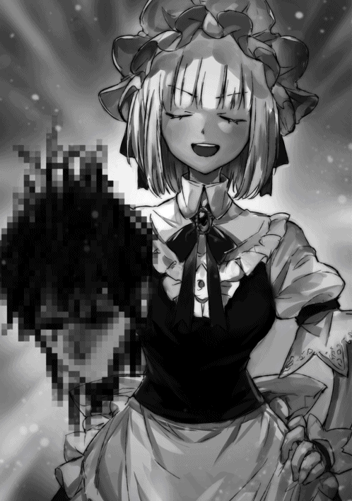

| 闇ギルドのマスターは今日も微笑む2 | |
| 溝上良 | |
| TOブックス (2018) | |
勇者一行との一件からまもなく、念願の平和を謳歌していたマスターはスライム少女・ソルグロスと彼女の依頼に付き合っていた。今回のミッションは伝説の万能薬・エリクサーの入手。だがそこへエヴァン王国の王子から指令を受けた極悪犯罪ギルド「鉄の女王」が「救世の軍勢」を排除するため、忍び寄っていた！
イラスト：こぞう
デザイン：萩原栄一（big body）
今日もいい天気だ。普段、ギルド本部に引きこもっていても、天気の具合ぐらいは確認することができる。しかし、今の天気はとても晴れやかに感じる。
それは、おそらく僕が久しぶりにギルド本部から外に出ているという気持ち的な要因が大きいだろう。ララディと二人で花畑に出かけた後、またしばらく出てこられなかったからね。皆がやたらと心配して、また外に出られなくなったのだ。
確かに、オークやらオーガやらと戦ったけれど、ララディもいたしユウトやマホたちがいたからまったく問題はなかったんだけれど。
......いや、結果的に勇者パーティーを壊滅させてしまったから、何も問題がなかったというわけではないか。
『ギィィィィィィッ!!』
とにかく、僕はそんな暖かいお日様の下、魔物の討伐に勤しんでいたのであった。
......うーん、どうしてこうなったんだっけ？
「マスター、右でござる」
どこからか聞こえてくる少女の堅苦しい言葉。その指示に従って右を見ると、討伐中の魔物────リザードマンが無骨な剣を握って僕に迫っていた。
リザードマンは、簡単に容姿を説明すると人間の形をしたトカゲである。他の言い方をすれば、二足歩行の爬虫類だろうか？ 赤い鱗に、光り輝くぎょろぎょろとした目。長い舌が、時折ひょろひょろと口の外に出てきている。僕は、とりあえず降りかかる火の粉を払うために、適当に魔力を込めた弾を撃つ。すると、リザードマンはあっけなく消滅してしまった。跡形もなく。
これは、僕が特別凄いわけではなく、リザードマンがそれほど強くない魔物だからである。
「流石はマスター。見事な瞬殺でござる」
しかし、この子は僕を恥ずかしいくらいに褒め称える。僕とリザードマン以外に誰もいなかったはずの空間に、ソルグロスがいつの間にか音もなくどこからか現れて、パチパチと拍手をしてくれる。それが嫌味に感じないのは、彼女が唯一露出している目がキラキラと輝いているからだ。
あれは、純粋に他人を尊敬している人の目だ。
というか、一応僕はソルグロスの付添という形で付いてきているわけだから、僕ばかり戦っていてもいいのだろうか？
流石に、闇ギルドのマスターが他所のギルドに......それも合法的に認められているギルドに潜入するのは、シャレにならない。だから、ソルグロスが受けた依頼を、一般人の協力者である僕が勝手についてきているという形になっているのだが......。
「勿論でござる。拙者は、マスターの勇姿を後ろからじっと観察しているだけで、とっても幸せでござる」
ううん？ 何だか、よく分からない答えが返ってきたぞ。
......まあ、いちいちソルグロスが戦っていないかなんてギルドの人が確認するために付いてきているということもないし、僕ばかり戦っていても問題ないか。
そもそも、協力者なんだから僕が戦わないでどうするんだという話だ。
それに、ソルグロスの支援があるからこそ、リザードマンとはいえこんなにスムーズに討伐ができているのだ。まったく姿を現さずに、どこから敵が迫ってきているとか教えてくれたり、撃ち漏らした魔物を苦無で仕留めてくれている。人間よりも嗅覚や気配に鋭い魔物たちが、一切気づくことができない隠密をしているソルグロスは凄い。熱心に僕のサポートもしてくれるし、何かお礼がしたいな。
「ご褒美でござるか!? い、いや......拙者、マスターの御姿を陰からじっと見つめていられるだけで十分でござる。し、しいて言うなら、ぼ、房中術の鍛錬を......」
そっかー。ソルグロスは謙虚だなー。......房中術はダメだよ。僕、君を娘みたいに思っているし。身体の大部分を忍び装束で隠しているソルグロスは、唯一確認できる目を何かの感情で燃え上がらせながら、くねくねと身体をひねっていた。
それにしても、こんな魔物の討伐依頼をこなすのも久しぶりだなぁ。
「い、嫌でござったか？ 拙者が見たところ、ずっとギルド本部に閉じこもっていることが苦痛のようだったので、お誘いをしたのでござるが......」
シュンと申し訳なさそうに頭を下げるソルグロスに、僕は慌てて手を振る。
いやいや、嬉しかったよ。少し前に、ララディと二人でちょっとした外出をしたが、本当にそれっきりだったからね。その後は、引きこもってずっと書類仕事。
もちろん、ギルドマスターとしての職務を放棄するつもりなんてないし、皆のための仕事をすることはまったく苦ではない。
でも、やっぱり申し訳なさがあるんだよね。ソルグロスたちが命を懸けるような危険な仕事をしているのに、僕は安全なギルドでぬくぬくと仕事をしているというのが、我慢ならない。今回のように、僕にもたまには危険な仕事をさせてほしいかな。
......でも、僕が外に出たがっているって、ソルグロスはよく分かったよね。常時笑顔を心掛けている僕の感情を読み取るのは、なかなか難しいことだと思うんだけれど。
「ふふ。拙者はいつもマスターを見ているでござるから......」
布の上からでも、ソルグロスがどこか陶酔したような笑みを浮かべていることが分かった。
ああ、そうなんだ。......一瞬、背筋がゾクリとしたのはどうしてだろうか？
「さ、マスター。まだ、依頼の討伐数には達していないでござる。次のリザードマンの群れを探すでござる」
いつの間にか、リザードマンの鱗を切り取っていたソルグロスが提案してくる。手を血まみれにしながら笑いかけてくる彼女は、何だか凄い迫力があった。
でも、ソルグロスの言う通り、頑張らないと。
今は、他のギルドにお邪魔させてもらっているし......。相手は闇ギルドのメンバーなんて絶対に受け入れたくないだろうけれど。許可も得ていないし、ばれたら絶対に襲われるだろうなぁ......。
僕とソルグロスは、『救世の軍勢』にきた依頼を受けているというわけではない。闇ギルドには、魔物の数を間引きするような討伐依頼はほとんど来ない。
そういうのは、正規ギルドやグレーギルドに集まって、まだ経験の浅い駆け出しメンバーなどが自分を鍛えるために受けることが普通だ。
対して、闇ギルドには非合法な殺人依頼やら、正規ギルドではどうにもならないような超危険種である魔物の討伐、果ては凶悪な犯罪者を捕まえるような依頼が来る。闇ギルド自体が違法なのだから、やってくる依頼だって胸を張れるようなものではないことが多い。
まあ、基本的にそういう依頼は僕が弾いちゃうんだけれど。
でも、そうしていると、うちにやってくる依頼数は非常に少なくなってしまう。闇ギルドに依頼を出すくらいだったら、犯罪すれすれの行為もするグレーギルドの方がまだマシだからね。
だから、たまーに素性を隠して他のギルドに紛れ込める子は、お邪魔させてもらっているのだ。大体のギルドには、サービスの良いことにお試し期間なんてものがある。その期間仕事をして、いいと思えたらそこに加入する。
だけど、うちは一時的にとはいえ他のギルドになんて入りたくないという子が多いので、基本的に報奨金の多い危険な魔物討伐で稼いでいる。
だからこそ、僕の申し訳なさがどんどんと増していってしまうのだ。
......でも、この子たちに殺人のような非人道的な依頼はさせられないしなぁ。
「マスター？」
黙り込んでいた僕を見て、何かあったのかと心配そうな目で見つめてくるソルグロスの頭を撫でる。今日は、僕も一生懸命頑張るから、よろしくね。
「ど、どどどどうしたでござるか!? 拙者、褒められるようなことをしたでござろうか？......はっ！ ついに、マスターが拙者の魅力に気づいて手を出して......!?」
まるで、クランクハイトのようにあわあわと口を布の下で懸命に動かすソルグロスに、僕は苦笑してしまう。君が魅力的なのは全面的に同意するけれど、娘みたいな子に手は出さないよ。
さて、依頼された討伐数まで、頑張ろうか。
「了解でござる」
僕とソルグロスは、気合を入れなおして依頼に取り組むのであった。
ソルグロスにとって、マスターと二人きりのお出かけにたどり着くまでの道のりは、決して簡単なものではなかった。マスター至上主義を掲げ、隙あらばマスターにすり寄ろうとする『救世の軍勢』のメンバーが、そう簡単に自分以外のメンバーがマスターとイチャイチャすることを許すはずもない。考えられるありとあらゆる妨害工作を画策し、実行するだろう。ソルグロスだったら確実にしていることなので、他のメンバーのこともよく分かっていた。
だから、マスターと二人きりで外出なんて、今まで不可能だったのである。
だが、その『救世の軍勢』の中だけで通じる常識は、ある時あっさりと打ち砕かれた。それを成したのは、未だに上手く歩くことができないと嘘をつき、マスターにべたべたと引っ付いて不愉快極まりないロリアルラウネ、ララディである。彼女は、最初に仕事を終わらせ、たまたまギルド本部にメンバーがいないという偶然......というか奇跡が重なったこともあり、なんとマスターと二人きりで外出をしやがったのだ。
とはいえ、すぐに勇者パーティーが乱入したので、純粋に二人きりだったというわけではなかったが。それでいい。もし、本当の意味で二人きりになり、ララディが暴走でもしてマスターに色々な意味で襲い掛かっていたら......。
「（暗殺でござる）」
ソルグロスは目を怪しく光らせながら、心の中で呟いた。ララディはギルドの仲間なのに、その意思は本気だった。『救世の軍勢』に仲間意識などあってないようなものだから、この考えもある意味当然かもしれない。というか、妨害も暗殺もガッツリ企てていたのだが。
実は、ララディが拉致監禁という斜め上の考えを持っていたとは、流石のソルグロスも知らなかった。ララディのマスター連れ去り事件は彼女に猛烈な腹立たしさと忌々しさを与えたが、悪いことばかりではなかった。あれによって、マスターを外に連れ出すという前例ができたのだ。
つまり、不可能であったマスターとのイチャイチャデートが、ソルグロスにも実行可能だということになったのだった。
「そんなの、認められるわけねーじゃねーですか!!」
そのことを伝えると、目の前の少女────ララディは緑色のふわふわとした髪を振り乱しながら拒絶してきた。その誰もが愛らしいと思える顔を憤怒に歪め、ソルグロスを殺気と共に睨みつけてきた。頬に描かれている大きな闇ギルドの紋章が特徴的な、『救世の軍勢』に所属するギルドメンバーだ。
「いやいや、ララディ殿もマスターを連れ去ったではござらんか」
「あれは！ ララが誰よりも早く、スマートにお仕事を終えたからじゃねーですか。ララの功績の正当な対価です」
ふふんと、ない胸に手を当てて自慢げに笑うララディ。貧乳にコンプレックスを持っているくせに、どうして胸に目がいくようなことをするのだろうかと、普乳のソルグロスは首を傾げる。
「正当な対価なら、ソルグロスも受ける資格がある」
「なっ......!?」
二人の会話に割り込んでくる少女を見て、ララディは信じられないと目を見開く。黒い髪を短く切りそろえた、騎士風の装備を身に着けた少女────リッターが、無表情で話に入ってきたのだ。
「ば、馬鹿な......！ マスターに発情した雌猫のように、常時引っ付きたがるリッターがソルグロスを援護するなんて......っ!?」
くわっと目を見開くララディ。
いや、お前も似たようなものだろとソルグロスは心の中で突っ込んでおいた。
しかし、ソルグロスからしてもリッターが援護してくれることは意外だった。
「どうしたでござるか、リッター殿。少々気持ちが悪いでござる」
「勇者パーティーだけじゃなく、グレーギルドも王国騎士も一度に集められたのはソルグロスの功績が大きい。私はそれを認めているだけ」
「ほほう......。まあ、ありがたいでござるが」
リッターはマスターの前以外ではほとんど表情を変えないため、ソルグロスでもその意図を読み取ることはできなかった。
まあ、今はその好意を受けておいた方がいいだろう。
「うぐぐぐぐ......っ！ で、でも、他のメンバーがそう簡単に認めるとは限らねーです！」
確かに、感情が豊かなヴァンピールやクーリン。そして、不機嫌になるとむっつりとするシュヴァルトからは散々文句を言われた。
しかし......。
意地の悪いララディの言葉に、ソルグロスはとどめの一言をくれてやる。
「アナト殿からもすでに許可は得ているでござる」
「なにぃっ!?......です」
（一応）メンバーのまとめ役となっているアナトからの許可を得たという事実に、ララディは今度こそ打ちのめされる。アナトに唯々諾々と従うつもりは毛頭ないが、彼女の決定は色々な思惑はあれど、過半数のメンバーが同意したものである。
つまり、ソルグロスがマスターと二人きりで過ごすことも、多くのメンバーが認めたということになる。
「ば、馬鹿だ馬鹿だとは思っていたですが、ここにいる奴らはマスターとララ以外、救いようのないほどの馬鹿だったようです......。あぁ、マスター。ララが......ララが馬鹿共から必ずお助けするです......」
「本当に、ララディ殿は酷いでござるなぁ......」
がっくりと膝をつき、細い指を絡み合わせながら天を仰ぎ見るララディ。宙には、マスターの引きつった笑みが浮かんでいた。
「おっと。リッター殿、庇ってくれて助かったでござる。あのままだったら、ララディ殿は絶対に納得してくれなかったでござる」
ふらふらーっと、ララディとソルグロスに対する興味をなくしたように出て行こうとするリッターに、ソルグロスは礼を言う。建前だ。心の底から感謝なんてしているわけがない。
「......いい。私の時は、よろしく」
「............」
ほら見たことか、とソルグロスは布に隠された口元を苦々しげに歪める。リッターが......というより『救世の軍勢』の面々が善意で仲間を助けるなんてことはありえない。何かしら、自身の利益にならなければ絶対に手を出さないだろう。ギルドとしておかしいが。
リッターは、彼女自身がソルグロスと似たような状況になった時、彼女の側に立てと要求してきているのである。
「......了解でござる」
ソルグロスは一応コクリと頷いておいた。
確かに、今はリッターの援護があって助かった。
とはいえ、リッターの時に必ずしも自分が彼女を助けるつもりはなかった。
「さて、拙者もそろそろ行くでござるか」
リッターが出て行った後、ソルグロスもマスターの所に向かうことにした。膝をついてブツブツと言っているララディをその場に置き、彼女もこの場を去ったのであった。
◆
ソルグロスは普段からは考えられないほど上機嫌であった。これほど機嫌がいいのは、一日中マスターを陰から見守っていたとき並である。
それもそのはず、これからマスターと二人きりで外出ができるのだ。ふんふんと鼻歌を歌いながら上機嫌に廊下を歩いていると......。
「......ちっ」
激しく不快な気配を察知した。
それは、そりがまったく合わないララディよりも腹立たしい気配であった。ソルグロスは衝動的に、その気配がした方向に苦無を投げつける。
「わっ！ びっくりするなぁ、もう......」
期待した肉を裂く音は聞こえず、耳にずっと残るような清涼感のある声が戻ってきた。聞くだけで幸せになれるような魅力的な声だったが、それはソルグロスに一切通用しない。
「......『救世の軍勢』でもない者がギルド本部に紛れ込んでいたら、攻撃は当然でござるよ」
「僕だって分かっていたくせにー」
「うぅ......尚更でござる」
このこのーっと気安く近寄ってきて、肘でぐいぐいと身体を押してくるリミルのペースに飲み込まれてしまう。パーソナルスペース何それおいしいのという接し方もあるが、やはりその信じられないほど整った容姿も大きな要因の一つであろう。
清純さを表すような、長くて綺麗な黒い髪。サラサラと彼女が動くたびに揺れるそれは、同性でさえも魅了するようなものだった。ソルグロスは引きちぎりたいと思っていたが。目はクリクリと大きく、表情もコロコロと変わって非常に愛らしい。ララディも（マスターの前では）表情を可愛らしく変えるが、リミルは彼女にはない大人っぽさも入っていた。
そして、目を引き付けられるのはララディやクランクハイトが見れば発狂しかねない......というかリミルを見るたびにもぎ取りたくなる豊満な乳房である。大して乳房の大きさにこだわりを持たないソルグロスでさえも、少し嫉妬に駆られてしまうほどの見事な胸。
それは、『救世の軍勢』一の大きさを誇るクーリンをも凌駕していた。
それで、不自然ではなくスタイルが整っているのも腹立たしい。
「ん？ どうしたの？ もしかして、僕にも興味を持ってくれたり？」
「拙者の頭はマスターでいっぱいでござる」
「ですよねー」
知ってたと言いながら、ケラケラと笑うリミル。
「で？ どうしてリミル殿がここにいるでござるか？ ギルドメンバー以外は入ってはいけないでござるよ。次見つけたら殺すって言っておいたでござるよね？」
「えへへ。また、マスターの所に遊びに来たんだよ。やっぱり、マスターって凄いよねぇ。面白くて温かいし」
「ふふん！ そうでござろう、そうでござろう！ マスターは偉大でござる」
殺すと宣言していたが、リミルがマスターを褒め称えたので一気に機嫌がよくなるソルグロス。両手いっぱいに持っていた苦無をどこかに収納し、陶酔しきった目でいかにマスターが素晴らしいかを語りだす。
「じゃあ、またマスターの所に遊びに来るねー」
「──────というところもまた素晴らしいものでござって！ でも、やはり拙者が一番おすすめするのはマスターの逞しい後ろ姿でござる。背中を陰から見ているだけで、圧倒的な安心感が与えられ、何からでも守ってくれそうな──────」
リミルはヘラっと笑って一瞬で姿を消した。ソルグロス以外のメンバーも、そろそろ彼女の気配に気づきかねないからである。ソルグロスは誰も聞く者がいないマスター自慢を、そのまま数時間続けるのであった。
「くっ......リミル殿......！ 拙者を惑わし、その隙に見事逃げおおせるとは......。流石は、ギルド本部に何度も不法侵入してきている猛者でござるな......！」
ソルグロスは立派な木の枝に乗り、マスターを誘う前のことを思い出して悔しそうに歯噛みしていた。世界でもトップクラスの実力を誇るメンバーがそろっている『救世の軍勢』のギルド本部に侵入できる者など、リミル以外に存在しないだろう。それも、複数回ともなればまさに神業である。
もちろん、ギルド側もやられてばかりではなく、見つけ次第殺せというサーチ＆デストロイ作戦を立てているのだが、うまい具合にいつも逃げられてしまうのである。今回に限ればソルグロスの自爆のように考えられるが、自分のことはすでにすっかりと棚に上げている。
そして、リミルのことを考えていた思考はすぐに放棄される。
「はぁぁ......マスター......！」
ソルグロスが目をドロドロに蕩けさせて見る視線の先には、愛おしくてたまらない『救世の軍勢』のマスターがいた。彼は背中をこちらに向けて、リザードマンと凛々しく戦っている。その逞しい背中に、ソルグロスの女が強く刺激される。
「マスターの戦い方、とっても素晴らしいでござる。全ての敵を一撃で屠るその技量、拙者も感服でござる......！」
暴力的な魔力を込めた弾を次々と撃ち、リザードマンを屠っていくマスターに男らしさを感じるソルグロス。力を振るうだけだったら、男らしい男としてソルグロスはここまで乱れることはなかったかもしれない。
しかし、マスターの表情は戦闘中にもかかわらず穏やかな笑顔を浮かべていた。その余裕に、またソルグロスはキュンと胸と下腹部がうずくのであった。
「あぁ......あの笑顔もたまらないでござる......！ 正面から見てみたい思いもかなり強いでござるが......っ!!」
だが、ソルグロスは動こうとはせず、マスターの背後を維持し続けていた。彼女の身体能力なら、木々の間を飛び移ることは何ら難しいことでもないし、望むのであればすぐにでもマスターの顔を正面から拝むことができるだろう。それをしないのは、生物の弱点である真後ろを守るため......ということも勿論あったが、一番はソルグロスの性癖であった。
「はぁぁ......マスター。陰からずっと......ずぅっと見守りしているでござるぅ......！」
ソルグロスは、マスターを陰からじっと観察することが大好きなストーカー気質の女だった。マスターと直接正面に向かい合って話をするのも、非常に心が満たされて気持ちがよくなる。
しかし、それ以上に自分の存在に気づいていないマスターを、後ろからじーっと見続けることの方がもっと彼女を興奮させた。
もはや、生粋にして完全なストーカーと成り果てているのがソルグロスであった。
いつでもどこでもマスターを見守っている。彼女も他のメンバーと一緒で『監視対象』があるので、四六時中マスターを見ていることはできない。
だが、それでもソルグロスは『とある方法』を開発して、マスターの観察に成功していた。
「ふふっ。後ろから見ているのが一番好きでござるが、やはり色々な角度からマスターを見るのもいいでござるなぁ」
ソルグロスは片目に手を当てて、不気味に微笑む。よく見ると、彼女の右の手首から先がすっかりとなくなっていた。リザードマンと近接格闘をしていないソルグロスは、もちろん彼らに斬りおとされたというわけではない。
自分から、切り離したのである。ソルグロスがどうしてもマスターを一日中観察しておきたいということから編み出された『とある方法』とは、分裂である。自身の身体の一部分を斬り離し、そこから得られる情報を本体であるソルグロスに送らせるのである。
「右から見るマスターもなかなか......。おぉっ！ 今は左からの方がいいでござるな!!」
今も、ソルグロスはマスターの四方に右手を分裂させたものを配置して、マスターをありとあらゆる角度から観察していた。頬を紅く染め、うへへへっとよだれを垂らしていそうな笑みを浮かべる。幸い、布で隠されているから、まだ分かりづらかった。
「おっと。その方向から行かれてはマスターも少々お困りになるでござるなぁ」
しかし、ソルグロスはただマスター呆けながら見ているというわけではなかった。過剰な数のリザードマンや、マスターが対処しづらそうな方向から襲い掛かろうとしているリザードマンは全て見逃さずに察知して、未然に処理する。
今も、背後からマスターに忍び寄ろうとしていたリザードマンに苦無を投げて仕留める。
まず、両目に苦無を突き刺して、視力を奪ってから喉にとどめの苦無である。少々やり過ぎな気もするが、マスターを狙ったのだから仕方がない。
「っ!?」
一仕事を終えてふーっとため息を吐くソルグロスを、マスターが魔力弾を撃ちながら横目で見る。穏やかな弧を描いている口元が、ありがとうと形を変える。
「......ふう」
ソルグロスは身体をしばし硬直させた後、息を吐き出した。やけに穏やかな声だった。
「おぉ。マスター、またリザードマンを全滅させたでござるな。流石でござる」
酷くスッキリとしたソルグロスは、冷静にマスターを見ることができた。彼の周りのリザードマンの死体は、全身が綺麗に残っているのはそれほど多くない。マスターの魔力弾に当たったものは、大概がその大部分を消滅させているからである。
ゆえに、リザードマンだと死体を見ただけで分かるのは、やたらと苦無が突き刺さっている個体だけだった。
「これで、討伐数は稼げたでござるな。......残りの時間は、マスターとどう過ごせばよいか......」
今回の討伐依頼を受けたのは、第一にマスターがギルド本部に閉じこもっていて気を滅入らせていたので、それを発散してもらうため。
そして、第二にソルグロスがマスターの戦う姿を背後から観察したかったからである。この二つは、もう十分に満たされただろう。残りの時間は、マスターとのんびりと街を見まわるのも良し、何とかしてマスターを誘惑して宿屋に連れ込むのも良し。
おそらく、何人かのメンバーは何らかの手段を用いて自分たちを監視しているだろうが、『救世の軍勢』で最も隠密の分野に特化しているのはソルグロスである。撒くことなんてたやすいことだ。
「うへへへへ......。マスター......」
何とも危ない笑みを浮かべるソルグロス。頭の中はピンク色の妄想でいっぱいだった。
そのせいで、ソルグロスは自分とマスター以外の気配が近くにいたことに気づくのが遅れてしまった。
「し、しまったでござる......っ!!」
気配の数は四。どれもこれも取るに足らない力しか感じず、彼女の戦闘力からすると非常に格下の四人組だった。そのことにほっと安堵する。
もし、敵対の意思を見せてきたとしても、この四人ならマスターに一切の危害を加えさせる前に処分することができそうだ。マスターも近づいてくる者の気配に気づいたようで、その方向を見る。
「うわっとぉ！」
茂みをガサガサとかき分けてやって来たのは、ソルグロスが察知したように四人組の男たちだった。全員武器や防具を身に着けており、どこかのギルドに所属している冒険者だと判断できる。その四人の中で先頭に立っていたのは、赤い髪を持つ少年だった。
「あんた......っ！」
彼はそんなことを言って、ズカズカとマスターに近づいていく。どこか鬼気迫る表情をしていて、マスターも困惑気味な笑みを浮かべている。
─────それは、ダメだろう。
「ちょっと、待つでござる」
ソルグロスは潜伏していたマスターの背後の木から飛び降り、一瞬で少年の背後につく。
そして、苦無を首元にくっつけて、これ以上勝手に動くと首を掻き切ると意思表示する。
「うわっ!?」
「ルシル!!」
少年───ルシルは、突然背後から苦無を首元に突き付けられて、驚きと恐怖が入り混じった悲鳴を上げる。彼と一緒に行動していた青年が、どうしようもなく彼の名前を呼ぶ。今すぐにでも助けに行きたいのはやまやまなのだが、あんなにソルグロスが密着していたら助けられるはずもない。一歩踏み出した時点で、ソルグロスはルシルの首を切り裂くだろう。
「少年も貴殿たちも、勝手に動かないよう警告するでござる」
「いっ......!?」
ソルグロスはほんの少し手に力を入れると、鋭く砥がれた苦無は小さく少年の首に傷をつけた。すっと赤い線が入り、小さく血が浮かび上がる。
「ち、違うんだ！ 俺たちはあんたたちに危害を加えようとしているんじゃない！」
「いやいや。あんな顔でマスターに迫ってそんなことを言われても信じられないでござる」
四人組の中で一番年配そうな男が、切羽詰った表情で誤解を解こうとする。
だが、もとよりマスター以外の言葉に聞く耳持たないソルグロスには届かない。彼女の中では、すでにこの四人組の処理は確定事項だった。
「待って！ 本当に違うんだ！」
今度はルシルが声を上げる。
もちろん、いくら距離が近いからといってもソルグロスの耳には届かない。
さて、とりあえずこの子の首を掻き切ろうと彼女が力を入れようとした時、マスターがソルグロスを制止した。
「む、了解でござる」
男やルシルの大声にはまったく耳を貸さなかった彼女だが、マスターの指示にはすぐに従って苦無を外す。
そして、また一瞬でマスターの後ろに移動する。
「は、速い......」
四人組の中で今まで話していなかった線の細い青年が、目を大きくさせる。ルシルも目を白黒とさせていたが、ようやく死の恐怖から解放されて大きく息を吐く。
「あ、おう！」
それで、どうして近づいてきたのかとマスターが優しく話しかける。その寛大さに、ソルグロスの忠誠心がぐんとアップする。
そもそも、よっぽどのことがない限り、街の外で冒険者同士はなるべく接触しないことが常識である。街の外にいるということは何らかの依頼を受けているのであり、近づいていくと邪魔をしてしまうことにもつながるからである。
だから、どうしても助けが必要な時以外は離れて行動する。
積極的に接近するとすれば、街の外に出ている冒険者を襲って金品を強奪するようなグレーギルドか......。
その時は、一分もしないうちに四人組を皆殺しにするつもりのソルグロスであった。
......が、彼女の意気込みはいきなり挫かれることになるのであった。
「頼む！ 俺たちを助けてくれ！」
ルシルがガバッと頭を下げて、そう請うてきたのであった。
「頼む！ 俺たちを助けてくれ！」
少年────彼らが呼んでいた名前を聞く限り、ルシルは頭を下げて、僕とソルグロスにそんなことを言ってきた。
助け？ 僕は接触した四人の男たちを観察する。うーん......皆、怪我をしているわけでもなさそうだし、どういった助けが必要なのだろうか？ 街の外で冒険者に助けを求めるときは、大概はパーティーメンバーが怪我をして動けなくなって、回復アイテムを分けてほしいといったものだ。
だが、この四人は全員元気に動けるようだし、そういった助けは必要ないのだろう。......どんな助けが必要か見えてこないので、できれば事情を教えてほしいんだけれど。
「断るでござる」
僕がそう聞こうとしていたら、何故かソルグロスがきっぱりと言い切ってしまう。
は、早い。まったく考慮することもなく、即答で拒絶したね。
「主様にお力を貸していただこうとしている立場にもかかわらず、敬語も使えないとか論外でござる。死んで出直せ」
僕が闇ギルドのマスターだとばれないように、他の人が近くにいるときは僕の呼び名を『マスター』から何かに変えてとお願いしていたことを実行してくれるのはいいんだけれど、言い方がきつい。ルシルはもちろん、他の三人も一歩退いてしまっているじゃないか。彼を見る限り、かつて勇者をしていたユウトよりも小さい。ルシルは見たところまだまだ子供だし、僕は全然気にしていないよ。
まあ、ララディのように見た目と実年齢が異なる種族という可能性もあるので、ルシルが子供だと断言するのはまだ早いが。とにかく、話くらいは聞いてあげてもいいんじゃないかな？
もちろん、ソルグロスが嫌じゃなかったらなんだけれど。
「主様がそう仰るのであれば、拙者から異議はないでござる」
ソルグロスは澄ました顔で、再び僕の斜め後ろに陣取った。
もし、何かあってもすぐに対処できるような位置だ。何もないとは思うけれど、ソルグロスの心遣いが嬉しい。
「それで、どういう用件か、さっさと的確に話すでござる」
ソルグロスの質問に、何故かルシルたちは辺りを気にする仕草をする。誰も周りにいないことを確認してから、声を小さくしてひそひそと話し始めた。
「ここじゃあ、誰に聞かれていてもおかしくねぇ。俺たちのギルドに来てもらっていいか？」
「だから、敬語を使うでござる」
ちっと舌打ちをするソルグロス。
ま、まあ、彼女のことは置いておいて、他所のギルドの本部にかぁ......。ちょっと、行きづらいなぁ。
「貴殿たちがどのような用件で主様のお力を借りたいのかは存ぜぬが、よく知らない者たちのギルド本部に行くわけにはいかないでござるよ」
呆れたようにため息を吐きながら言うソルグロスであったが、まさに彼女の言う通りであった。彼らがどんな目的で僕たちに接触してきたのかわからない以上、のこのこと彼らの庭に入り込むわけにはいかない。ここでしなくとも、仲間が大勢いるギルドに連れ込んでから強盗をしないとも限らないのだから。
まあ、彼らの様子を見てそんなことをするようには見えないのだけれど......。僕たちが普通のギルドの冒険者ならこれほど警戒しなくてもよかったんだろうけれど、僕たち、正規ギルドどころかグレーギルドでもない、闇ギルドの冒険者だからね......。
「ち、違う！ 俺たちは......っ！」
「ルシル」
すげなく断られたルシルはまだ言いつのろうとするが、四人の中で一番年配そうな男が彼の肩に手を置いて首を振る。彼らも、無茶を言っていることは自覚しているのだろう。男の反応を見て、残念だけれど別れを告げようとしたその時だった。
「頼む！ いや、お願いします！ 俺たちを信じてくれ！」
「る、ルシル!?」
ルシルは膝をつくと、ガツッと痛そうな音を立てて頭を地面に押し付けたのだ。
だ、大丈夫か......？
「こ、これは......!?」
ソルグロスが目をハッと大きくさせて驚愕する。
し、知っているのか？ こんな風に聞かなければいけない気がして、その本能に従う。
「これは、ＤＯＧＥＺＡ！ 東方で最上位の謝罪方法でござる。存在は聞いていたでござるが、まさか使い手がいるとは......！」
ソルグロスはごくりと喉を鳴らして戦慄していた。
......いや、土下座ってそんな物々しいものだったっけ？
というか、忍者も東方の戦士だよね？ 忍者の姿をしているのに、見たことなかったの？
それにしても、ここまでされたら断りづらいよねぇ......。
「主様。しかし、怪しいと思うでござる」
悩む僕を見て、ソルグロスがそう箴言してくる。
うん。確かに、まだ完全に疑いが晴れたわけではない。
まだ、ルシルたちの目的もさっぱりわからないし、彼らが誘い込んだ冒険者たちを襲うグレーギルドの人間ではないと決まったわけでもない。
しかし、僕には必死に頼み込んでくるルシルのことが、どうしてもそんなことを考える悪い子には見えなかったのだ。
「本当か!?」
僕は、彼らのギルドに行くことを伝える。
すると、四人とも大喜びしていたが、一番笑顔を輝かせていたのは土下座までして頼み込んできたルシルだった。子供らしい快活な笑みを浮かべている。
......少し前までは、ギルドの子────ここではソルグロスだが────を最優先して少しでも危険があるのなら付いて行かなかっただろう。誰にでも心優しかったユウトに、ほんの少し影響されたのかもしれない。
「主様......」
心配そうにこちらを見上げてくるソルグロス。いつも僕の陰にいて表情を見せてくれないので、非常に新鮮に感じてしまう。
なに、大丈夫だよ。
もし、何かあっても、君だけは僕が守りぬいてみせるから。
「主様......っ！」
ソルグロスは感激したような声を出す。
うん、大丈夫だ。最悪の場合は、ソルグロスを無理やり『救世の軍勢』の本部に送りつけよう。
......それにしても、ソルグロスの態度がおかしい。目は潤んでいるし、布に覆われている口はポカンと開いてハアハアと荒い息をしている。自分の腕で身体を抱きしめて、何か変な動きをしないように押さえつけているようだし。
「主様。拙者、もうたまらないでござる」
うん、何が？
「おーい！ 早く来てくれよ！」
ルシルがブンブンと手を振って僕たちを呼ぶ。
「ちっ！ あの者たちがいなければ今頃押し倒すこともできていたでござろうに......！」
四人の男たちの元に歩いていく僕の背中から、そんな言葉が聞こえたような気がした。
四人に連れられて、僕とソルグロスは近くの街に入った。
そこは、ソルグロスが仮入団しているギルドも入っている街だった。
まあ、そういった偶然もあるだろう。普通のギルドは安全な街の中につくられるもので、僕たちのギルド本部のように、魔物や山賊の危険が多い街の外に作られている方が珍しいのだ。街の外に作られているギルドは、大概が闇ギルドであったり闇ギルドすれすれのグレーギルドだったりする。街の中に作ったら、王国騎士が飛んできそうな闇を抱えたギルドだ。そのことから考えると、ルシルたちのギルドは犯罪性の高いギルドではないということが分かる。
もちろん、完全に気を許すわけではないが、最悪の事態は免れそうでほっと安心する。その最悪の事態とは、僕がこの四人を殺さなければならないことだ。闇ギルドのマスターとはいえ、人殺しが好きというわけではないからね。
「俺たちのギルドはちょっと郊外にあるんだ。街の中心部にギルドを置けるほど、金がなかったから」
ルシルがそんな事情を説明してくれる。
ああ、大丈夫だよ。僕も普段はギルド本部に引きこもっているとはいえ歩いているだけでばててしまうということはないし、ソルグロスも身体能力が高い子だ。これがララディだったら僕が背負わなければいけなかったかもしれないけれど、彼女は呼吸も歩みも一切乱すことなく、僕の後ろにぺったりと張り付いてた。
......うん、別に横に来てならんで歩いてくれてもいいんだよ？
「いえ。拙者はここがいいでござる」
そ、そう。あまりにも明確に、速攻で拒否されたので、あっさりと引き下がってしまう。
せ、背中にソルグロスの視線がちくちくと刺さって痛い......。
「着いたぜ！ ここが、俺たちのギルドだ！」
あ、着いたんだ。僕はルシルの言葉につられて顔を上げ、ソルグロスのじっとりと視線から解放されることに清々しい解放感を覚えていたのだが、目に入ってきた彼らのギルドを見てまた固まる。
もちろん、笑顔は崩していないけれども。
何だか......その......。
「ボロいでござるな」
「何だと、テメェっ!!」
うわぁっ！ ソルグロスがハッキリと言ってしまったぁっ！
ルシルは小さな身体で怒りを表し、ズカズカと彼女に迫っていく。
止めて！ ルシルが死んじゃう！
「まあまあ、ルシル。事実なんだから仕方ないだろ」
「離せ、ヘロロ！」
しかし、ソルグロスが苦無を抜く前に、穏やかそうな青年がルシルを止めてくれる。
良かった。子供の死体が出来上がることはなかったんだね......。僕は青年────ヘロロにナイスと心の中で称賛した。
「まあ、確かにボロっちいけど、崩れることはないから安心してくれ」
苦笑しながら僕とソルグロスに話しかける壮年の男。
ええと......確か彼はアポロといったかな？ 僕はソルグロスの頭にチョップをして、古さは気にしないと彼に告げる。
「あぅ......。酷いでござる......」
ソルグロスは頭を押さえながら、恨めしそうに見てくる。
いや、君の方が酷いから。
「何をしているんですか？ 早く入りましょう」
僕たちの会話を見て苦笑しながら先に進むように提案してくるのは、眼鏡をかけたやせ形の男。
彼は......リーグだったかな？ 彼の首に垂れさがるネックレスが、彼が天使教の信者であることを教えてくれる。
......リーグにはあまりかかわらないでおこう。この世界の信者は、何故か狂信といった域での信仰に達している者が多い。以前のメアリーのように、もし僕たちのことが新興宗教を容認している闇ギルドのメンバーだとばれたら、また豹変して襲い掛かってくるに違いない。悪い人ではなさそうだし、触らぬ神には祟りなしだ。
「さあ、入ってくれ」
ふと気づくと、僕とソルグロス以外のメンバーは皆ギルドの中に入っていた。アポロが扉を開けたまま、僕たちを待っている。
さて......この後の展開はどうなるのやら......。彼らのギルドで待ち構えていた他のメンバーたちが、一斉に僕たちに襲い掛かってくるということもあり得る。
その時は、ソルグロスだけは何としても逃がさないといけない。
「大丈夫でござる。拙者が、主様のことは必ず守り通してみせるでござる」
ソルグロスは嬉しいことにそんなことを言ってくれる。
いや、むしろ逆だ。僕が君のことを守るよ。
「はぅっ！」
僕はソルグロスに微笑みかけてから、彼らのギルドに入ったのであった。
◆
彼らのギルドは非常にこじんまりとしたもので、『救世の軍勢』の本部とは比べ物にならないほど小さくて古かった。少し大きい一軒家くらいの広さで、とてもじゃないが大所帯のギルドが使っている本部とは思えない。
さて、ギルド本部の評価はそれくらいにして、どれくらいのギルドメンバーがいるのかを探らなければならない。僕は抜け目なく目だけを動かして辺りを窺うが......。
「少ないでござるな」
ソルグロスが後ろからこそっと話しかけてくる。
うん、彼女の言う通りだ。このギルド、冒険者が驚くほど少ないのだ。
というか、僕たちと出会った四人以外に気配があるのは一人だけだ。
「構成員がいなくておかしいだろ？」
アポロは僕たちの反応を見ずに、苦笑しながらそう言った。
まあ、僕はいつもニコニコ笑顔だし、ソルグロスも目だけしか露出していないから表情なんて読もうと思っても読めやしない。彼も不思議に思われるのは分かっていたのだろう。
何故なら、ギルドは最低でも五人以上構成員がいないと、ギルドとして認められないのだ。うちも闇ギルドで数はかなり少ない方だが、それでも僕を含めて十人いる。
それが、アポロたちのギルドはギリギリの五人。超零細ギルドだ。
「本当はもう一人いるんだ。そいつを合わせて五人なんだが......」
「大丈夫でござる。それは分かっているので」
僕たちは四人しか見ていないから、ギルドとして成り立っていないのではと思われてはたまらないとアポロは弁明を始めるが、ソルグロスがそれをさえぎってしまう。
まあ、気配で分かっているから余計な説明はいらないよね。
「それよりも、ここまでついてきてやったのだから、さっさと話してほしいでござる」
「......ああ。その前に、最後のメンバーを見てほしいんだ」
ソルグロスが少々図々しく思えるほどグイグイと迫っていくと、ルシルが決意した表情でそう提案してきた。最後のメンバー......ということは、あの扉の先にある気配の持ち主かな？
でも、少しその気配には違和感を覚えていた。
これは、あまりにも......。
「おい、いいのか？」
「ああ。助けてもらうのに、隠し事なんてできねえだろ？ それに、あいつを見せないと話ができねえしな」
ヘロロがルシルの肩を掴み、確かめるように問いかける。その表情には心配という感情しか浮かんでおらず、彼が優しい男だということが分かる。そんな彼にコクリと強い表情で頷くルシル。
「こっちに付いてきてくれ」
ルシルが僕とソルグロスを誘導したのは、やはりあの気配がする扉。僕が感じた違和からすると、おそらく危険はないだろう。そのように判断してルシルの後に付いていく。
「驚くだろうけど、できれば顔には出さないでほしい。お願いできるか？」
真剣な目で僕を覗き込むルシル。
......なるほど。あの気配から察すると、この扉の先にいるのは......。僕はコクリと頷いた。
もしかしたら、僕も何かしら手助けできるかもしれない。ソルグロスも「主様にお願い事が多すぎるでござる......」とブツブツと言っていたが、彼女も頷いてルシルに肯定の意思を示した。僕たちの反応を見てルシルは一瞬嬉しそうに微笑むと、また表情を引き締めなおした。
「......じゃあ、中に入ってくれ」
彼はそう言って、ギイッと扉を開けた。
中は、古い彼らのギルド本部とは思えないほど、清潔に整えられていた。
しかし、やはりギルド自体が貧しいようで、家具などは非常に少なく殺風景なものだった。簡素なベッドと、その近くに小さな棚が置かれてあるくらいである。そのベッドの上には、一人の少女が仰向けで寝ていた。彼女の容姿はルシルと非常によく似ており、その長い髪が短ければルシルにそっくりだった。
おそらく、彼と彼女は兄妹だろう。それだけだったら、別に何の変哲もない光景である。
「うぅ......」
異常な点は、その少女が苦しそうにうめき声をあげ、脂汗を顔中に浮かばせながら眠っていること。
そして、彼女の顔の左側には、おぞましさを感じさせる歪な文様が浮かび上がっていることだった。
「主様、この者......」
ソルグロスも気づいたようで、僕に小さく耳打ちしてくる。
うん、そうだね。
─────この子は、呪いをかけられている。
「はぁ、はぁ......」
苦しそうに喘ぐベッドの上の少女は、悪質な呪いにかかっていた。僕が感じたおかしな気配は、彼女が呪い持ちだったからだろう。
「あれ......お兄ちゃん......？」
「ルシカっ!!」
しんどそうに荒い息をしていた少女の目が、うっすらと開く。僕とソルグロスが入ってきたことで、彼女を起こしてしまったようだ。ルシルが慌てて彼女の側に駆け寄る。
「大丈夫か!? ごめんな、すぐに出て行くから」
「もう、大丈夫だよ。あれ？ その人たちは......？」
心配そうに言うルシルに、少女────ルシカは苦笑していた。
一見、仲の良さそうな兄妹に見えるが、気候が暑いわけでもないのにルシカの顔に汗がべったりと張り付いていることが異様だった。困惑した表情で僕とソルグロスを見るので、僕は自分から彼女に近づいていく。いつも以上に優しく見えるように笑顔を作って、ルシカに話す。
「え、そうなんですか？」
「お、おい......！」
僕は、自分が医者だと嘘をついた。目を丸くするルシカと、僕を見て驚くルシル。
ここで、ルシルに嘘を暴かれたら何もできなくなってしまうので、ソルグロスに目配せをする。
聡明な彼女は僕のお願いしたいことをくみ取ってコクリと頷いた。
「ルシル殿、こちらに」
「わっ！ 何すんだよ！」
ソルグロスがルシルを連れて離れてくれる。彼女が説明しているうちに、済ませてしまおう。僕はルシルを連れて行かれて不安そうな表情を浮かべているルシカに、笑顔で話しかける。ルシカの容体が見たいことを伝えると、彼女は幼い子供には似つかわしくないような達観した笑みを浮かべた。
「お兄ちゃんが連れてきた人だからいいですけど......見てもらっても、一緒だと思いますよ。お兄ちゃん、色々なお医者さんを連れてきてくれたけど、皆治せないって言っていたし......」
そうか。ルシルはルシカを助けようと駆けずり回っていたのか。
まだ、お願いごとは聞いていないけれど、間違いなくルシカのことだろう。
それよりも、まずはこんな諦めた笑みを浮かべている彼女を、どうにかしないとね。
「......本当ですか？」
僕は自分がなかなか腕のいい医者だという嘘を彼女に伝える。
だから、安心して任されて欲しいと伝えると、ルシカは面白そうにクスクスと笑った。
しかし、その目から諦めの色はまったく薄くなっていなかった。うーん......やっぱり、論より実践だよね。
「おい......あの姉ちゃんから聞いたけど、大丈夫なんだろうな」
「口の利き方！」
ルシルが心配そうに聞いてくる。ソルグロスは後ろで『ござる』口調を完全に忘れて怒っていたが、僕は気にせず大丈夫だと答える。
「はい、お願いします」
僕が今から容体を見ることを伝えると、ルシカはコクリと頷いて目を閉じた。ルシルと同じ赤い髪に手を置き、ルシカの身体の中を探る。
しばらくすると、彼女をむしばむ呪いの強さが改めてよく分かった。このように探る前からルシカが呪われていることが分かるほど濃密な呪いだったが、しっかりと状態を確認するとその凶悪さがハッキリと伝わってきた。
うん......この呪いは......。僕は自身の魔力をルシカの身体が驚かない程度に薄めて流し込んでいく。
「ふわ......」
「ルシカ!? おい、あんた何をやって......っ!?」
ルシカが目を丸くして僕を見上げるので、何かよからぬことをしたのではないかとルシルが猛然と僕に詰め寄ってくる。そんな彼の前に立ちはだかるのは、忍者姿のソルグロスである。ルシルを見る目は、僕と会話するときのような暖かさはまったくなく、氷のように冷たい瞳だった。
それは、彼を足止めするには十分だった。勘違いしないでほしい。僕は、ルシカに危害を加える気は毛頭ない。
「大丈夫だよ、お兄ちゃん。お医者さんが触ってくれていると、何だか安心するの」
「ルシカ......？」
ルシカは穏やかに微笑んで、ルシルを見る。その顔から先ほどまでべったりと張り付いていた汗はすっと引き、青白かった肌も少し血の気が戻っている。
「ありがとう、お医者さん......」
しばらく魔力を流し込んでいると、ルシカは穏やかな眠りへと入っていった。僕が呪いを魔力で押しとどめたので、久しぶりに痛みや苦しみを味わわずに済んでいるのだろう。
「......ルシカがこんな風に寝られているのを見るのは、久しぶりだ。あんた、本当に医者だったのか？」
ルシルはルシカの手を大切そうに握って、僕に問いかけてきた。
いや、僕は医者じゃなくて普通の冒険者だよ。
「他を圧倒する特別な力を持った冒険者でござるがな」
ソルグロスが何故か自信満々に胸を張って言う。別にいいんだけれど、何で誇らしげに彼女がするのだろうか？
とりあえず、僕はルシカにしたことをルシルに説明することにした。僕がしたのは非常に簡単なもので、僕の魔力を彼女の身体に流し込んだだけである。
「え？ そんなことで、ルシカが楽になったのか？ 他の医者は全然そんなことしなかったのに......。もしかして、あいつらだましやがったのか!?」
みるみる怒りの表情に変わっていくルシル。声もどんどんと荒くなっていくが、ここがルシカの寝室だと思い出してすぐに口に手を当てる。本当にルシカが大切そうで、思わずほっこりする。
まあ、まずはここから出ようか。隣で話をしよう。
「おう」
◆
僕とソルグロス、それにルシルはルシカの寝ている部屋から出て、他のメンバーが待つ隣室へと戻ってきた。割とボロ......古いテーブルに集まって話をする。
まずは、僕がしたことを簡単に報告しよう。僕がしたのは、魔力を送り込んで彼女の呪いを緩和させることだった。
「治せねえのか？」
ルシルはすがるように言ってくるが、僕は首を横に振る。
残念ながら、僕にルシカの呪いを解除することはできない。あの呪いを打ち消すほど僕の魔力を注ぎ込めば、ルシカの身体が耐えられないだろう。『救世の軍勢』のメンバーだったら、それくらいの魔力を注ぎ込んでも大丈夫なんだろうけど......。
それか、アナトならどうにかできるかもしれない。
......が、彼女は今他の依頼を受けている途中で、今から呼び出すことはできない。
「そっか......」
「まさか、あんたが呪いを緩和させられるなんてな。ギルドマスターとして、礼を言うぜ」
シュンと落ち込んだルシルに代わって、アポロが頭を下げてくる。
いや、結局治せていないからいいよ。
ただ、一度僕の魔力を流したから、しばらくの間は痛みとか苦しみとかからは解放されるんじゃないかな？
「......ありがとうな」
ルシルもまたペコリと頭を下げてくる。それはいいからさ、君たちの話も聞かせてくれないかな？ 僕とソルグロスに手伝ってもらいたいことって何かな？
......まあ、十中八九ルシカのことだろうけれど。
「あぁ......あんたたちには、とある依頼を一緒に受けてほしいんだ」
「敬語ぉ......」
依頼？ 僕はアポロの言葉に首を傾げる。......ソルグロスも、もういいから。敬語なしでも。
怖い目で苦無を取り出そうとしないでね。僕の疑問に、ルシルが答えてくれる。
「そう。どれほどの致命傷でも、医者が見放す不治の病でさえも治してしまう伝説の薬、『エリクサー』の収集依頼だ」
エリクサーはとても有名な回復薬だ。へぇ......収集依頼っていうことは、もしかして『天然もの』のエリクサーなのかい？
「そうです」
痩せた風貌のリーグが頷く。そうか、それは凄いな。
エリクサーには天然ものと人工ものの二つの種類がある。
もともと、自然にごく少数存在していたエリクサーを、もっと量を増やしたいということで人工のものを作り出したのが切っ掛けだ。世界でも名だたる魔術師たちの研究の結果、人工のエリクサーは完成した。
ただ、やはり完全にエリクサーを複製することはできず、天然ものよりかは幾分か性能が劣るものとなってしまった。
いや、それでも十分凄い効能があるんだけれどね。
しかし、人工ものとは違って天然もののエリクサーは、それこそなんでも治癒させてしまう幻の秘薬だ。噂では、死後間もない生物ですら蘇らせることができるとか......。僕も人工ものなら見たことがあるが、天然ものは見たことがない。
そうか......。よく天然もののエリクサーの情報なんて仕入れることができたね。
「『ワールド・アイ』さんに情報を教えてもらったんだ。その結果、ギルドの備品の大半を売り飛ばすことになったけど」
ヘロロが苦笑しながらそう言う。
へぇ、ワールド・アイという名前は、ギルドに引きこもりがちの僕でも知っている名前だ。
曰く、この世界の情報を何でも知っているとか......。その分、情報一つに対する料金は、目が飛び出るくらい高いらしいが。天然もののエリクサーなんて、一つの国が食いつくような情報なんだから、とてつもない大金だっただろう。それくらい、ルシカを助けたがっているということだ。
「それで、天然もののエリクサーのある場所が、俺たちじゃかなりキツイ所なんだ」
アポロの言葉に、僕は頷く。
なるほど。やはり、幻の秘薬はそう簡単に手に入らないか。出来ればどこにあるのかは聞いておきたいのだけれど、アポロもまだ手伝うとは決めていない僕たちにその情報を教えるほど馬鹿ではないようだ。そりゃあ、大金を犠牲に手にした大切な情報を、簡単に他人に話したりはしないか。
「......ああ。どこかで見たと思ったら、この者たちはあの時の......」
ソルグロスが後ろでボソリと何かを呟く。
僕以外は、彼女が独り言をつぶやいたことすら気づいていないようだ。
それにしても、どうしてルシカが呪いにかかったんだろう。あの呪いは、対象者を徐々に弱らせて死に至らしめるような、非常に悪質で強力な呪いだった。普通の生活している限り、あんな呪いを受けることなんてないだろう。
「それが、クラゲのような魔物をルシルが倒したとき、その傷跡から黒々とした煙が出てきたんです。その煙は一直線にルシルの元に飛んで行ったのですが、それをルシカが庇って......」
リーグの説明を聞きながら、ルシルは悔しそうに歯噛みしていた。自分のせいで妹が呪いに苦しめられているのだ。その無力感と不甲斐なさは、僕が想像している以上だろう。
僕はリーグの説明を聞いて、大体原因が分かった。そのクラゲは、おそらくラゲルと呼ばれる魔物だろう。人類が九割以上を占めるこの王国、しかも辺境よりも中央に近いこの街の近くでは、なかなかお目にかかれない魔物だ。普通は、人の立ち寄らない場所に生息している魔物で、戦闘能力は皆無と言っていい。ただし、代わりに自分を傷つけたり殺したりした相手に、呪いをかけるのだ。
もし、傷をつけた程度ならルシカが苦しんでいるほど強烈な呪いではなかっただろうが、殺してしまったとなると話は別だ。相手を道連れにせんとばかりに、強力な呪いがかけられる。
「くそっ！ やっぱり、俺のせいで......っ!!」
「いや、ルシルが倒していなかったら、俺やヘロロが倒していたさ。ルシカも、お前が気に病むのは望んでいないだろう」
自分自身が許せないといった様子でテーブルを叩くルシル。守るべき妹に、逆に守られてしまった彼の心境はさぞ辛いものだろう。そんな彼を、アポロがギルドマスターらしく慰めていた。
「だから、俺たちのギルドに一時加入でいいから入って、一緒に天然のエリクサーを取りに行ってほしいんだ！ お礼なら、ルシカが元気になったら何でもするから！」
ルシルがぐいぐいと身を乗り出して頼んでくる。
......うん、そうか。僕としては、彼を助けてやりたいという気持ちがある。ルシルはとても妹思いだし、全てを投げ打ってまで彼を助けようとするこのギルドのメンバーも好印象だ。
しかし、僕たちは彼らの願いを聞くことはできない。
何故なら、僕とソルグロスは闇ギルドのメンバーだからだ。
「......え？」
「や、闇ギルド!?」
ルシルはポカンと僕とソルグロスを見て、アポロは素早く立ち上がる。ルシルはまだ反応できていないようだが、アポロとヘロロはすでに武器を抜いて僕たちに構えている。武器を向けられる側だと悲しいけれど、これが普通の反応だ。犯罪を何度も起こしているギルドですら、ほとんどがグレーで落ち着く。それを振り切って闇ギルドと認定されるということは、グレーギルドですら足元にも及ばない邪悪さと残忍さがあるということだ。
まあ、うちに関して言えばそうでもないと思うんだけれど。
「くそっ！ 強い強いとは思っていたが、まさか闇ギルドだったとはな！」
「そんなに怯えなくても大丈夫でござるよ。別に、拙者たちに貴殿たちをどうにかするという意思はないでござるし」
ソルグロスは呆れた様子でため息を吐く。アポロの構える剣は、フルフルと揺れて音を立てていた。
......やっぱり、闇ギルドって怖いのかな？ 僕も思わず苦笑してしまった。
「そう言われても、警戒しないわけにはいかないだろ。闇ギルド、『鉄の女王』が相手だったらなぁ！」
......うん？ 『鉄の女王』？ どこかな、そこは？
「いや、拙者たちはそんな雑魚ギルドではないでござるよ」
ソルグロスは知っているようで、やれやれと首を横に振っていた。
「拙者たちは『救世の軍勢』でござる。偉大にして至高のマスターをいただく、誉れ高い闇ギルドでござるよ」
「『救世の軍勢』......だと？」
アポロは困惑した様子で僕たちを見る。
あぁ......まあ、うちのギルドはあまり知名度がないよね。というか、闇ギルドなんだからあまり知られないようにすることが当然だけれど。逆に、僕たちと同じ闇ギルドで知名度が高そうな『鉄の女王』というギルドが異質だろう。
「ほぉら、安心してほしいでござる。マスターのご命令がなければ、貴殿たちを殺したりなんてしないでござるから」
ソルグロスはそう言って武器を下ろすように伝えるが、逆に命令さえあれば殺すと言われたら警戒するよね。実際、アポロもヘロロも強張った顔のまま武器を下ろそうとはしないし。
ただ、まあこういうことだから、僕とソルグロスは君たちの手伝いをできそうにもない。ルシカは僕の魔力が身体に残っているから、しばらくは苦痛を感じないし呪いの進行も遅れるだろう。
ただし、呪いそのものがなくなったわけではないので、天然のエリクサーは頑張って取りに行った方が良い。幸運を祈っているよ。
僕はそう告げて、ソルグロスと一緒にギルドを出ようとする。
「待ってくれ」
そんな僕たちを呼び止めたのは、彼らのギルドの中でも一番年若いルシルであった。アポロやヘロロ、そしてリーグも驚いた様子で彼を見る。振り返った僕が見たのは、彼が深く頭を下げていた姿だった。
「あんたたちが、闇ギルドとか関係ねえ。ルシカを助けられるんだったら、力を貸してほしい」
「おい、ルシル！ お前、正気か!? いくらルシカのためとはいえ、闇ギルドに力を貸してほしいなんて言うのは......」
ルシルの言葉に、慌ててヘロロが制止する。彼らからすると、信じられなくて当然だ。正規ギルドが、敵であるはずの闇ギルドに助力を請うているのだから。他のギルドにばれたら、ただでは済まないだろう。
「お前らには悪いと思っている。だから、俺とルシカをギルドから追放してくれても構わねえ。俺は、この人に助けてもらいたい」
「ルシル......」
ルシルの強い決意に、ヘロロもごくりと喉を鳴らす。
僕も、こんな小さな子がこれほどの強い意志を示すなんて思ってもいなかった。兄妹愛って素晴らしいね。
「......馬鹿言ってんじゃねえよ」
「あいたっ!?」
そんなルシルの頭にげんこつを振り下ろすアポロ。ルシルは頭を押さえ、涙を浮かべて彼を見上げた。
「俺たちは同じギルドのメンバー......つまり、家族だ。家族の命を助けるためなら、危険な綱渡りくらいいくらでもしてやるさ。こいつらも、『鉄の女王』みてえな極悪ギルドってわけじゃなさそうだしな」
「ふぅ......それに、ルシルとルシカが抜けたら、このギルドは三人......つまりは、ギルド解散です。それなら、仕方ないでしょう」
「アポロ......リーグ......」
アポロは僕とソルグロスを見てニカッと笑い、リーグはやれやれとため息を吐きながらも優しげな笑みを浮かべている。
おぉ......これがギルド愛というやつか。
まあ、『救世の軍勢』もメンバーを思いやる気持ちは負けないけれどね！
「いやぁ......それは微妙だと思うでござるよ......」
ソルグロスはそう呟くが、僕はアットホームなギルドであると確信しているよ！
「すまねえ。あんな態度を取っていて今更何を言うのかと思うだろうが、俺たちを助けてくれ」
「私からもお願いします」
「頼む！ ルシカを助けてくれ！」
アポロとリーグ、それにルシルが僕とソルグロスに頭を下げる。
......本当にいいのかい？
もし、僕たち闇ギルドが君たちに協力していることが他のギルドにばれたりなんてしたら、間違いなくグレーに落ちるよ？
闇ギルドほどではないけれど、グレーギルドには正規ギルドのように合法で安全な依頼は来づらい。たった五人しかいない非常に小さなこのギルドでは、グレーに落ちるとろくに食べていくこともできないだろう。
それでも、僕たちに手助けを求めるのかい？
「ああ！」
ルシルは一切の迷いなく、言葉を返してきた。アポロとリーグも強い瞳で僕を見返してくる。
......そうか。なら、是非とも手助けさせてもらうよ。
「ほ、本当か!?」
ルシルは手放しで大喜びする。
ソルグロスには一時的に彼らのギルドに入ってもらうことになるけれど、我慢してもらえるかい？
「主様が望むことなら、なんでもするでござる」
な、何でもはどうかと思うけれど、してくれるのはとてもありがたい。これがララディやヴァンピールなら、絶対に拒絶されていただろうからね。彼女たちの、『救世の軍勢』以外に向ける敵対心の強さは驚くべきものがある。ソルグロスのように、目的のためなら苦渋を舐めることもいとわない性格の子は少ないのだ。
......大げさだけれど。これ、ちょっとだけ他のギルドに入ってもらうだけなんだけれどなぁ。
とにかく、僕とソルグロスは彼らに協力して、天然エリクサーを求めることになったのであった。
赤い髪の少女ルシカを呪いから助け出すために、ルシルたちのギルドに一時加入することになった僕とソルグロス。彼らのギルドに一時入団してもらうのは、ソルグロスだけである。
まあ、流石に『救世の軍勢』のギルドマスターである僕が一時的にとはいえ、他所のギルドのメンバーになることはできない。僕の心情的には構わないのだけれど、メンバーたちがそれを許さないだろう。あの子たちが嫌がるのであれば、僕はそれをすることはできない。娘には弱いのだ。
しかし、またソルグロスだけに嫌なことを押し付けてしまって申し訳ない。
また、なんでも言うことを聞くから許してほしい。
「なんと！ おお、お任せくだされ！ 拙者、誠心誠意、あの人間のためにエリクサーを探し出すでござるよ！」
僕の言葉を聞くと、ソルグロスは嬉々としてルシルたちのギルドに入ることを了承してくれた。
ご、ごめん。そんなに喜んでもらっているのに悪いんだけれど、僕にできる範囲でお願いね？
こうして、ルシルたちのギルドに一時入団することが決まったソルグロスと付き添いの僕は、彼女が今まで一時入団していたギルドにやって来たわけだけれど......。
「おぉい！ ソルグロスちゃんじゃねえか！ 依頼は終わったのかよ!?」
「ほとんど見えねえけど、ソルグロスちゃんの目を見れば分かる！ 絶対に美少女だ!!」
「俺の下半身を慰める依頼を受けてくれよぉっ!!」
ギルドに入ったとたん、ソルグロスに次から次へと飛んでくる品のない言葉。
「相変わらず馬鹿しかいないでござるなぁ。別に、何を言われてもなんとも思わないでござるが」
ソルグロスはそう言って一切気にする様子を見せないが、これは......。
うーん、酷い。見るからに悪そうな風貌の男たちが、汚いテーブルの上に乗せられた安そうな酒を飲み下しながら、ゲラゲラと大笑いしている。二番目に声を出していた男は見る目があるね。
たまに、目がどんよりと濁ることはあるけれど、ソルグロスは可愛いよ！
最後の人はセクハラだよね？ うちのギルドメンバーにそんなことを言うとか......ちょっとお話がしたいね。
「ひっ!?」
「おぉ。マスターにかばってもらうことは、幸せでござるなぁ。ララディ殿が羨ましかったでござるが、彼女の言う通りいいものでござる」
僕が笑顔でギルドの男を見ると、汗を垂らして怯える。そんなに怯えなくてもいいのに......。ちょっと、お話しするだけだから......。こんな荒くれ者どもが集まるように、ソルグロスと僕がお邪魔させてもらっていたギルドは、正規ではなくグレーのギルドだった。入団希望者の裏取りなどをしっかりとしているところが多い正規ギルドよりも、割とアバウトなグレーギルドの方が簡単に潜入できるのだ。実際、このギルドにソルグロスが一時入団するときも、大して調査はされなかったようだし。
だから、僕たちは利用したんだけれど......いかんせん治安が悪すぎる！ うちのソルグロスに悪い影響が出たらどうしてくれるんだ。怒るよ。
彼女はのんきに僕を見上げている。ま、守らないと......！
「さて、さっさと要件を済ませるでござる」
ソルグロスはそう言って、ちょいちょいと僕を引っ張る。
ん？ 僕が先に歩くの？
「もちろんでござる。でなければ、拙者がマスターの後ろ姿を見れなくなるでござるよ」
も、もちろんなのか。別に、良いけれど。
僕はうろ覚えながら、何とかこのギルドの受付場所に向かって歩き出す。このグレーギルド本部は狭いのですぐに着きそうなものなのだけれど、酒に酔った男たちがやたらとソルグロスに構ってくるので、それを撃退していると随分と時間がかかってしまった。ようやく受付に着いた頃には、僕の笑顔も少しかすんでいるような気がした。
つ、疲れた......。平然としているソルグロスは疲れないのだろうか？
まあ、彼女は一人でギルドに潜入していることもあるそうだから、慣れているのかもしれない。それはそれでとても心配になるけれど。
「リザードマンの討伐依頼、無事完遂したでござる」
「あん？ 何か証明できるようなものがないと、依頼達成認定できねえよ。ないんだったら、ちょっと俺と夜に付き合ってくれるだけで、ちゃちゃっとどうにかしてやるぜ？」
「バッチリ持っているから、付き合わないでござる」
受付にいたのは、ゲラゲラと下品に笑っている冒険者と何も変わらない厳つい風貌の男だった。そこそこの規模の正規ギルドなら美人な受付嬢などがいるものだけれど、やっぱりグレーギルドになんているはずないか。
しかし、この男もソルグロスに手を出そうとするんだね。
「リザードマンの鱗でござるが、今出した方がいいでござるか？」
「いや、魔物の血なんて見たくねえよ。掃除するのも面倒だし、後で適当に出してくれや」
ソルグロスが血のにじんだ汚い袋をゆさゆさとゆすると、硬そうな鉄っぽい音がした。僕たちが倒したリザードマンの死体から鱗を取っていたのは、こういうときのためなんだよね。男は面倒臭そうに手を振ると、机の下から袋を取り出した。
「ほら、これが報奨金だ。ちょっと、分けてほしいぜ」
「どうもでござる」
ソルグロスは男から貨幣の詰まった袋を受け取ると、それをゆすってジャラジャラと音を立たせた。
それで、ある程度の数を確かめているのだろう。グレーギルドの受付なら、横領していてもおかしくないからね。確かめた後満足そうに頷いたソルグロスは、嬉しそうに僕に差し出してきた。
いや、これは君の仕事の対価なんだから、僕に渡されても......。
「拙者の功績は全て主様のものでござるよ」
いやいや、そんな忠犬のような目で見られても......。
とりあえず、お礼を言って頭を撫でると、満足そうに喉を鳴らす。
「んふふ......。あ、そうだ。拙者、このギルドを辞めさせてもらうでござるよ。じゃ」
ソルグロスはそういうことで、と手を挙げると、また僕に前を歩かせてギルドから出て行こうとする。
......え。こんなあっさりギルドって抜けられるものなの？
しかも、とても緩い感じなんだけれど。
「......はぁっ!?」
「辞めるのかよ、ソルグロスちゃん！ 俺、まだしてねえぞ!!」
「俺もだ!!」
「最後に付き合ってくれよぉっ!!」
あまりにもあっさりとしていたので固まってしまっていた受付の男が大きな声で言うと、ざわざわと男たちの悲鳴が聞こえてくる。
まあ、悲鳴というよりもなかなか醜い欲望全開の絶叫だったけれど。ソルグロス、大人気だね。親のような気持ちで、娘が多くの人に求められているというのは嬉しいものがある。
ただ、今回に限ればあまり嬉しいことではないけれど。卑猥な目を向けられるのは逆に許せない。
しかし、犯罪者だらけのグレーギルドでも無理やり押しとめようとする者はいなかった。
「それは、多分拙者がしつこい男を片っ端から殺......つるし上げていたからでござろう、多分。拙者がホイホイついていくのは、マスターだけでござるからな」
僕が不思議に思っていると、ソルグロスがこっそりと教えてくれた。
そっかー。......今、殺したとか言おうとして誤魔化さなかった？
ま、まあ、あまりやり過ぎなければいいだけれど......。僕は、ソルグロスにマスター呼びになっていることを注意しながらも、得心がいく。
要は、ソルグロスの強さを身を以て知っているから、彼らはこれほど彼女に欲望の視線を向けながらも実力行使で止めに来ないのだ。
......いや、まあ去ろうとしているギルドメンバーを力で止めに来るとか、どんなブラックギルドだよと思うけれども。
「ちょっと待てよ」
しかし、そんな僕たちを止める声もあった。
残念なことに、すんなりとギルドを出ることはできないようだ。ソルグロスに立ち向かうことができるほどの勇者が、まだこのグレーギルドには存在したのだ。
一瞬、別の誰かに向けられているものかと思ったけれど、間違いなく僕たちに向けられたものだった。
「主様、すぐにあやつらのギルドに戻らず、少し寄り道するというのはいかがでござるか？ 拙者、どこまでも後ろから見守っているでござるよ」
しかし、その声を聞いてもそんなことは知らんとばかりに迷いなく歩みを進め、僕を見上げて眩しそうに目を細めるソルグロス。
あ、あれ？ 君が呼ばれているんじゃないの？
まあ、ソルグロスがいいんだったら僕もいいんだけれど。
「待てよ!!」
最早やるべきことがないギルドから出ようと歩き出した僕たちを阻むように、扉の前に現れた大男が叫ぶ。グレーギルドらしく、荒事に慣れたような印象を与える力強い男たちばかりだが、この男はさらに荒事専門といった印象を与えてきた。筋骨は隆々で他の男たちより一回りも二回りも大きい。鍛え上げられた身体には、剣が入るのかと一瞬考え込んでしまうほどだった。
「お、出たぞ！」
「やっぱり簡単には逃がさねえか！」
「......はあ」
僕たちの前に立ちふさがった彼を見て、ギルドの中が盛大に賑わう。対して、ソルグロスは呆れたような面倒くさそうなため息を吐きだす。
なんだろう。この男は有名なのだろうか？
「ソルグロスよぉ。まだ、俺の誘いにのってねえくせに、ギルドを抜けるってどういうことだよ」
「いや、拙者が誘いに乗るかどうかは拙者の勝手でござるし......。ギルドだって一時入団だからいつだって抜けられるはずでござるよ。......そもそも、拙者が主様以外の誘いに乗るわけないでござる」
「つれねえこと言うなよ。俺はＢ級の冒険者だぜ？」
「関係ないでござる。......マスターは遥か上を行っているでござるし」
話を聞いていると、この男は随分前からソルグロスに誘いをかけているようだ。
それを、今まで全部断られていると......。
「奴はリール。拙者がこのギルドに入ってから何度も突っかかってくる鬱陶しい筋肉男でござる。名もそこそこ売れているし、機会にも恵まれなかったので殺し損ねていたでござる」
ソルグロスは耳打ちをして説明してくれる。
なるほど。確かに、Ｂ級という冒険者クラスは上から数えた方が早い方だ。グレーギルドは正規ギルドよりも人同士の争いごとに慣れている人間も多いので、構成メンバーの数こそ正規ギルドに劣るものの、実力的にはそこそこ粒がそろっているのだ。
もちろん、普通のグレーギルドが正規ギルドに喧嘩を売っても叩き潰されるだけだろうけれど。このソルグロスに話しかけているリールという男も、荒事専門に実力を備えたグレーギルドメンバーということだ。
......というか、ソルグロス。ついに、『殺し』って言っちゃったね。
「本当、つれねえなぁ。っていうか、その主様って誰だよ」
「もちろん、拙者の主はここにおられる御仁だけでござる。威光にひれ伏すがいいでござるよ」
ソルグロスとリールの会話を聞いていると、ふと似たようなことを思い出す。少し前に見た、似たような光景......。
そう、ララディとマホだ。ララディは散々にマホのことを言っていたけれど、あの子がギルドメンバー以外にあれほど素を出していたのはマホ以外にいないだろう。ソルグロスもまた、彼とそんな関係なのかもしれない。
「おい。貴殿のせいで、何やら生暖かい目を主様から向けられているではござらんか。拙者は見る専門でござるぞ」
「はあ？ んなこと知らねえよ」
おっと、これはどうしたことだろうか。ソルグロスの華奢な身体から、ほんの少しとはいえ殺気がにじみ出てきたではないか。
しかし、ここのグレーギルドのメンバーは少量とはいえ、濃密な殺気をまったく感じ取っていない様子だ。実力者らしいリールもまったく気づいていない。
......本当に強いのだろうか？
「ほお。こいつがソルグロスの言っていた......」
リールはソルグロスの言葉を聞いて、初めて僕を見た。今まで、ソルグロスのことばかり見ていたから、完全に認識されていなかったようだ。僕の顔をまじまじと見つめると、首をせわしなく振って僕とソルグロスの顔を行ったり来たりする。
そして、ニヤリと悪そうに笑った。
......何だか悪い予感がするぞ。
──────へっ。こいつがソルグロスに言っていた主ってか？ 線も細いしめちゃくちゃ弱そうじゃねえか。だったら......。
──────みたいなことを考えていそうだ。
「おおい、ソルグロス！ どうしても、俺に付き合うつもりはねえんだな!?」
「何度も言わせないでほしいでござる。無論、一ミリたりともそんな考えはござらん」
もう言い飽きたとばかりにため息を吐くソルグロス。
しかし、リールは断られたにもかかわらず、ニヤリと獰猛に笑って僕を見た。
「ああ、お前はそう言うだろうよ。だったら、勝負しねえか？ 俺とお前が戦って、お前が勝てば俺はもう二度とお前を誘わねえ。俺が勝てば、大人しく俺に付き合ってもらうぜ。夜まで、たっぷりとなぁ......」
「はあ？」
リールの言葉にソルグロスは、『何言ってんだこのクソ筋肉』と言わんばかりの目を向けるが、グレーギルド所属のメンバーたちは大いに湧き上がってしまった。
「いいぞぉ！ やれやれぇっ！」
「リール！ 飽きたらソルグロスちゃんをくれよっ!!」
ギルドの野次馬たちは何とも不快な歓声を上げてくれる。
......グレーギルドらしいと言えばそこまでだけれど、やはり気分のいいものではないね。
「拙者がその賭けに付き合う義理はないでござるな。というよりも、拙者に利益まったくないし」
ソルグロスはすげなく断ってしまう。
いや、まさにその通りなんだけれど。相手が勝てば望まないお付き合いをすることになり、勝てばもう関わらないという口約束を手に入れる。誰が『よぉし、戦うぞー』となるのだろうか？
......いや、激情家が多い『救世の軍勢』のメンバーなら受ける子は多いかも......。ソルグロスが冷静な子でよかった......。
またもや拒絶されたリールだが、意外と落ち着いていた。
「ああ、それも予想済みだ。だが、こうすればどうよ？」
リールはそう言って僕の後ろをチラリと見た。
うん？ と思ったころには遅かった。
「おっと......」
「へへ......」
僕の後ろには屈強そうな男が二人立ち、僕の腕をひねりあげてしまったのだ。
......嫌な予感、的中じゃないか。幸いにも、僕を押さえつける彼らは力が強くないのか、大した痛みは襲ってこない。
「はっはっはっ！ お前が大切だっていう主様が人質ならどうよ!? 戦わざるを得ないだろう？ いや、もう戦う必要なんてないな。そいつの腕をへし折られたくなかったら、俺のものになれよ、ソルグロス！ そいつらは素手で人を殺せるほどの怪力持ちだぞ!?」
リールは勝ち誇った大笑いをする。......怪力？ そんなことはないと思うけど......。
しかし、なんということだろうか。僕をダシにしてソルグロスをいいように扱うつもりか。
それは、絶対に許してはいけない。僕はギルドマスターとして、そして何よりも彼女の親的存在として、自分のためにソルグロスを犠牲にするわけにはいかないのだ。仕方ない。腕の一本や二本はくれてやろうじゃないか。あとで、アナトに治療してもらえばいいだろう。
ということで、僕は早速自分の腕を斬りおとそうと魔法を発動させようとすると......。
「─────るな」
ソルグロスがぽつりと声を漏らした。彼女の言葉は、僕に聞き取ることはできなかった。
「あぁ!? 俺のものになるって、もっと大きな声で言えや！」
リールも聞こえなかったようで、大きな声を出す。
もう、彼はソルグロスが自分のものになると信じて疑わない様子だ。それはさせない。僕の腕を犠牲に、ソルグロスは何としてでも逃がしてみせる。
......なんてことを思っていたら......。
「─────拙者のマスターに触れるなと言ったのだ、下郎」
ソルグロスの目が僕......というよりも、僕の腕をひねりあげている男たちに向けられた。その目は得体の知れない何かが宿ったように、人が普通に認識できないような色をしていた。
もちろん、親のような存在である僕がソルグロスに怯えることはなかったけれど、僕を捕まえていた二人は違った。小さく悲鳴を上げて、捕まえていた僕の腕を緩めたので、そっと抜き取ることができた。
次の瞬間、僕の後ろにいた男たち二人の首が、飛んだ。
「......あ？」
声を漏らしたのはリールだったが、その驚愕と疑問はここにいるグレーギルドのメンバー全員のものだっただろう。
いったい、何が起きて二人の首が飛んだのか理解できていないのだ。僕の目は、ソルグロスが鞭のようにしならせた脚で彼らの首を刈り取ったことを捉えていた。
「マスター、マスター......！」
うわっ！
血を大量に噴き出して倒れようとする二人の男から遠ざけるように、ソルグロスは僕を抱きかかえて一瞬で移動する。それだけならありがたかったんだけれど、僕の顔を胸にギュッと押し付けて大事そうに抱きかかえられる。
い、息がしにくい......。
でも、アナトに同じようなことをされた時は本当に窒息したのだけれど、ソルグロスは苦しいながらも微妙に呼吸ができていた。
......ララディほど気にしてはいないようだけれど、ソルグロスも女の子だから言わないでおこう。
「下種共が。拙者の大切な、大切なマスターに手を出そうというのなら、最早我慢する必要もなし。一人一人ではなく、ここで皆殺しにしてくれるでござる......！」
この時、僕はソルグロスの胸に抱きかかえられていたことと、彼女が布をつけていることでどのような顔をしていたのかはさっぱりわからなかった。
ただ、グレーギルドのメンバーが明らかに怖気づいて怯えた空気を発しているのを感じ取り、きっと物凄い顔をしているんだろうなぁと思うのであった。
「は、ははっ......！ できるわけねえだろ......！」
リールの口から最初に出てきた言葉は、そんなものだった。彼の目の前には、恐ろしいほどの殺気を身体から放つ忍者姿の女がいた。
最近、このグレーギルドに一時入団してきた女だ。グレーギルドであるから必然的に女の数が少なく、そのせいで彼女に欲望のこもった目を向けるメンバーは非常に多かった。
リールもまた、同じだった。ソルグロスはグレーギルドだから警戒しているのか、いつも忍者装束を身に纏って肌をさらさず、ぼーっとした目だけを出していた。彼女の考えは正しく、もし正規ギルドにいる女冒険者がするような軽装備の恰好をしていたら、ギルドの中でそれこそ女の尊厳を奪うようなことをされていてもおかしくなかっただろう。
いや、そんな一切肌をさらさないソルグロスでも、相当男たちからちょっかいをかけられていた。忍び装束の上からでも分かる、適度に実った乳房。高い身体能力を誇るからか、臀部も上を向いてプリッとしていた。
そんなものを見せられたら、そもそも犯罪者だらけのグレーギルドの構成員が黙っていられるはずもない。何人もの男たちが彼女に迫り、そして消えていった。
リールは、何故彼らが消えたのかはいまいちよくわからなかった。よっぽどこっぴどく振られて傷心しているとしか考えられなかった。荒事に慣れたグレーギルドの猛者が、線の細いいかにも弱そうな女に負けるとは思えなかったからである。
「（だが......）」
しかし、先ほどのソルグロスの行動を見れば、その認識は間違っていたと改めさせられた。ソルグロスが主様────今はマスターと呼んでいるが────と呼ぶ男を捕まえていた二人の男の首を、一瞬のうちに飛ばしたのだ。Ｂ級冒険者であるリールにも、いったい何が起きたのかさっぱりわからなかった。
だが、ソルグロスがあの男を抱きかかえて目にうっすらと涙を浮かべ、嬉しそうに、申し訳なさそうに彼を抱きしめているのを見ると、彼女が二人を殺したのだと理解した。このグレーギルドでも最高の実力を誇り、自身の力に誇りを持っていたリールでも理解できない速度で二人を殺したソルグロス。そんな彼女を見て、リールはゾクリと背筋を恐怖で凍らせていた。
「ふざけるなよ！」
その怒声は、二人のギルドメンバーを殺したソルグロスに対してのものでもあったが、一番は自分に向けられたものだった。このような女に、少しでも怯えた自分が許せなかった。
「──────それは、こっちのセリフでござる」
リールの独り言に、ソルグロスが反応する。彼女はマスターの頭を名残惜しそうにしながら胸から解放すると、スッと据わった瞳で彼を見る。彼だけでなく、ここにいるギルドメンバー全員を見渡す。
「拙者が何をされても、限度を越えなければ見逃してきたでござる。しかし、マスターに貴殿らは指一本触れることすら許されないでござる。本当に......許せない......！」
「──────!!」
リールは彼女に向かって剣を構えていた。
これは、今から攻撃するから構えたのではない。自分よりも強大な敵と自分との間に、剣を入れて気持ちを楽にしたかっただけである。
「そんなもので、拙者から身を守ることはできないでござるよ」
ソルグロスは心底呆れたといった様子でリールを見やる。その目は明らかに彼を侮って見ていた。
「はっ！ 随分と余裕だな、おい」
「まあ、余裕でござるからな。貴殿らを皆殺しにするくらい、なんてことはないでござる」
「おっ、言うじゃねえか！」
「あんまり俺らを怒らせないほうがいいぞ!?」
ようやく、二人のギルドメンバーが殺された事実から立ち直ったのか、リール以外にも多くメンバーたちが立ち上がり、それぞれ武器を持ってソルグロスとマスターを取り囲む。
「男は殺して、ソルグロスちゃんは痛めつけてから楽しもうぜ！」
「お前に言われなくても分かってるよ！」
そう言ってゲラゲラと笑い合う二人のグレーギルドメンバー。彼らに、仲間二人が殺されたかたき討ちをするというつもりは毛頭なかった。
もちろん、仲間意識は持っているものの、ソルグロスという高嶺の花を手折る機会を与えてくれてラッキーとさえ思っていた。
所詮、グレーギルド。『救世の軍勢』よりは多少マシという程度であった。ソルグロスはその二人をギロリと睨みつける。自分のことで憤怒したのではない。この二人はマスターのことを言ったのだ。苦痛を与えてから殺されることがソルグロスの中で確定した瞬間だった。
「でもよぉ、油断していたから、お前の大切なマスターとやらが捕まったんじゃねえのか？」
リールの言葉に、身をピクリと反応させるソルグロス。
そして、ふうっと長い息を吐いた。
「癪でござるが、貴殿の言う通りでござる。あとで、拙者をむちゃくちゃにする権利をマスターに与えてご勘弁を願うでござる」
いや、そんな権利いらないから。マスターは笑顔のまま拒絶した。その頬には冷や汗が垂れている。ソルグロスは、『またまたー』と言いながらマスターの脇腹を肘でちょんちょんと突いている。何がまたまたなのだろうか。
「ま、それでお許しをいただくつもりもないでござる。その後のことは、貴殿らを皆殺しにしてから考えるでござる」
「はははっ！ だからよぉ、この数を皆殺しになんてできるわけねえだろ？」
ソルグロスの言葉に、今度こそリールは心の底から笑った。辺りを見渡してみれば、武器を持って好戦的な雰囲気を醸し出している多くのグレーギルドのメンバーたち。それぞれが、人間同士の戦闘にも慣れた荒くれ者たちである。いくら、一瞬で二人を殺したソルグロスといえども、この数に勝てるはずもない。
そう、思っていたのに......。
「──────貴殿ら程度なら、五分もかからないでござるよ」
また、二つの首が飛んだ。
それは、仲間たちと歩調を合わせようとせずソルグロスに襲い掛かろうとしていた者たちだった。
おそらく、先にソルグロスを倒して最初にその身体を貪ろうとしていたのだろう。
その結果が、首を跳ねられたというだけだ。
「ひっ......!?」
ここに来て、ようやくグレーギルドの男たちはソルグロスの異常さに気づいた。ごろりと転がってきた仲間の頭を見て、小さく喉を震わせながら後ずさりをする。
しかし、それはすでに遅すぎた。
「ぎゃぁぁっ!?」
自分たちを囲んでいた男たちの一人の前にいきなり現れたソルグロスは、どこからか小刀を抜く。
そして、防がれる前に男の首を掻き切った。
「おぉぉぉぉっ!?」
続いて、彼女目がけて振り下ろされた剣を、身体をひねって避けて腕を斬り飛ばす。
その後、ふわりと身体を空中に投げ出すと、回し蹴りをその男の首に叩き込む。女とは思えないほどの脚力によって、男の首は一撃でおかしな形へと変形してしまった。
「うぉぉぉぉぉっ!!」
「むぉっ」
一人の男は恐怖を押し殺すように猛々しい雄叫びを上げ、ソルグロスに掴みかかる。彼女は酷く油断していたようで、見事彼女を羽交い絞めにすることに成功した。
「よし！ そのまま捕まえてろ！ 痛めつけてからめちゃくちゃにしてやる!!」
「おぉっ!!」
複数のグレーギルドの男たちが、一斉に彼女目がけて襲い掛かる。
最早、五体満足で無力化するなんて行儀のいいことを考えている余裕はなかった。両手両足を引きちぎってから、散々にしてやる。その思いで襲い掛かった男たちは、横から現れた魔力弾で身体を消し飛ばされることとなった。
「なっ......!? 何が......っ!?」
魔力弾が来た方を見ると、ソルグロスに庇われていた優男が、ニコニコと微笑んでいるではないか。その笑顔は彼ら荒くれ者たちにとってひ弱さを表すのだが、今の彼の笑顔はとてもじゃないが弱者がするもののように見えなかった。
何か、得体の知れないものが......。
「お、お前ら......!!」
ソルグロスを捕まえている男がひどく狼狽する。先ほどまで威勢よく近づいてきていた男たちが、身体を消し飛ばされたのだから。頭だけ吹き飛ばされたならまだマシで、上半身丸々消えてしまっている死体もあった。
「また、マスターの御手を煩わせてしまったでござる。早く、片付けないといけないでござる」
その言葉を聞いて、身体を震わせる男。
何故なら、今一番ソルグロスと距離が近いのは彼である。殺されるのも、一番早いだろう。
「だ、だが、身体を掴まれていて何ができるってんだよ!?」
そう、今ソルグロスの華奢な身体は男ががっちりと固めている。
例え、このギルドで一番の実力者であるリールでも、簡単に抜け出すことはできないだろう。
しかし......。
「こうすればいいでござる」
「あっ──────」
ソルグロスの首が、グルンと１８０度回転した。背後から押さえつけていた男の目とソルグロスの目がぶつかり合う。人間なら決してできない動きに、男は悲鳴を出すことすらできなかった。あまりの恐怖に、彼女を押さえつけていた腕を離してしまう。
「がっ......!!」
結果、腹をソルグロスの腕で貫かれることになったのであった。
「ふー。油断は禁物でござるなぁ」
そう言って、ソルグロスはようやく異常な首を元に戻した。大して首を痛めた様子もなく、コキコキと音を鳴らす。
そして、今度こそマスターに迷惑をかけないようにと、残るグレーギルドの男たちに襲い掛かったのであった。
それから戦いが終わるのは早かった。
勇敢にもソルグロスに立ち向かった男たちは首を飛ばされ。一目散にギルドの外に向かって逃げ出そうとした男たちは、身体中に苦無を突き立てられ。そのどちらにも属さず呆然と事の成り行きを見つめていた男たちは、胸を貫かれ。
みんなみんな、死んでいった。
「最後は、貴殿でござるな」
ソルグロスは血の海の中を悠然と立ち、最後に立っていたリールを見る。彼は呆然と周りを見渡していた。あれだけ多くいたグレーギルドの仲間たちは、自分以外誰一人立っていなかった。
「お、おかしいだろ......？ あれだけいた奴らが......全員......」
「まあ、普通の人間ならできないはずでござる。貴殿たちグレーギルドの人間は、魔物討伐が主な依頼である正規ギルドよりも、対人戦闘に慣れているでござるからな」
ソルグロスの言葉は、リールの考えそのものだった。
だからこそ、最初に二人の頭を飛ばしたソルグロス相手にも戦うことを選んだのだ。
あの時は、あの二人が油断していたからだ。しっかりと警戒して数がいれば、絶対に負けるはずはない。しかし、その考えは非常に甘いものだったと実感させられていた。
「......まるで、お前らが普通の人間じゃねえみてえな言い方だな」
「その通りでござるよ」
リールの唸るような声に、ソルグロスは頷く。
そして、おもむろに右そでを露出させると、右肩に描かれた紋様を自慢げに見せつけるのであった。
「......どこのギルドだ？ それ」
「............」
まったく見覚えのないギルドの紋章を自慢げに見せつけられても、リールは疑問符を頭の上に浮かべるしかない。ソルグロスもピタリと固まり、マスターなどは笑顔のまま小さく震えている。
「......拙者たちは闇ギルド『救世の軍勢』のものでござる」
「なっ!? や、闇ギルド......!? あの『鉄の女王』と同じ......！」
ようやく闇ギルドと聞いて反応を見せるリール。その『救世の軍勢』というギルド名は知らないが、闇ギルドということは自分たちよりも何倍も頭のいかれた者たちが集まっているのだろう。
確かに、表情を一切変えずにグレーギルドをリール以外皆殺しにするという点からも、異常性が垣間見える。
「マスター、知られていなくても仕方ないでござるよ。知られないようにしていたのでござるから」
ソルグロスはマスターの頭をよしよしと撫でて慰めていた。案外ショックが大きかったらしい。
「おのれ......。よくもマスターを悲しませてくれたな......！」
「えっ......」
マスターが意気消沈しているとなると、ソルグロスの怒りの矛先が向かうのは当然リールであった。ふっと姿を消したと思ったら、ソルグロスは上空から襲い掛かってきていた。
「ぬぉぉぉぉぉっ!!」
その一瞬で移動するほどの動きは、今までのグレーギルドの男たちを容易く屠ってきた手段だった。
しかし、このグレーギルド一の実力者でＢ級の冒険者であるリールは見事に反応してみせた。剣を振るい、避けるのではなく反撃に転じたのである。空中ならば、身動きもとることはできまい。
「なっ!?」
だが、リールの振るった剣は空を切った。ソルグロスはいつの間にか、上空を切って隙だらけとなった彼の正面に立っていた。彼女の左腕は、何とも不気味に伸びきっていた。関節も骨も、一切関係ないように......。
「成敗、でござる」
「げぁっ......!?」
ソルグロスは右手をグネグネと変形させ、五本の指がいくつにも枝分かれしていく。
そして、ついに鋭利な棘が大量についた手の形をした『なにか』に形を変えさせた。
それを、リールの腹部に次々に突き刺していった。生命維持に不可欠な臓器も傷つけられ、リールは口から大量の血を吐き出して地面に倒れこんだ。
「ふぅ......。マスターを悲しませるからでござるよ」
ソルグロスは変形した両腕をグネグネと波打たせながら元に戻した。
そして、血の海となったグレーギルドの本部を満足そうに見渡したのであった。
「マスター、終わったでござる」
グレーギルドを壊滅させたソルグロスが真っ先に向かったのは、もちろんマスターの元であった。彼女にとって帰るべき場所とは、マスターそのものである。血だらけの床をぺちゃぺちゃと音を立てながら走り寄り、すぐ近くから彼の顔を見上げる。
「（はふぅ......。やはり、マスターの顔は癒されるし、ぽかぽかするでござるなぁ......）」
ソルグロスはほっこりと暖かくなった胸に手を当て、大事そうにギュッと握った。彼女の種族上、胸が暖かくなるということはないはずなのだが、確かに暖かさを実感していた。マスターの優しい笑顔を向けられたら、冷静沈着なソルグロスでもドキリと胸を高鳴らせてしまう。
いや、それだけで抑えていることが凄いのだ。ララディなら、嬉々として抱き着いていただろう。
「あっ......」
マスターに、ご苦労様と声をかけられて頭を撫でられる。それだけで、ソルグロスは身体がふにゃふにゃと軟体生物のように頼りなくなる。彼女がそうなるのも仕方ないだろう。
というよりも、『救世の軍勢』メンバーなら大体こうなる。何とか不甲斐ない姿を見せまいと気を強くするクーリンやリースくらいしか耐えることはできないだろう。
「おっとっと......。申し訳ないでござる」
崩れ落ちそうになったソルグロスの身体を、マスターが優しく抱き留めてくれる。
その際、彼女は至極平然とした声音で返事をしたが、身体が小刻みに震えていたことは内緒にしておこう。いくらマスターが相手でソルグロスが忠犬であっても、言えないことは言えないのだ。
「うむ、大丈夫でござるよ。拙者、あの程度の者たちが相手で怪我をするほど軟ではないでござる」
マスターが心配そうに聞いてくるので、ソルグロスは構ってもらえる嬉しさで少し声が弾んでしまう。さらに、心配までしてもらえているのだからテンションも上がりまくりである。
とりあえず、ソルグロスは自身の無事をマスターに知らせる。
そもそも、今回の戦いで敵から受けた攻撃は一つたりともない。首を、稼働領域を超えて１８０度回転させたり、腕を関節や骨なんて知ったことではないとタコのように伸ばしたり、手を変形させて細くて綺麗な指を拷問官も真っ青な殺人器具にしてしまったりなどは、全部ソルグロス自身がしたことである。
「ん？ どうしたでござるか？」
頭を撫でながら、マスターは謝罪してくる。まったく覚えのない謝罪に、ソルグロスは頭を傾げるほかない。
どうやら、マスターは彼女が所属していたグレーギルドのメンバー......仲間を殺させたことを謝っているらしい。
「......え？ あ、ああ......そうでござるなぁ......」
ソルグロスは顎に手を当てて考え込む姿勢を見せるが、マスターの心配は見当違いである。マスターは彼女が悲しい気持ちを押し殺してグレーギルドの男たちと戦ったと思っているようだが、心なんて一切痛めていない。他人に殺されていようが、自ら手を下していようがまったく興味がない。
なら、何故早く否定しないのかと問われると、ソルグロスの私情が混じっているからである。
「（この機会に、何か拙者の要望をマスターに叶えてもらえるのではないでござろうか？）」
ルシルたちのギルドに一時入団することで、すでに何でもお願い事は一つかなえてもらえることが決定しているソルグロス。他の『救世の軍勢』のメンバーに知られたらただでは済まないことだが、ソルグロスはもっと上を求めた。
「（一つより、二つの方がいいでござるな）」
彼女は布に隠された顔に笑みを浮かべながら、うんうんと頷く。
「うっ......。リース殿......いい人だったのに......」
ソルグロスは目元をぬぐって、よよよっと崩れ落ちる。最後まで生き残っていたのは『リール』という男なのだが、すっかり忘れてしまったようだ。代わりに、同じギルドの脳筋馬鹿女の名前を出してしまうが、マスターはソルグロスを心配するあまり気づいていない様子。ついでに、膝を付くときに血が付くのは嫌なので近くにあった死体を蹴り飛ばしていたことも、マスターにはばれていない様子。
マスターは本当に心配そうにソルグロスを気遣う。その計画通りな展開に、布の下でニヤリと新世界の神のように微笑むソルグロス。マスターを不当に気遣わせている今の状況を妄信的なシュヴァルトが見れば、本当に殺されかねないだろう。ソルグロスも心が痛まないではないが、それ以上に得られる物が大きすぎた。
「ほ、本当でござるか......？」
そして、ついにマスターの口から『なんでもする』という言葉を引き出すソルグロス。もう顔は満面の笑みなのだが、顔を隠す布がその表情を消すことに役立った。
さて、その権利をどうするかという大事なことだが......。
「（どうしよう......でござる）」
ソルグロスはまったく考えていなかった。
もともと、忠犬気質のあるソルグロスは、マスターに何かを要求するということを一切想定していなかった。ララディと違って、彼女にはマスターを自分だけのものにしようという独占欲はなかった。彼女の欲望はただ一つ。マスターを後ろからじっと見つめることである。それさえ許されるのであれば、ララディがマスターを拉致監禁しても問題ない。
もちろん、マスターが望んでいなければ全力で妨害するが。
ただ、ソルグロスの要望としてはマスターを背後から見守れればそれでいいのである。どこにマスターがいようと、後ろからずっと眺めることができるのであれば、彼女としてはこれに勝る幸せはない。
だから、ララディがＲ作戦を敢行したとしても、どこぞの監禁場所にソルグロスを連れて行ってくれるのであれば見逃すつもりである。
まあ、ララディは二人きりを目論んで拉致監禁を目指しているので、第三者であるソルグロスが紛れ込むことを許すはずもないのだが。
「そうでござるなぁ。とりあえず、この血の海から外に出たいでござる」
ソルグロスの言葉を聞いて、それもそうだとマスターは苦笑する。
今まで、これほどの死者が出た現場で朗らかに会話している二人がおかしいのだ。
早速、ギルドから出ると......。
「おぉ......雨でござるな......」
空はどんよりと曇っており、雨粒をポタポタと降らしていた。人通りも極端に少なく、ぽつぽつといる人も傘をさして歩いていた。幸い、グレーギルドから出てくる場面は誰にも見られていなかったようだ。
また、ギルドの中で沈む死体が増えずに済んだ。
「うむむ......」
さて、どうしようかと悩むソルグロス。彼女は雨が嫌いではなく、むしろ大好きである。
故に、濡れて歩くことになっても何ら問題ないし、風邪を引くことだってない。
しかし、マスターは別だ。ソルグロスもたびたび『本当に人間なのでござろうか』と真剣に悩むときがあるが、一応マスターは人間である。冷たい雨に打たれれば、風邪を引くことだってあり得る。その時は、色々な意味で看護をするつもりだが、おそらくマスターに風邪を引かせたとして他のメンバーから襲撃を受けることは間違いない。
それは、少々面倒だ。
そんな時、マスターがギルドの入り口にあった傘立てから一本の傘を抜き取った。
「おお。確かに、もう彼らには必要のないものでござるから、窃盗というわけでもないでござろう」
ソルグロスの言い方に頬を引きつらせるマスターであったが、あながち間違いでもないから叱ることもしなかった。
これで、ソルグロスの懸念がなくなった。傘は明らかに小さく、完全に一人用のものであるが、彼女自身は雨に打たれることは何ら問題ない。
むしろ、種族的には水に当たった方が気持ちいい方なのだ。
しかし、マスターが傘を傾けて入ってくるように言ってくる。
「え......大丈夫でござるよ、マスター。拙者、雨に打たれても風邪など引かないでござるゆえ......」
慌てて首を左右に振るが、マスターはニコニコ笑顔のまま頑として譲らない。
このまま断り続けると傘を捨てて自分も濡れて歩くとまでマスターが言いだすころには、ソルグロスもついに折れてしまった。
「分かったでござる。是非、ご一緒させていただくでござる」
ソルグロスはそう言ってスススッとマスターの隣に入り込んだ。そんな彼女の姿に満足そうに頷いたマスターは、ゆっくりと雨の中を傘をさしながら歩き始めた。
「（うぅむ......）」
しばらく雨の街を歩いていて、ソルグロスは心の中で唸った。彼女にとって、マスターとは後ろから見つめるものである。
しかし、今は彼の真横。後姿ではなく、横顔をガッツリと見ていた。後ろからマスターを覗き見る背徳的な喜びは得られていないが、横からマスターを見ると胸がぽかぽかと温かくなるのだ。
それが、違和感となって彼女に襲い掛かっていた。
「（まさか、横からマスターを見ることがこれほど幸せだったとは......）」
ソルグロスは予想外の感情に、小さくうろたえていた。その動揺を表に出さないのは流石だが、顔に巻き付いている布を取ってやると案外面白い顔をしているだろう。
「（し、しかし、拙者はそれでもマスターの後ろを......！）」
ストーカーとして譲れぬ決意。長年守り抜いてきたそれが、今かなり揺らいでいた。決意を固めるため、キッとマスターを見上げる。
「む......」
どうかしたのかとマスターが優しく微笑みかけて見返してくるので、目を逸らすというソルグロスらしからぬ行為をする。視線を逃がした先には、雨ですっかりと濡れたマスターの肩があった。『救世の軍勢』のメンバーであるのなら、今すぐに自分が傘から出てマスターが雨に濡れないようにするべきだろう。
もし、自分以外のメンバーが同じ状況なら、後ろから観察しているであろうソルグロスも同じことを思うはずだ。
しかし......。
「......何でもないでござるよ」
ソルグロスは傘から抜け出すことはできなかった。
代わりに、マスターの身体に自分の身体を密着させることにした。
そうすると、今以上にマスターの肩も濡れまい。マスターにどうかしたのかと聞かれるが、ソルグロスは笑みを濃くして抱き着く力を強くするだけだ。程よく実った胸も押し付けるが、今はそういった欲よりも身体を密着させて温かさを共有したいだけだった。
「......たまには、横からマスターを見るのもいいでござるな」
ソルグロスはそう言って、一層身体を密着させた。街の中を、一つの傘を使って影を一つにした二人の男女が歩いて行くのであった。
「あひゃひゃひゃひゃ！ すげえっ！ 皆殺しじゃねえか!!」
マスターとソルグロスが去った後のグレーギルドに、複数の人影があった。
「ここは、あのリールが所属しているそこそこのグレーギルドだったはずなのになぁ......！」
男は辺りを見渡して、愉しそうに口を歪める。ギルドの中は、非常に凄惨な現場となっていた。頭と胴体を斬り離された死体。頭部や身体の一部を押しつぶされたように変形させている死体。身体中に苦無が刺さって、サボテンのようになっている死体。どの死体も恐怖と苦痛を顔に張り付けて、大量の血を流して息絶えていた。どこを見渡しても、五体満足の死体は存在しなかった。
「うぇっ......」
「おいおい！ 王国の皆様から恐れられる闇ギルド『鉄の女王』のメンバーなら、これくらいの死体で吐きそうになってんじゃねえよ！」
『鉄の女王』のギルドマスターであるルーセルドは、身体を震わせて口元を押さえているメンバーの一人を見て、情けなさそうにため息を吐く。ルーセルドの肌は色白だが、清純さなど微塵も示さず、どこか薄汚れて不気味さを醸し出していた。目の下には大きな隈ができており、まるで人間ではないようだ。
「で、ですけど......。こ、こんなに数が多くて損壊が激しい死体を見せられたら......うぇっ」
「いや、闇ギルドの人間が何言ってんだよ」
意見を述べてまた吐きそうになっている男を見てルーセルドが言うと、馬鹿にしたように他の男が笑った。吐きそうになっている男はちょうど大人になりつつある青少年のような見た目をしていた。顔も悪くないのだが、今はその色を真っ青にしていた。
青少年────イルドだって今まで何人もを手にかけてきたのだが、彼はルーセルドや他の『鉄の女王』のメンバーのように、敵をいたぶってから殺したり死体を損壊したりすることはしていなかった。だからこそ、他のメンバーと違って耐性が薄いのだろう。
しかし、非合法な依頼ばかりしている闇ギルドの人間が────『鉄の女王』は特にその色が強い────死体を見ただけで吐きそうになるなんていう、一般人と変わらない生ぬるい反応を見せることは、笑いもの以外の何物でもない。
「おぉい、イルド！ テメエはそこそこ使える奴だから生かしてやっているんだ。だけどなぁ、あんまり鬱陶しい反応されると、殺したくなっちまうじゃねぇか！」
「ひぃぃ......っ!?」
ルーセルドが苛立ち混じりに凄むと、小さく悲鳴を上げるイルド。ルーセルドの望む闇ギルド『鉄の女王』とは、冷酷非道で最強の闇ギルドなのだ。
このような、弱弱しい反応なんてもってのほかだ。イルドはルーセルドが認めるほどの力を持っているのでギルドに囲っているが、その弱弱しい性格は大嫌いだった。
「でもまあ、流石は俺たちと同じ闇ギルドってところかぁ？ 表に出てこねえから、すっかり腑抜けていると思っていたんだがなっ。嬉しい誤算だわ！」
ただ、確かにむごい状況であることは間違いない。
それは、ルーセルドの気分を高揚させるほどのむごたらしさだった。彼はこの惨殺現場を作り上げた『救世の軍勢』を、非常に高く評価していた。彼は、敵を過小評価するほど愚かではなかった。
......まあ、そもそも戦おうとしている時点で間違っているのだが。
「そうですよね。あいつら、本当にヤバいですよね」
先ほど、殺すぞとまで脅されたイルドは、何もなかったようにルーセルドに話しかける。その図太さにイラッとくるルーセルドであったが、いちいち死体を見てあんな反応されるのもムカつくので、これくらいでちょうどいいのだろうと気持ちを落ち着ける。
それに、イルドの言っていることは間違っていないのだ。
「えーと......誰がこれをやったんだっけ？」
この現場に立っている男たちの中で一番背の高い筋骨たくましい男が言う。
またもや、なれなれしくイルドが口を出す。
「ほら、マスターも言っていたじゃないですか。『救世の軍勢』ですよ、『救世の軍勢』」
現在、『鉄の女王』......ルーセルドが敵視して行動している相手は、自分たちと同じく王国から闇ギルド認定されている凶悪ギルド『救世の軍勢』である。
『鉄の女王』よりもはるか昔に設立されたギルドで、歴史の古い正規ギルドに負けず劣らずの歴史を誇るとされている。
そんな彼らは、ほとんど表舞台に姿を現さず、それは昔に比べると尚更であった。
「あー、そうだった。でも、そんな奴ら聞いたことねえしなぁ」
「こいつと一緒の考えは癪だけど、俺も知らないなぁ」
筋肉男に続くように、痩せた体型の男が続く。腰に一本の細い剣────刀を装備している。
そんなメンバーたちの言葉に、ルーセルドは怒りを覚えずむしろ共感さえしていた。知らなくても仕方がないだろうと考える。
何故なら、本当に『救世の軍勢』は表の世界に姿を現さないのだ。昔はそこまで徹底して隠れていた闇ギルドではなく、それなりに世間にも認知されていたようだが、今ではそのなりをすっかりと潜めてしまっていた。二人のメンバーのように、この世界の大半の人間は『救世の軍勢』の存在すら知らないだろう。
もちろん、彼らと同じ闇の世界の住人や国家の上層部となれば話は別だが。
ただ、のんきなメンバーに釘をさしておくのも、ギルドマスターとしての務めだ。
「テメエらなら大丈夫だろうが、あまり油断はするなよぉ？ いずれ、どちらが上かを争って殺し合うことになるんだからな」
「うぇぇ......。やっぱり、戦うんですか......」
イルドは心底嫌そうに言葉を放つ。
それが、ルーセルドの癇に障っていることに、いつまでたっても気づく素振りはなかった。ルーセルドの鋭い目が、彼に向けられる。
「だ、だって！ この本に『救世の軍勢』のことがちょこっとだけ載ってあって......っ!!」
震えながらも慌ててイルドは古ぼけた本をルーセルドに差し出した。それを受け取ってみると、表紙は何とも飾り気がなく、題名もかすれて読めなかった。
「なんだぁ？ このゴミみてぇな本は......」
ひょいとルーセルドの背中越しにイルドの持っていた本を見て、馬鹿にしたように笑う大男。
ついでに、刀を持った痩せた男も笑っていた。
「あひゃひゃ！ お前、俺にゴミを押し付けるとか......死にてぇのか？」
「ち、違いますよ!!」
首と手を横に振って無実を訴えるイルド。
「それは、ラルド帝国っていう国の歴史本ですよ」
「あん？ 聞いたことねえ国だな」
「もうないですからね、その国。『救世の軍勢』に滅ぼされたそうですよ」
「はあ？」
ルーセルドは意味が分からないと声を漏らす。この世界では、村が消滅するということはそれほど珍しいことではない。その理由は様々だが、最も多い理由は魔物に滅ぼされたというものだろう。
しかし、村よりも一つ上の単位の街となると、魔物が理由ならほとんど消滅することはない。街単位になると、街の大きさによって数は変わってくるが軍隊が置かれるので、彼らが魔物を対処してしまうのである。
もちろん、小さな街に強力な魔物が出ることもあるので、その時は時間稼ぎをしつつ首都に援軍を要請するのである。
そうすれば、首都から精強な軍隊が飛んできて、瞬く間に魔物を討伐してしまうだろう。一つの街ですらそうなのに、国一つが滅ぼされるなんて考えられなかった。
それが、国家と国家の全面衝突である戦争となるとあり得る話だが、いくら闇ギルド『救世の軍勢』とはいえ一つのギルドで一つの国を落とせるはずもない。
「つまらねえ嘘言ってんじゃねえよ」
「いたっ!?」
だから、ルーセルドはそれをくだらない嘘だと判断して、イルドの頭を割と力を込めて叩くのであった。
そこには、闇ギルド『鉄の女王』らしからぬうじうじとしたいつもの彼へのイラつきも多分に込められていた。イルドは涙目になりながらも訴える。
「で、でも！ その本には......！」
「あひゃひゃ！ じゃあ、この本が嘘っぱちだぁ。いくら俺たちと同じ闇ギルドといっても、一つの国を滅ぼして残っているわけねえだろうが」
「そ、それは......」
イルドもその考えは否定できないようで、言葉に詰まる。人の少ない小さな村くらいなら、たとえ滅ぼしても国は大した反応を見せないだろう。いちいちそんなことで反応していたら、キリがないからだ。
しかし、街が滅ぼされたら腰の重い国だって必ず動く。大事な収入源である国民を多く殺されたら、国は自存のために戦わなければならない。
そして、国が滅ぼされたとなると、周辺国が黙っていない。空白になった領土を取るためというのもあるだろうが、一つの国を滅ぼせるほどの武力を持った犯罪ギルドなど、そのままにしておけるわけがない。
おそらく、そのラルド帝国とやらを滅ぼしたら、周辺国が連合でも組んで『救世の軍勢』を文字通り消滅させているだろう。
そもそも、悪名高い『鉄の女王』だって村を何村かと街を二つ滅ぼしたことはあれど、国一つを落としたことはない。
「さぁて、イルドのほら話もつまらねえし、そろそろ戻るかぁ」
「いや、ほらじゃないですって！」
「あー、うるせーうるせー。殺すぞ」
近くに転がっていたリールの頭を踏み潰して軽く脅してやれば、心外だと憤っていたイルドは静かになる。
「今、『救世の軍勢』のギルドマスターと一人の女がクソ小さい正規ギルドにもぐりこんでいる。スパイからの情報を待つぞー」
「うーす」
ルーセルドはイルドから渡された本を投げ捨て、出口へと歩いて行く。それに従って、筋骨隆々の大男と刀を携えたやせた男もギルドの外に出て行った。
「本当に、嘘なのかな......？」
最後に残っていたイルドが、チラリと捨てられた本を見る。血だらけの地面に投げ捨てられたので、紙にも血が染み込み始めている。
流石に、そこまでになった本をイルドは回収する気になれなかった。
「おい！ 早く来い！」
「は、はい！」
また怒鳴りつけられ、イルドはウサギのように駆けて行った。残されたのは、大量の死体と血に濡れた小汚い本が一つだけだった。その本から、イルドも気づいていなかった一枚のメモがふわりと血の海の中に落ちるのであった。
『われわれは触れて......けないものに触れてしまった......だ。ラルド帝国を滅ぼし......化け物......。......討伐連合は全滅......た。皆殺......。私もじきに殺され......う。最後に、これだけ......書き残し......。─────あの男には、手を出すな』
「やっぱり、我慢できませんわー!!」
「う、うるさいわね。い、いったい何なのよ......」
『救世の軍勢』のギルド本部で、また騒がしい声が発生した。物静かな環境を好むクランクハイトは、その陰鬱そうな表情を隠そうともせずに、その声を発した女に尋ねた。声を張り上げていたのは、おバカお嬢様と名高いヴァンピールであった。基本的にギルドのメンバーはマスター以外大体嫌いなのだが、うるさいヴァンピールのことはより一層大嫌いであった。そんな嫌われているヴァンピールは、ぐるりと首をひねってクランクハイトを見る。
「ソルグロスのことですわ！ マスターと二人きりでデートなんて......許せませんわ！」
だろうな、とクランクハイトはため息を吐く。馬鹿で騒がしいヴァンピールであるが、彼女がそのように騒ぎ立てるのは基本的にマスターが関連してあることだけである。予想していたことだったからこそ、クランクハイトはため息を吐いたのだ。
「ゆ、許せないって......。あ、あの時の功で次にマスターと出かけられるのはソルグロスって決めたじゃない......」
以前のララディのマスター連れ去り事件で、功績を上げたソルグロス。そんな彼女へのご褒美として、マスターとのデートを許可したのではなかったのか。
しかし、ヴァンピールはまるで馬鹿を見る目でクランクハイトを見る。
「は？ そんなの関係ないですわ。わたくしが嫌だと言ったら嫌なのです。邪魔しますわ」
「ぼ、暴君......」
約束なんて知ったことではないと鼻で笑うヴァンピールに、クランクハイトは冷や汗を垂らす。自分ではどうすることもできないと悟り、一応はギルドのまとめ役を務めているアナトに助けを求める。
「あ、アナトも何か言ってあげなさいよ......」
「うーん、そうねぇ......。まあ、いいんじゃないかしらぁ？」
残念ながら、アナトもヴァンピール寄りであった。ニコニコ笑顔で、ソルグロスの邪魔をすることを肯定していた。
「え、えぇ......。さ、最終的にソルグロスに権利を与えたの、あ、あんたじゃない......」
「邪魔したりぃ、嫌がらせしたりしないとは言っていないわぁ」
一切悪びれずにそんなことを言うアナトに、クランクハイトは愕然とする。これがまとめ役でいいのか。
「アナトのくせに分かっているじゃありませんの！」
「な、何こいつら......」
嬉々として笑顔になるヴァンピールとアナトの二人に、クランクハイトは頬を引きつらせる。
「で、でも、ど、どうやってソルグロスとマスターの居場所を見つけ出すの......？ ら、ララディの時はストーカーのソルグロスに任せて居場所を割り出したのに......そ、そのソルグロスが敵なのよ......？」
とはいえ、クランクハイトだってソルグロスがマスターとイチャイチャするのは面白いはずがない。邪魔をするのであれば、加勢する心づもりであった。そのため、あっさりとソルグロスを敵宣言であった。
しかし、彼女の居場所を突き止める役割を誰がするのかが問題であった。普段はそういうことをするのはソルグロスなので、彼女が敵になれば誰が捜索をするのかということである。
「そうねぇ......」
少し考え込むアナト。彼女も、ソルグロスに匹敵するストーカーを探し損ねているようである。
「クランクハイト！ 似たようなことはできないんですの!?」
「む、無理に決まっているでしょ......」
ヴァンピールの無茶振りにクランクハイトが辟易としていると、そこに近づいてくる者がいた。
「できる」
その人物、リッターは無表情で声に抑揚も付けず、そう宣言したのであった。
「あら、リッター。あなた、できますの？」
「うん。匂い追っかけたら、だいたいマスターがいる」
「い、犬......？」
ヴァンピールの問いかけに、自信満々に頷くリッター。その追跡方法があまりにも原始的で人間離れしていたので、思わずクランクハイトは呟いてしまった。いつも良い匂いがする方に行けばマスターがいるので、リッターには見つけ出す自信があった。
しかし、それについてアナトは首を横に振った。
「まぁ、今はあなたたちが行く必要はないんじゃないかしらぁ？」
「どうして？」
リッターが首を傾げながら聞く。ソルグロスを援護しようというのであれば、彼女を切り捨ててでも妨害に行く所存であった。
もちろん、アナトに恋敵である雌豚......もとい、ソルグロスを援護するつもりなんて毛頭ない。
「ララディとリースが消えているからよぉ」
すでに、妨害要員は派遣されていた。『救世の軍勢』間の仲間意識は、やはり非常に希薄なものであった。
「へー。簡単にギルドを抜けることができたのか。お前らって強いから、そう簡単に退団を許されるとは思わねえけどなぁ」
「ふふ。拙者たちのいたギルドは、とても物わかりのいい（グレー）ギルドでござってなぁ。快く了承をしてくれたでござる。あと、ルシル殿は口の利き方を勉強した方がいいでござる」
ルシルの言葉に、ソルグロスがにこやかな声質で返事をする。僕とソルグロスはグレーギルドを抜け出した後、ルシルたちのギルドと行動を共にしていた。
......物わかりのいい......快く......？
ソルグロスは平然と嘘をつくので、僕も笑顔を保つのが大変だ。
ついつい、突っ込んでしまいたくなる。
「俺たちが仕入れたエリクサーの情報だと、とある森の中にあるらしい」
アポロが僕に近づいて、そう教えてくれた。
へー。天然もののエリクサーは森の中にあるものなのかぁ。人類が叡智と技術を結集させて何とか完成させた人工もののエリクサーは、王の住まう王城や天使教の総本山である教会本部のような、簡単には入り込めない場所で厳重に保管されている。天然ものよりも効力が劣る人工ものとはいえ、大半の怪我や病気を治癒してしまうあのエリクサーなのだから当然だろう。
きっと、王族や天使教の偉い人がマズイ状況になった時に使われているに違いない。
「......何だか知らねえけど、ソルグロスは機嫌がいいな」
「うん？ 別に、そんなことはないでござるよ」
「嘘つけ。俺と話していて笑った時なんて、さっきが初めてじゃねえか」
「（まあ、貴殿たちと話していても、楽しくはないでござるからな）」
ルシルがソルグロスの顔を覗き込みながら言うと、彼女は不思議そうに首を傾げる。
いや、ルシルの言う通り、確かに彼女はどこか浮かれた様子だった。冷静沈着なソルグロスが、今にもスキップをし出しそうなほどの浮かれようだ。天然もののエリクサーがある場所は危険そうだし、浮かれすぎてミスをしないといいけれど......。
まあ、その時は僕がギルドマスターとして彼女をサポートするから、大丈夫だと思う。
「なあー。何か、面白いことでもあったのかぁ？」
「こら、ルシル。女性の顔を見つめすぎるものではありませんよ」
口を開こうとしないので、さらに疑わしそうにソルグロスを見つめるルシル。そんな彼に苦言を呈したのは、リーグだった。見た目もそうだけれど、言動も柔らかいよね、リーグ。今も、そっとソルグロスに助け船を出しているし、優しい性格の男なんだろう。
でも、天使教の信者なんだよねぇ......。僕は思わず、小さなため息を吐いてしまう。彼のような優しい態度を見ているとそんなことはないと思うんだけれど、僕は同じく心優しかった勇者パーティーの一人だったメアリーという前例を知っている。
だから、どうしても天使教の信者に対して構えてしまう。リーグも、僕たちのギルドが天使教を信仰していないと知ると、豹変して襲い掛かってくるのだろうか？ メアリーの二の舞にだけは、させたくないものだ。
「おーい。索敵、手伝ってくれよー。一人は寂しいぞー。俺も混ぜてくれよー」
少し僕たちから離れた所から、そう声をかけてくるのはヘロロだ。ルシルたちのギルドでは、彼が戦闘に先立って索敵を行うようだ。
ちなみに、『救世の軍勢』のメンバーはそれぞれ差はあれど広い索敵範囲を持っているので、誰が索敵要員かとか、そういうことは一切ない。逞しい限りだ。ヘロロは和気藹々としている僕たちの方を振り返り、寂しそうにしている。
まるで、捨てられた子犬のような顔をしている。
「しゃあねえな。俺が行ってやるか」
この中で一番年下であるはずのルシルが、やれやれと大人っぽい態度をとってヘロロの元へと向かって行った。ヘロロはルシルを嬉しそうに迎え入れていた。
......一番、しっかりしているんじゃないか？
こうして、僕たち闇ギルドとルシルたちの正規ギルドの混成チームは、大してぶつかり合ったりもせずに案外うまくやれていた。理由として、僕と行動を共にしているのがソルグロスだからということがあげられるだろう。僕以外の子が、清濁併せのむことができるソルグロスではなく、排外主義的なララディなどだったら衝突が起きていたかもしれない。
また、他の理由として、ルシルたちが僕たちに大して敵対心を持たなかったことも大きいだろう。
もちろん、闇ギルドである僕たちを警戒していないわけではないだろうけれど、彼らはそれを表に出すことはなかった。
だからこそ、このようにうまく事が運んでいるのだ。こんなにいい雰囲気だと、ルシカを助けてあげたいという気持ちが強くなってくる。
うん。頑張って、天然もののエリクサーを見つけよう。僕は気持ちを新たにして、意気込むのであった。
「............」
その時、僕はじっと僕たちを観察していた人影には気づかなかった。
「（......めっちゃ、見てくるでござるなぁ）」
◆
「ここが、あの情報屋、ワールド・アイから聞いたエリクサーのある場所だ」
アポロがそう言って、木々が生い茂るいかにも深そうな森を指さす。
......見たことのある森だなぁ。ここで本当にあっているのかと、ついつい聞いてしまう。
「ワールド・アイはそう言っていたぞ？」
「てか、これが嘘だったらシャレにならねえよ。こちとら、ほぼすっからかんになるまで金を出したんだからな」
「確かに......」
ルシル、ヘロロ、リーグが続いて言う。
確かに、ヘロロの言う通りだ。僕たちが一度お邪魔した彼らのギルドには、ほとんど備品が備え付けられておらず、しかもルシカの部屋を除けば廃墟と変わりないくらいボロボロだった。
おそらく、彼らが持っていたお金だけでは情報量を払えなかったのではないだろうか？ 足りない分を補うために、備品などといったものも全部お金に変えたのだろう。
そして、今はボロいギルド本部を修繕するお金もない、と......。ワールド・アイさんがルシルたちの懐事情を知らなくても当然だろうけれど、やっぱりがめついという印象はぬぐいきれないよ......。
「......!?」
僕がボソリと呟くと、何故かソルグロスがびくりと身体を震わせた。何か知っているのだろうかと彼女を見るが、その後アポロやヘロロが僕に続くように、僕よりも酷いワールド・アイさんの悪口を言っていた間にはまったく反応しなかったので、気のせいのようだ。
「ワールド・アイとやらは、嘘はついていないと思うでござるよ。もし、嘘をつくようなら、情報屋としてこの先やっていけないでござろう」
「確かに、そうですね」
ソルグロスの言葉に、リーグが頷く。僕は情報屋とやらは利用しないのであまり詳しくはないが、確かな情報を渡さない情報屋など誰も信用しないし、利用しないだろう。
......ソルグロスがワールド・アイさんのことを知っているような口ぶりに聞こえたのは、僕だけだろうか？
まあ、他の皆は何も疑問に思っていないようだし、杞憂だろう。
ワールド・アイさんのことを信用するとして、天然もののエリクサーってここにあったのかぁ。
もしかしたら、僕が散歩していた時にすれ違っていたかもしれないんだね。
「ソルグロスのご主人はこの森を知っていたのか？」
僕は聞いてきたルシルにコクリと頷く。
まあね。ここは、たまに書類作業の息抜きをする場所で、散歩をする森なのだ。以前は徹底してギルドから出してもらえなかったんだけれど、ララディとの一件があってからは頻繁にではないけれど、時々外に出してもらえるようになった。
......あれ？ 何だか、僕に自由ってない感じがするんだけれど......気のせいだよね？
そうそう。この森は、ララディと歩行練習に使った花畑がある場所である。今も、ユウトたちに倒されたオークの死体は転がっているのだろうか？ そこは、通らないようにしよう。
まあ、それはいいとして......ねえ、ルシル。ソルグロスのご主人って呼び方、なに？ マスターって呼び方じゃあ、ダメなのかな？
「え？ だって、あんたの名前、教えてもらってねえし......。ソルグロスみたいにマスターって呼ぼうかなとも思ったんだけど、俺にとってのマスターはアポロだしな。ソルグロスが『主様』って言うだろ？ だからだよ」
「ルシル......っ！ お前、可愛いこと言いやがって......っ!!」
「うわっ！ 抱き着くなよ！」
僕の前で、アポロがうっすらと涙を浮かべながらルシルに抱き着く。ルシルは嫌そうに身体をよじっているけれど、満更でもなさそうだ。仲が良さそうで何よりだ。
......いや、それよりもそのソルグロスのご主人という呼び方だ。なんていうか......人様には聞かせられないような呼び方ではないだろうか？ それに、ソルグロスにも失礼だし......。
「いやいや、拙者はこれでいいと思うでござるよ。むしろ、これがいいでござる（拙者がマスターの所有物であることが改めて実感できて、とてもいいでござる）」
忍び装束のせいで目元しか見えないが、とてもいい笑顔を浮かべていそうなソルグロス。
そ、そうなの？ 普通の人だったら、嫌がりそうなものだけどなぁ......。
まあ、ソルグロス自身がいいんだったらいいんだけれど......。
「それにしても、ソルグロスのご主人はこの森のことを知っていたんだな。だったら、あんたに案内してもらえるな」
そう言って、アポロはポンと僕の肩に手を置......こうとして、ソルグロスに手をはたかれていた。
えぇ......？ アポロは目を白黒させているし......あぁっ！ ソルグロスも他のメンバーよりは我慢強いってだけだったか！ せっかくいい雰囲気で協力できているのに、こんなことでヒビを入れたら勿体ない。
僕は慌てて言葉を絞り出す。
案内は全然かまわないけれど、僕はエリクサーがどこにあるかは知らないよ？ それに、しょっちゅうここを訪れているわけでもないから、知らない場所の方が多いだろうし。
「そうかぁ......」
ヘロロが心底残念だとため息を吐く。申し訳ない。
「いやいや、マスターが気に病むことは何一つないでござる。いきなり疲れたようにため息を吐くヘロロ殿が悪いでござる」
「なにをぉっ!?」
「いや、これはあなたが悪いですよ、ヘロロ」
「うん」
「うぐぅ......」
僕の心をナチュラルに読んだソルグロスが、身を摺り寄せてきて慰めてくれる。ヘロロは彼女の言葉にカッと怒ったが、同じギルドの仲間からも言われてしまい、黙り込んでしまう。
はは......ちょっと、空気が悪くなってきたかな......？
でも、ソルグロス、ありがとう。
「それでは、ソルグロスさんのご主人が知らない場所を重点的に探した方がいいでしょう」
「俺もそう思っていた！」
「むふふ〜......」
リーグの提案に、ルシルがはいはいと元気に手を挙げてのっかる。
ちなみに、最後のソルグロスは僕に頭を撫でられながら出した声である。
ルシルはそう言うが......本当かな？ 彼の言葉の信ぴょう性はひとまず置いておいて......リーグの提案だが、とても合理的なものだと思った。
今まで、この森でエリクサーらしきものには未だお目にかかったことはない。
ということは、僕がいつも使っているような散歩ルートには存在せず、未開の場所にあるということだ。ワールド・アイさんの情報を信じるのであれば......の話だけれどね。
「よし！ 早くエリクサーを見つけようぜ」
そう言って、ルシルは一人森の中に突っ込んで行ってしまう。
大丈夫だろうか？
「ははっ！ あんたたちは知らないかもしれねえけど、あいつ、ガキに見えて案外やるんだぜ？」
アポロは自慢げにルシルのことを自慢してくるけれど......。
少しいじわるな言い方をしよう。
君たちは知らないだろうけれど、ここ、前にオークが出たんだよね。それも、複数。オーク単体なら別に大したことはないけれど、複数なら少々面倒ではないだろうか？
あと、この森の近くにはオーガも出たんだよね。こっちも、複数。ドラゴンのように、天災級の魔物というわけではないけれど、オーガはそこそこ強力な魔物だと思う。
もし、彼一人で出くわしてもどうにかできるのだろうか？
それに付け加えると、君たちはこの場所を自分たちだけで探索することが難しい場所だから、僕たちに依頼してきたんじゃないの？
もしかして、僕たち、必要なかったりする？
そんなことを伝えると、アポロたちの顔がみるみるうちに青くなっていく。
「ちょっと待て、ルシル！ ここ、めちゃくちゃ危ねぇからぁっ!!」
「いや、別にオークやオーガ程度なら、それほど慌てることもないと思うでござるが......」
「あなたたちと一緒にしないでください！ オーガはもちろんのこと、オークもかなり強力な魔物の部類ですよ！」
リーグの言葉に、僕とソルグロスは見合って首を傾げる。
それは嘘だろう。オーガなら分かるけれど、オークが強いっていうのは......。
だって、僕でも倒せる魔物なんだよ？ 戦闘をバリバリこなせるソルグロスからしたら、なおさら弱く見えるに違いない。そんな僕たちを置いて、皆して先に森に入って行ったルシルのことを、慌てて追いかけるのだった。タイミングを逸して、ポツンと残された僕とソルグロス。
「おぉ、これは思いもよらぬ好機。マスターと二人きりではござらぬか。......暗い森の中、くノ一と男が二人......」
何も起きないからね？
凄く期待したような目で僕を見上げてくるソルグロスに、きっぱりと言っておく。僕が、娘みたいなこの子に手を出すわけがないだろう。性欲を消滅させているし、まったく問題ない。
さて、僕たちもルシカのために、天然もののエリクサーを探そうか。
「むぅ......了解でござる。......他の雌どもにも鉄壁であることには安心するでござるが......。いつか、強力な媚薬でも仕込むでござるか。なぁに、時間はあるでござる。多分、今日はそのエリクサーは見つからないでござろう。というよりも、見つけたらお役御免で『救世の軍勢』本部に帰らないといけなくなるから、見つけたくないでござる。滅多にないこの至福の時、しばし楽しませてもらうでござるよ」
ソルグロスが下を見てブツブツと言っているのを、僕は不思議そうに眺めるだけだった。
「ねえなぁ......」
「ないなぁ......」
「ないよなぁ......」
「ないですねぇ......」
ルシルたちのギルドメンバー全員が、次々にため息を吐いた。
ちなみに、その順番はルシル、アポロ、ヘロロ、リーグと続いていく。そんな彼らの様子に、僕は思わず苦笑してしまい、ソルグロスは彼らには興味がないようで僕の後姿を穴が空くほど見つめてくる。
ちょ......横に来てくれてもいいんだよ？
「やっぱり、マスターの後ろ姿はいいでござるなぁ......」
うっとりとした声で呟くソルグロス。
あ、これ、僕の声まったく届いていないな。
僕たちが────というよりもルシルたちが────意気揚々と森に入ってから、二時間ほどが経っていた。すっかりと疲れ切ってしまったルシルたちの要望に応えて、僕たちは今、森の中の少し開けた場所で休憩をとっていた。僕とソルグロス以外の皆は地面に座りこんでおり、汗もたくさんかいていた。
「まったく......。普段、引きこもっておられるマスターでもピンピンしておられるのに、正規ギルドの貴殿たちがそのような様でどうするでござるか」
うん。僕が外に出たいのに、何かと理由に付けてギルド本部に閉じ込めていたのは君を含むメンバーたちだよね？
まあ、最近はそういうこともなくなってきたからいいんだけれど。僕はソルグロスの毒のある呟きに、苦笑するしかなかった。
とはいえ、ルシルたちの体力がないというわけでもないのだ。詳しく説明すると、僕たちは何度かこの森に来たことのある僕が知らない場所を重点的に探索した。僕が普段の散歩コースにしている場所にはほとんど魔物が出てこないんだけれど、どういうわけか、今日初めて探索した場所ではたくさんの魔物が襲いかかってきたのだ。凶暴な魔物が少ない穏やかな森だとばかり思っていたのだけれど、違ったのだろうか？
しかし、襲い掛かってきたといってもその魔物はゴブリンやリザードマンといった、それほど危険でもない魔物だったので、慌てることはなかった。
これが、以前ララディとマホやユウトたちと遭遇したオーガだったりすると、また話は変わってくるんだけれど。
そうして、襲い掛かってくる魔物と何度も戦って探索をし続けた結果、ルシルたちはここまで疲弊したのであった。
「いや、ゴブリンはまだしも、リザードマンを相手にして何でそんな平然としていられるんだよ......」
「むしろ、俺たちよりも戦ってくれていたのにな」
「闇ギルドは、皆このような人たちばかりなのでしょうか......？」
ルシルが恨めしそうに僕たちを睨みあげ、アポロは諦めたように苦笑する。最後とばかりに、リーグが酷い風評被害を撒き散らして呟き終えた。
いや、まあ基本的に僕は何もすることがなく、戦ってくれたのはソルグロスなんだけれどね。ふっと姿を消したかと思ったら、どこからか大量の苦無を的確に魔物たちの身体に突き刺していく姿は、流石としか言いようがなかった。
あと、リーグには悪いんだけれど、うちにはソルグロス並の子ばかりだからね。
もちろん、ソルグロスは戦闘特化型というわけでもないから、リースなどには劣ってしまうんだけれど。皆、僕の自慢のギルドメンバーである。
「どうして、そんなに強いんだ？」
「ふふん。この後、マスターのご褒美が待っているのだから、当然でござる」
ルシルの質問に、胸を張って答えるソルグロス。
......え、ご褒美？ 初耳なので僕の笑顔が少し引きつってしまったような気がするけれど、ソルグロスが凄く期待したキラキラとした目で見てくる。その期待度は、彼女のお尻から尻尾が伸びて、ブンブンと左右に激しく揺らされている幻影を見てしまうほどだった。
......ソルグロスは獣人じゃないよね？
「はあ......今日はもう無理じゃね？」
ヘロロが疲れたように呟く。
まだ、僕たちがこの森に入って二時間ほどしか経っていない。普通なら無理もしていないし、まだまだ探索は続けられるだろう。
ただ、この森に入ってから短い時間の間に、それなりの数の戦闘を行っている。最後の方はソルグロスに任せっぱなしだったとはいえ、ルシルたちも果敢にリザードマンやゴブリンとの戦闘を繰り広げた。これ以上の無理はしない方がいいだろう。
「で、でも、ルシカが......」
ルシカの兄であるルシルが、呪いに身を侵されている妹のことを心配する。ラゲルの呪いは非常に強力で悪質なものだから、ルシカが苦しむ姿をただ見るしかできないルシルにはつらかったのだろう。
だけど、そこは安心してほしい。ルシカには僕の魔力を────十分に薄めているとはいえ────注いでいる。
確かに、ラゲルの呪いは強いものだけれど、あの程度の魔物のものなら僕の魔力でしばらくは進行も抑えられるし、その間苦しみや痛みなども感じないだろう。
「そ、そっか......。ありがとうな」
「......マスターの魔力は、本当に万能でござるなぁ」
ルシルはほっとしたようにため息を吐き、ソルグロスは感嘆したような呆れたような声を漏らす。
いや、万能ってわけじゃないから。
まあ、使い勝手はいいけれどね。
とにかく、僕がルシカに魔力を注いでからエリクサーを探し始めてまだ一日も経っていない。そう簡単に見つかるものでもないのだから、今日はこのくらいにしておいたらどうだろうか。
「......そうだな。今、無理をする必要もねえ。今日は、ここまでにするか」
彼らのギルドマスターであるアポロは、そう判断した。
ということは、今日の僕たちのお仕事も終わりか......。
さて、じゃあ、僕たちはギルドに帰ろうか、ソルグロス。
「はっ！ やっぱり、そうなってしまうでござるか......っ！」
目をハッと大きく見開いて、悔しそうに地団駄を踏むソルグロス。
あれ？ もしかして、『救世の軍勢』が嫌いだったりする？
「い、いえ、そんなことは......。マスター以外のメンバーが嫌いでござる。しかし、ちょっと悲しそうに微笑んでいるマスターに、そんなこと言えないでござる......」
ソルグロスはくねくねと身体をひねって、何やら悶絶していた。
たまに、メンバーはこんな反応をする。意味はわからない。
「もう帰っちまうのか？ 親交のために、ちょっと飲み会でも開こうかと思っていたんだけどよ」
そんな僕たちに、アポロが声をかけてきた。
飲み会かぁ......。
でも、僕たちの帰りを待っていてくれている（と思いたい）皆がいるからなぁ......。
「いやいや、せっかくの申し出でござる。ここは、その好意に甘えるのが上策というもの（メンバーはマスターの帰りこそ待ち望んでいるだろうが、拙者のことは『死んどけよ』とでも思っていそうでござる）」
「そうそう。一日くらい、羽目を外してもいいだろ」
まさかのソルグロスがアポロの側に付く。アポロも嬉しそうに、僕を誘ってくる。
うーん......。まあ、ソルグロスが参加したいというのなら、お邪魔させてもらおうか。
「そうこなくっちゃな！」
「英断でござる！ これで、しばしマスターは拙者のもの！」
アポロがバシバシと僕の肩をたたき、ソルグロスがそれを叩き落としながら抱き着いてくる。
飲み会となると、やっぱり帰りは遅くなってしまうだろう。アポロなんて、典型的な飲み会で面倒くさい絡みをしてきそうなおじさんだ。『救世の軍勢』の本部に、何かしらの連絡をしないといけないのだけれど......どうしようか？
「それなら、拙者に任せるでござるよ」
そう悩んでいた時、ソルグロスが嬉しいことを言ってくれる。
そうか。じゃあ、お願いしようかな。
正直、連絡手段を持ち合わせていなかったし、忍者のソルグロスならそういった手段を持っているのだろう。
「お任せを（絶対に報告しないでござる）」
「じゃあ、この森から出るかぁ」
「......魔物に襲われないといいですね」
ソルグロスがコクリと頷くと、アポロが立ち上がる。ヘロロやルシルもそれに続き、リーグはボソリと嫌な予想を呟く。
まあ、ルシルたちも軽く回復したようだし、ゴブリンやリザードマンが相手なら大丈夫だろう。
そうして、皆が立ち上がって歩き出そうとした、その時だった。
「──────いや、ちょっと待ってもらおう」
凛々しくも強い意志が込められた声が、森の中に響き渡った。その声に込められた力は、僕たちを止めるには充分すぎるほどだった。声のした方を見ると、複数人の武装した男たちが歩いてきていた。先頭に立っている男は、とくに鋭い視線を僕たちに向けてきている。
......これは、面倒なことになりそうだなぁ。
こちらに歩いてきた男たちは、マスターたちから一定の距離を取って止まった。
「えーと......何の用だ？」
ルシルたちを代表して、アポロがそう聞きだす。話しかけてきた男たちの姿から見て、おそらくどこぞのギルドに加入している自分たちと同じ冒険者だろう。
そして、冒険者同士は街の外では交流を持たないことが普通だ。
このように、初対面のチームに話しかけるようなことはありえない。
だから、アポロは不思議で仕方がなかった。
「まずは、自己紹介をしよう。俺の名前はラスト。正規ギルド『誇りの盾』に所属している人間だ」
「お、おお......。俺はアポロ。このギルドのマスターだ」
いきなり自己紹介をされて、慌てて自分も名乗るアポロ。これが友好的なものだといいのだが、ラストと名乗った男の顔つきはとてもじゃないがそう言えるものではなかった。
「それで？ いったい、どういうご用件でしょうか？」
リーグはさっさと話を進めようと言葉を紡ぐ。その言葉を聞いて、ラストの目がグッと吊り上る。
「どういう用件だと......？ それは、お前たちが一番よく理解しているのではないか？」
「な、なに......？」
その強い迫力に、アポロは思わず言葉に詰まってしまう。
そして、ラストの言う通り、後ろめたいことをしている自覚もあったのだ。
「（うぉぉぉっ！ 間違いであってくれぇぇぇっ!!）」
アポロは心の中でそう絶叫するが、無情にもラストの視線はマスターとソルグロスを捉えた。
「お前たち、闇ギルドの人間だろう？」
「はぁ、はぁ。マスターの後ろ姿......」
ズバリ言い当てたと確信を込めたラストの質問に、闇ギルドの二人はどちらも答えなかった。マスターは、下手なことを言ってルシルたちの不利益になってはいけないと、苦笑してラストを見返す。
ソルグロス？ マスターの後ろに超至近距離で陣取り、せわしなく視線と身体を揺らしている。
単に、ラストの言葉を聞いていなかった。
「な、何でばれてんだ!?」
「あ、馬鹿......っ!!」
そのまま黙っておけばしらを貫き通すことができていたかもしれないが、ルシルが思わずといった様子で声を出してしまった。勇敢に魔物と近接格闘を繰り広げることができるとはいっても、まだ子供だった。慌てて口に手をやるが、もちろん間に合うはずもない。
「善良な市民からの通報があってな。我ら正規ギルドの敵である闇ギルドのメンバーが、紛れ込んでいると」
「（善良な市民......でござるか）」
マスターの後ろ姿にようやく満足したソルグロスは、彼の横に密着しながらラストの言葉に初めて耳を傾けた。やはりと言うか、自分たちの情報がラストたちに売られていたようだ。
では、その善良な市民とは、いったい誰なのか。
まず、真っ先にソルグロスの頭の中に浮かび上がってきた候補は、『救世の軍勢』の面々である。自分のマスターとの愛にあふれたイチャイチャ冒険者生活（一方的見方）を気に食わずに、邪魔をしてきたという可能性だ。いかにもありえそうである。ソルグロスも、自分以外のメンバーがマスターと二人きりになっていたら絶対に妨害する。
だが、今回に限って言えば、その線は非常に薄かった。
というのも、情報を売った相手が正規ギルドのラストということである。
たとえば、グレーギルドなどのような人間なら、だれかれ構わず情報を売ることはできるだろう。
しかし、正規ギルドは別だ。危険だったり胡散臭かったりする依頼や情報だと、必ず裏付けを取ろうとする。『ギルド担当』のソルグロスは、『誇りの盾』というギルドの名前も知っていた。中堅ギルドであるが、大手のギルドにもそう引けを取らない実力を兼ね備えた正規ギルドだ。そのようなところは、まず間違いなく情報の裏付けを取っているだろう。
「（となると、まったくもって怪しいうちのギルドメンバーは、大半が除外されるでござる）」
『救世の軍勢』のメンバーには、ララディのようなどこの組織にも潜入していない根無し草のような者もいれば、人類と絶賛対立中の魔王軍に潜入しているクーリンのような者もいる。この者たちから闇ギルドの情報を与えられても、まったく信用されずに相手にもされないだろう。
もちろん、『救世の軍勢』にも正規ギルドから信用されるような場所に潜入しているメンバーがいる。
「（リッター殿でござるが......）」
ソルグロスは黒髪ボブカットの、無表情雌犬騎士の顔を思い浮かべる。
なるほど、彼女なら動機も実行能力も充分である。
しかし、今回の件、彼女は無関係ではないかとソルグロスは睨んでいた。その理由は、このマスターとのイチャイチャ冒険生活を始める直前のこと。ギルド本部でララディからの猛講義を受けていた時、リッターが援護してきたのだ。
もちろん、ボランティアでソルグロスを助けたわけではなく、自分の番の時に味方になるよう恩を売りつけてきただけであったが。そのことから、リッターは手を出さないと考えていた。
「（今、ここで邪魔をしたら、あの行為が台無しでござるからな）」
普段、マスターの前以外では愛想のない無表情ばかりなので、何を考えているかはいまいちわからないが、リッターはそこまで馬鹿ではないとソルグロスは思っていた。こういうことから、『救世の軍勢』のメンバーは容疑者の中から除外される。
では、いったい誰が......？ そこまでは、ソルグロスにもわからなかった。
「さあ、どういうことか説明してもらおうか、アポロとやら。どうして、闇ギルドの人間たちをギルドに入れているのか。情報によると、お前たちはこいつらが闇ギルド所属であることも知っているようだしな」
「くっ......！」
「（情報が早いでござるな。......大体、絞れてきたでござる）」
厳しい表情と言葉でアポロを追い詰めていくラスト。言葉に詰まるアポロと、マスターの近くでふむふむと頷き自分なりに納得していくソルグロス。
やはり、犯人は『救世の軍勢』ではないようだ。彼女の中では、大分容疑者を絞り込んでいた。
「......ふん。答えられないのか。お前たちはもう正規ギルドのままではいられない。王国不倶戴天の敵である闇ギルドの人間を知っていながら招いたのだからな。よくて、グレーギルド堕ち。悪ければ、ギルドとり潰しだ」
「そ、そんな......!?」
ルシルが悲痛な声を上げる。
もともと、マスターとソルグロスをギルドに迎え入れたのは、彼が妹であるルシカを助けたいがためであった。
さらに、彼らをギルドに入れようと提案したのもルシルである。自分の浅はかな判断がアポロたちに迷惑をかけていることを知り、フラフラと意識が遠くなってしまう。
しかし、そんな彼の反応に、ソルグロスは首を傾げる。
「む？ どうして、この世の終わりみたいな顔をしているでござるか？」
「あんたたちは分からないかもしれねえけど、俺たちみたいなメンバーの少ない弱小ギルドが信用を失って正規ギルドから落とされると、生きていけねえんだよ」
ヘロロがそう憎々しげにラストたちを睨みつけながら言う。
なるほど、確かにグレーギルドに持ち込まれる依頼は正規ギルドのものに比べて危険で報酬も割に合わないものが多い。そういったものを恐喝して報奨金を底上げすることもグレーギルドがよくやることだが、ルシルたちのギルドがそれをできるとはとてもじゃないが思えなかった。
しかし、ソルグロスの言いたいところはそこではない。
「そのグレーギルドに落ちたりといったりする処罰は、えぇと......ラスト殿たちが報告したらなされるのでござろう？」
「そ、そうか！」
アポロは、ソルグロスの言いたいであろうことを理解した。
要は、ラストたちに頼み込んで報告をしてもらわなければいいのだ。
「なんだ？ 俺たちは『誇りの盾』のメンバーだ。悪は見逃さんぞ」
「聞いてくれ！ 俺たちにも、事情があるんだよ！」
「事情？」
鋭い目で睨みつけてくるラストに、ルシルが話し出す。相手が子供だからということもあってか、ラストは一応話は聞いてくれるようだ。この好機を逃してはならないと、ルシルは必死に自分たちの切羽詰った状況を打ち明けた。ギルドメンバーがラゲルの死の呪いに身を侵されていること。その呪いを解除するために、天然もののエリクサーが必要なこと。
そして、自分たちだけの力ではどうにもできないので、たまたま出会った闇ギルドの力を借りていること。
「............」
そこまで聞いても、ラストは静かに黙り込んでいた。ルシルたちが固唾を飲んで判断を待ち、マスターが何を考えているかわからない笑顔を浮かべ、ソルグロスはマスターを見てひとりいい気分になっていた。ラストの目が開き、ついに口を開いた。
「残念だが、報告はさせてもらう」
「──────ッ!!」
分かってはいたことだった。
しかし、アポロやリーグは理解できても、ルシルは黙っていない。
「ど、どうして......っ!?」
そんな彼に、出来の悪い教え子に接するようにラストは話し始めた。
「たとえ、いかなる理由があろうとも、闇ギルドに与することは決して認められない。もし、助けを求めるのであれば、我々のギルドや他の正規ギルドに依頼を出せばよかったのだ」
「それは......っ!!」
ルシルにも言いたいことはあった。
たとえ、他のギルドに依頼を出しても、ほぼ間違いなく無視されていただろう。
何故なら、天然もののエリクサーはほとんど伝説と化しており、弱小ギルドがどこどこにあると言ったところで真剣に受け取るギルドなんて存在しないだろう。
もし、多額の報奨金を指定していたら話だけは聞いてくれるかもしれないが、ワールド・アイから情報を得るためにギルドの資金をほぼ全てつぎ込んでいたルシルたちに、それはできなかった。
「お前たちがギルドの仲間を大切に思っているのはいいことだ。だからこそ、闇ギルドなんて悪に助力を求めたことを後悔しろ。お前たちなら、グレーギルド堕ち程度の処分で許されるだろう。また、一からエリクサーを探せばいい」
ラストの言葉は、まったく正しいように思えた。『救世の軍勢』という闇ギルドのことは、同じく闇ギルドである『鉄の女王』ほど知らないが、王国から敵視されている時点で悪である。そんな彼らに助けを求めたことが悪いのだが......。
「それじゃあ、遅いんだよ......っ！」
ルシルが血を吐くように、苦痛にあふれた声を漏らす。
すでに、ルシカがラゲルの呪いに侵されてからそれなりの月日が経っている。今はマスターの魔力で抑え込まれているが、またいつ進行を始めるかわからない。あれほど苦しそうにしているルシカを、もう見たくないのだ。
しかし、それを何度伝えたところで、ラストは報告する意思を変えようとはしないだろう。彼にとって、悪の甘言に惑わされて正義の執行を停滞させることはできるはずもないのだ。
「だから、簡単な話ではござらんか」
固まった空間に呆れたように、ソルグロスは大きなため息を吐く。
別に、彼女としてはいつまでもこのこう着状態が続いてもいい。その分、マスターの後ろ姿を見ることができるのだから。
しかし、ラストや他の『誇りの盾』の面々が向けてくる視線は、少々鬱陶しいものがあった。マスターを眺めるときは、それ以外の情報を受け入れるわけにはいかないのだ。
それが、他人からの敵意がこもった視線という情報も、また同じである。
「え......だから、話をして......」
「うん？ いや、拙者が言いたいことは違うでござるよ」
アポロが戸惑いながらも聞くと、ソルグロスはコテリと首を傾げる。『ギルド担当』のソルグロスは、『誇りの盾』という正規ギルドを知っていた。規模や実力はベテランよりの中堅ギルドで、特筆すべきはやけに正義に固執する点である。
だからこそ、世間的には悪とみなされる自分たち闇ギルドのことで、彼らが妥協することはありえないと分かっていた。ソルグロスにとっては、マスターのいる側が正義なのだが。色々と勝手に早とちりされたソルグロスだが、ようやく言いたいことを口にする。
「──────ここで、この者たちを皆殺しにすればいいのでござるよ」
ソルグロスとラストたちが一触即発の雰囲気を醸し出す中、とある木々の上では二人の人影があった。それは、彼女と同じギルドのメンバーであるララディとリースであった。そんな中、ララディはキラキラとした目を眼下に向けていた。
ちなみに、アルラウネで脚が不自由な彼女は自力で木の上に乗ることは不可能なため、リースに連れてきてもらった。
「おー！ なんだかよくわからねーですが、『誇りの盾』とやらがソルグロスをぶっ殺すことを期待するです！」
「一応ギルドの仲間なんだがな......」
ため息を吐くのは、『救世の軍勢』唯一の良心と言われるリースであった。それでも、『一応』という言葉が付くことに、彼女のギルドメンバーに対する思いが溢れているだろう。
つまり、殺されてもまったく問題ないと思っていた。そんな考えを見透かして、ララディはリースを見上げてせせら笑う。
「そんなカマトトぶってんじゃねーですよ、リース。お前だって、うっかりソルグロスが死んでくれたら大喜びするはずです」
「お、大喜びまではしないぞ!?」
喜びはするが。
「しかし、お前はマスターと二人きりで出歩いたっていうのに、同じことをしているソルグロスのことは妨害するんだな」
呆れた......というよりも、白い目を向けるリース。ソルグロスを邪魔するのはまったくもって問題ないのだが、もし自分がマスターと出歩いている時に邪魔をされたら相当腹立たしい。
まあ、その時は全力ブレスだ。
「あったりまえです！ ララはしていいですが、他の奴がしてもいいことにはならねーです」
「む、むちゃくちゃだな、お前」
「っていうか、ララからすればお前の方がむちゃくちゃですよ、リース」
自信満々にない胸を張るララディに頬を引きつらせるリースであったが、ララディからすれば彼女の方がむちゃくちゃであった。
「は？ 何がだ？」
そう言われたリースは首を傾げる。ギルド唯一の良心と言われるため、彼女はそれほど表だって他の面々と敵対したり喧嘩したりということは少ない。
まあ、内心は色々と思っているのだが。
そのため、むちゃくちゃだと言われる理由がわからなかった。
「いや、普通マスターの匂いだけで居場所を突き止めることなんてできねーですよ。犬ですか、お前は」
ララディが言うのは、リースのマスターとソルグロスの居場所の突き止め方法である。そういう調査ごとに長けているソルグロス自身が敵なので、ありがたいのはありがたかったが......正直、引いていた。匂いで居場所を割り出すとか、ヤバすぎる。種族的にそういう五感に優れているとしても、いくら何でもである。
「そうか？ リッターもできると思うぞ？」
「お前ら、おかしいですよ......」
当たり前のように言うリースに、ララディは白い目を向けた。そんな目を向けられる彼女は、何故か嬉しそうにもじもじと身体をゆすり始めた。
「し、しかし、そうか......。私は犬みたいか。他の奴が主ならぶっ殺すが、マスターの犬なら......わ、悪くないな」
ふへへっと笑うリース。頭の中では、椅子に座るマスターに四つん這いになってじゃれつく自分が浮かび上がっていた。立派な二本の角の近くに犬耳をつけ、尻尾も臀部につけていた。そんな彼女は起伏に富む肢体をマスターに押し付け、首辺りを撫でられてゴロゴロと全力で甘えていたのであった。
「ちょっ......!? ペット枠はララですよ!?」
「それでいいのか、お前......」
慌てて乱入してくるララディ。リースですらペットとまでは言っていなかったが、彼女はさらに進んでいた。監禁癖があるくせに、自分が飼われることも構わないという態度である。
「まあ、マスターに撫でられたり構ってもらえたりするんだったら、それでいいかなって思うです」
「なっ......!? そ、それだったら私も......!!」
「あー、残念です。ララの方が先に言ったですから。早い者勝ちです」
「ず、ずるいぞ！」
マスターに愛でられる幸せなイメージの中に、犬コスプレのリースに対抗するように猫コスプレのララディがドーン！ と現れた。イメージ上のリースを吹き飛ばし、マスターに薄い肢体を密着させながらじゃれつくララディを見て、リースは半泣きになる。
「ま、そんなことはどうでもいいです。今から、ラストとかいうやつを援護してやるですよ」
「はあ？ 本気か？」
表情を一変させ、眼下にいるソルグロスたちを見る二人。一応敵に味方して仲間を殺させようとするギルドは、闇とはいえ『救世の軍勢』くらいだろう。リースも多少ためらって聞くが......。
「本気も本気ですよ。あいつにソルグロスを殺させて、マスターに牙をむいたところで颯爽とララが登場、ラストをぶっ殺すです。そうすることで、マスターのララへの好感度はマシマシ！」
「そんな都合よくはいかないと思うが......まあ、悪くないな」
二人揃ってニヤニヤと笑い始める。ソルグロスのことはまったく考慮に入れられていなかった。彼女自身もララディの時は暗殺しようとしていたので、どっちもどっちなのだが。
「よーし！ 早速、仕掛けるですよ！」
こうして、ララディたちの嫌がらせが始まるのであった。
ソルグロスの言葉に、皆唖然としてしまって感情を言葉にすることができない。今、この場所では様々な感情が生まれていた。ルシルたちの純粋な驚愕と恐怖。ラストたちの怒りと困惑。マスターの苦笑い。
「ふん」
そんな中、最初に口を開いたのは、やはりと言うべきかラストであった。鼻を鳴らして、不愉快そうにソルグロスを見やる。
「底辺を這いずりまわる、何とも闇ギルドらしい下劣な考えだな。恥を知れ」
「いやー、そんなことを言われても困るでござるなぁ。ルシル殿たちはグレーギルド堕ちだとしても、マスターと拙者がどのような処罰を受けるのかを想像すると、抵抗せざるを得ないでござるよ」
明らかに見下した色を含む声音にも、ソルグロスは飄々として返す。これが、プライドの高いララディやヴァンピールなら、ラストはすでに血祭りにあげられていたかもしれない。
ソルグロスの懸念することは最もだった。正規ギルドであるルシルたちのギルドは、グレーギルドに落とされることで確かに処罰となるだろう。
しかし、それではソルグロスとマスターはどうなのだろうか？
すでに、彼らはグレーギルドよりもさらに深い闇に潜む闇ギルドである。グレーギルドにするというのなら、逆に昇格してしまうことになる。ソルグロスはどんな答えが返ってくるか分かっていたが、一応聞いてみることにしたのであった。
「当然、お前たちは王都に連れて帰り、拷問にかける。闇ギルドの情報を全て抜き取ってから、王国の民たちが見届ける中での公開処刑だ」
「うむ、知っていたでござる」
ラストは冷たい笑みを浮かべて、ソルグロスを見やる。
だが、ソルグロスはゾッとするほどの未来を語られても、平然と頷くばかりであった。
まあ、彼女が拷問にかけられた程度ではマスターの情報は吐かないし（他のメンバーの情報は拷問されなくても話す）、処刑で死ぬような生易しい生命力ではない。『救世の軍勢』のメンバーが、一度殺されたくらいで死ぬ輩が一体どれほどいるだろうか？
「ま、拙者とマスター以外はどうなっても構わないでござるから、彼女たちだけが処刑されるのであれば協力も惜しまないでござるがな。マスターも処刑となれば話は別でござる」
マスターは（非常に怪しいが一応）人間である。ソルグロスやララディのように、生命力が尋常ではない種族とは違ってくる。マスターを守るためなら、だれとでも戦うつもりである。
「はっ、馬鹿が！」
ラストはそんな彼女を見て嘲笑い、背中につけられていた大きな盾を腕に装着する。
「本来、罪を犯した冒険者は裁判によって刑罰が科されるが......お前たちは悪逆非道の闇ギルドだ。今、ここで俺が処分を下しても咎められることはあるまい」
さらに、盾の中に装備されていた一本の剣をスラリと抜き放つ。どんどんとその場所を下げていく日の光に当てられて、きらりと怪しげに光る。そんなラストに応じるように、他の『誇りの盾』のメンバーたちも武器を抜き放つ。そんな彼らを見ても、ソルグロスは一切表情を変えなかった。
まあ、布で隠されているから目しか見えないのだが。
「さあて、大人しくしてもらえないのであれば、少々痛い思いをするでござるよ」
「それは、こちらのセリフだ」
ソルグロスとラストは睨み合って言う。
そして、次の瞬間、ソルグロスは身を地面に這うように低くして、ラストに猛然と襲い掛かったのであった。どこから取り出したのか、小刀を抜き放ちラストに斬りかかった......と思ったら、地面の草がまるで輪っかのように結ばれており、そこに足をとられて顔面から地面に叩き付けられた。
「ぶほぉっ!!」
『............』
激しい悲鳴が上がるが、ソルグロス以外はシーンとまるで葬式のように静かになってしまった。ルシルたちはもちろんのこと、先ほどまでとげとげしい雰囲気を醸し出していたラストまでもがポカンとしていた。あんなに大層なことを言っていたのに、不様に顔面からこけていればそうなるのも当然だろう。絶対的な味方であるはずのマスターですら、気まずそうに顔を背けていたのだから。
「ちょっ......!? せ、拙者のせいじゃないでござる！ これは、拙者がただこけてしまったわけではないでござるぅっ!!」
「いや、でも......」
「誰も何もしていないし......」
白けた目を向けられていることを察して、大慌てで手と首を横に振る。
しかし、誰も信じようとしないので、さらに慌ててしまう。
「（どうして輪っかに......植物......はっ！ ララディ殿の仕業でござるか!!）」
敵の攻撃ではなく、真っ先に容疑者として浮かび上がるのがギルド仲間ということに、『救世の軍勢』の異常性が垣間見える。しかも、当たっているのだから最悪だ。
気配察知に優れるソルグロスが探ってみれば、案の定木々の上によく知った気配があった。そちらを見れば、腹を抱えて大笑いしているララディと、必死に笑いをこらえようとするリースの姿があった。最低だ。
「（こ、ここで妨害してくるでござるかぁぁぁぁぁっ!!）」
妨害があることは予想していた。ララディの時に、自分もしていたから。
しかし、こんな緊迫した場面で仕掛けてくるとは......なんと厭らしい性格をした連中だろうか。
まあ、自分でもこういう時を狙っただろうが。
「......ふざけているのか？」
そう言って目の前に立つのは、明らかに怒り心頭といった様子のラストであった。体勢が圧倒的に不利であった。
「いやー、そういうつもりはないのでござるが......ちょっと仲間から裏切られて......」
「ふざけるなっ!!」
「むわぁぁぁぁぁぁっ!?」
ラストが喉を震わせて吠え、ソルグロスに思い切り盾をプッシュした。彼女は小刀でそれを受け止めたが、そのままラストの力によって森の中へと吹き飛ばされていった。
「......軽いな」
思ったより飛んでいったので、ラストも驚いた様子だった。
まあ、彼女が自分から飛んだこともあるのだが。
「俺はあいつを追う。お前たちは、こいつらを見張っておけ」
『はい！』
ラストは短く部下に指示を出すと、ソルグロスが消えていった森の中へと入っていく。王子派の騎士たちよりも、しっかりと教育された冒険者たちだった。
そして、いつの間にかマスターの姿も消えていたのだった。結果、残されたのはルシルたちとラストを除いた『誇りの盾』のメンバーとなる。
「ど、どうするよ......？」
ヘロロは汗を垂らしながら、アポロたちに問いかける。今、自分たちはどのような判断をすることが最善なのか？ マスターやソルグロスを見捨てて、ここで大人しくしておくことが正解なのか？
確かに、それがこの先生きていくことを考えると一番賢い選択である。王国からの処罰も、ラストが言うことを信じるのであればグレーギルド堕ち程度で済む。しばらくはギルドの運営が苦しくなるだろうが、その後ずっと問題を起こさずに依頼をこなしていけば、いずれ正規ギルドに戻してくれるかもしれない。
しかし、それだとルシカはどうなるのだろうか？ 今はマスターの魔力で抑え込まれている強力な呪いがこのまま大人しくしているとは到底思えない。
それに、マスターたちを見捨てて彼らが処刑されれば、ルシカの中にある彼の魔力も消え、すぐに呪いの進行が始まるかもしれない。
「だったら......っ!!」
「......っ!?」
ルシルは剣を抜き放ち、『誇りの盾』のメンバーに襲い掛かった。ソルグロスの疾駆に比べるまでもないくらい遅いが、まさか攻撃してくると思わなかった『誇りの盾』のメンバーは対応に遅れてしまう。そのせいでルシルの接近を許してしまい、彼が振るった剣を慌てて小型の盾で受け止めたのだった。
「うぉぉぉいっ!? 何してんだよ、ルシルっ!?」
「あ、アポロ......ッ!!」
しかし、この攻撃には味方であるヘロロたちも仰天である。リーグは焦燥した様子でギルドマスターであるアポロを見やる。
「うっ、く......っ!!」
アポロは懸命に頭を動かしていた。彼の中では、闇ギルドの味方になるか、それとも大人しく処分を受けるかの判断は拮抗していた。
しかし、ルシルが行動を起こしてしまったために、最早選択の余地はなくなってしまった。
「......ルシルの援護をするぞ!!」
「......はい！」
「マジかよ!?」
アポロの下した決断は、闇ギルドの味方をするというものだった。リーグは顔中に汗を浮かばせて決断をしたアポロの顔を、強い決意を固めた顔で見返した。
ヘロロはまだ納得できない様子である。
「大人しくしていた方がよくねえか!?」
「そりゃあ、俺だってそっちの方が賢い判断だと思う！ だが、それじゃあルシカはどうなる！」
「そ、それは......っ！」
アポロの怒鳴り声に、ヘロロは言葉を詰まらせる。
しかし、ぐっと後ろに下がりそうな脚を踏み留める。
「じゃ、じゃあ、あいつらを殺すのかよ!? そんなことしたら......！」
「いや、そこまではしなくてもいいだろう。とりあえず、ボコボコにして、ここでのことを忘れてもらおう」
「そんなアバウトな......」
ヘロロの言葉に、大量の汗を流しながら答えるアポロ。自分でも無理があるとは分かっているようで、リーグに言われて身体を震わせている。
だが、今はそうすることしかできないのもまた事実であった。
「幸い、うちには回復魔法を使えるリーグがいるんだ。やりすぎちまったら、リーグに頼もう」
「私頼みですか......」
物凄くいい笑顔で見てくるアポロに、リーグは数歩下がる。天使教の幹部でもないのだから、そんなにポンポンと回復魔法は使えないのだが......。
まあ、自分たちのギルドを守るためなら仕方ないと、諦めのため息を吐くリーグであった。
「〜〜〜〜!! ああ、そうかよ！ 仕方ねえなぁっ!!」
最後まで反対していたヘロロも、ついに頷く。真っ先に『誇りの盾』の面々に襲いかかって、数の不利から追い詰められていたルシルの元へと走って向かった。
「おぉぉぉぉっ!!」
そして、ヘロロはルシルに迫っていた男に体当たりを食らわした。
「へ、ヘロロ......！」
「勝手に突っ走ってんじゃねえよ!!」
ルシルは呆然とヘロロを見上げる。また勝手に行動したのでまさか助けてもらえるとは思っていなかったのだ。
「おら、立てよ！ こいつらの記憶を、今からブッ飛ばさないといけねえんだからな！」
「お、おう！」
ヘロロに叱咤をされて、ルシルは再び立ち上がる。
そして、軽く見合って笑ったかと思うと、『誇りの盾』のメンバーに立ち向かっていったのであった。
「おぉっと......」
ラストの盾のプッシュと、それに合わせた自分のジャンプのせいで、木々の間に突っ込んでいったソルグロス。彼女は空中で器用に体勢を整えると、見事地面に脚から着地をしてみせた。
「いやー、案外飛ばされたでござるな。別に、ここまで来る必要はなかったでござるが......」
辺りを見渡して、そんなことを呟く。幸い、ここは木々が密集しているということもなく、戦うことにそれほど不自由することはないだろう。ソルグロスとしてはリースのように戦闘が好きというわけでもないから、このまま見逃してもらったほうが嬉しいのだが......。
「ま、そんなわけないでござろうな」
ガシャガシャと重たそうな鉄の音が聞こえてくる。巨大な盾を装備したラストが追ってきたのだろう。ソルグロスは決して好戦的な者ではないが、売られた喧嘩は買う主義である。
「おっ、マスター」
ふと気配を感じて振り向くと、いつの間にかマスターが笑顔で立っていた。彼女としては危険が少なそうなあちら側に残っていてほしかったが、心配で見に来たと言われれば嬉しさで破顔するしかない。
「マスターも見ているというのであれば、張り切らねばならないでござるなぁ」
もともと、戦闘タイプではないソルグロスだが、ムンと拳を握りしめていいところを見せようと張り切る。そうしていると、ようやくラストが姿を現した。あちらにいたはずのマスターがすでにこの場にいることに目を大きくさせるが、すぐにかぶりを振る。
「お前はあちらにいたはずだが......まあ、いい。集まってくれた方が、処分も下しやすいしな」
「先ほどから思っていたでござるが、ラスト殿は酷く自信家のようでござる。拙者たち、これでも闇ギルドでござるよ？」
「ふん、だからどうしたと言うのだ」
ソルグロスの言葉に、ラストはせせら笑う。闇ギルドだから、自分が......正義が後れを取るとでも思っているのだろうか。
そんなことはありえない。悪に、正義は負けないのだ。
「さあ、大人しくしているのなら、楽に殺してやるぞ？」
「うーむ。マスターがいるのであれば、その提案は拒否するしかないでござるなぁ」
元より、決して成立しない取引。問いかけたラストもソルグロスが受け入れるはずがないことは知っている。本当に降伏を求めて提案したのではない。ソルグロスたちが悪といえど、一応最初は言葉での解決を求めないと、正義としての体裁が悪いのだ。
「だったら、仕方ないな！」
「せっかちでござるなぁ......」
ラストはソルグロスの返答を聞くやいなや、盾を構えて彼女に向かって猛然と走り出したのだった。ソルグロスは彼の態度にはあっと小さなため息を漏らすが、さっさと終わらせる考えには同意だった。彼女は指の間にぎっしりと苦無を装着し、盾を構えて突進してくるラストに苦無を投げる。
「はっ！ 効かないぞ！」
「む......」
しかし、ラストは大きな盾の陰に身を隠し、それをやり過ごす。ソルグロスの苦無の投擲は、軟な鉄なら簡単に貫くほどの貫通性を持っている。
だが、それでもラストの持つ盾を貫くことはできなかった。それどころか、盾には傷一つ付いてはいなかった。
「おぉっ!!」
「うわっと......」
一気にソルグロスの元へと接近したラストは、盾を彼女にぶつけようとする。身体を守ってくれる頼りになる防具は、相手を一撃でのしてしまう凶悪な鈍器へと一瞬で姿を変える。これをくらっては堪らないと、ソルグロスは身軽に攻撃を躱してみせた。
「ちっ！ ちょこまかとすばしっこい奴め......」
「はっは。流石に、拙者といえどもその攻撃をくらうと面倒になるでござるからなぁ」
鬱陶しそうにしながらも、自分の優位を確信しているためか、表情に余裕のあるラスト。ソルグロスは頭をかきながら、そんなことを言う。
もちろん、彼女が盾で殴りつけられても死にはしない。
ただ、彼女の秘密が明るみに出てしまうだけである。ソルグロスは、あまり攻撃を受けることは得意ではないのだ。うまく避けないと、秘密がばれてしまう。
「さぁて、次は拙者の番でござるよ」
ソルグロスは小刀を抜き、姿が見えなくなるほどの素早さでラストに向かって駆けた。普通の冒険者なら反応できずに首を掻き切られていたであろう攻撃に、ラストはまたもや反応してみせた。煌めく小刀を大きな盾で受け止める。
「ぬぅぅっ!?」
しかし、最初にソルグロスを吹き飛ばした時とは打って変わり、その攻撃には非常に威力が込められていた。
また、吹き飛ばしてやろうと考えていたラストであったが、それができないことを悟る。代わりに、大盾から細い剣を抜き、ソルグロスに斬りかかる。避けられないように、少し盾に込めていた力を緩めて身体をつんのめるようにさせる。
「ほっ」
ソルグロスは苦無をまた一本抜き、その剣を受け止めてみせた。
こうして、こう着状態に陥る二人。ギリギリと力を込め合って、至近距離から睨み合う。
「......これほどの力がありながら、どうして闇ギルドなどという悪に手を貸す!?」
「む？」
話しかけてきたのは、ラストの方だった。
てっきり、毛嫌いされているとばかり思っていたソルグロスは、素っ頓狂な声を漏らしてしまう。
「闇ギルド......『鉄の女王』のような残虐な奴らがのさばっていては、いつまでたっても悲しむ人は減らない！ 民を守るべきはずの騎士団ですら、闇ギルドには怖気づいて戦おうともしない！」
「おぉ......」
ラストは悔やむように顔を歪めて、怒りを込めた声を出す。いきなり胸中を打ち明けられたソルグロスとしては、ちょっと引いた曖昧な言葉しか返せない。
「だからこそ、俺は悪と......闇ギルドと戦うことを決めたのだ！ 正規ギルド『誇りの盾』という正義のギルドに入ってな！」
「なるほどー」
ラストの目には強い光が宿っていた。
確かに、悪を挫くために能力を鍛えてきた彼は立派な男なのだろう。その考えも、多くの人が賛同するに違いない。しかし、ソルグロスにはまったく届かない。
最早、半分話を聞いていない。
「......これは、最終通告だ。大人しく投降しろ。お前ほどの力を持っているのなら、殺されることなく正義の仕事に就けるだろう。そして、俺たちと共に悪逆非道な闇ギルドと戦え」
「断るでござる」
ラストの言葉にかぶさるように、即答で拒絶を告げるソルグロス。
まったく、話にならない。
「拙者が味方するのは、この世界で唯一無二の存在であるマスターだけでござる。そもそも、この力だってマスターにいただいたものでござるしな」
ソルグロスの目がドロリと濁り、冷たさを増す。アナトなどのような狂信者レベルに比べると劣るが、それでもソルグロスのマスターに対する執着心は相当なものである。
それは、初めてマスターと逢ったあの平原から、ずっとである。
「そうか......残念だ！」
「おぉっと......」
ラストは力任せに盾と剣に力を込めて、ソルグロスを押しつぶさんとする。それは堪らないと、彼女はまたもやふわりと空中を舞って彼から少し離れた場所に着地する。
「仕方ないな......。本当に、仕方ない」
「......様子が変でござるな」
ブツブツと小さく独り言をつぶやき続けるラストに、ソルグロスは首を傾げる。
「本当に、仕方ないなぁっ!!」
「っ!?」
ガバッと顔を上げたラストの顔は、凄惨な笑みを浮かべていた。ソルグロスは彼の目を見て、その異常な色に驚く。彼の目は、正義に対する妄信でドロドロに溶けていた。
それは、天使教の信者が教えに対して見せるものや、『救世の軍勢』のメンバーがマスターに向けるものに非常に似ていた。
「なっ......!?」
ラストはソルグロスには向かわず、ある方向に向かって猛ダッシュする。そこには、激しい戦いを穏やかな笑みで見守っているマスターがいた。
「お前は手ごわいから後回しだ！ まずは、お前の大切なこの男を処分する！」
ラストはニヤリと笑い、剣を振りかざす。一切笑顔を曇らせることなくニコニコとしているのは不気味だが、悪を一つ滅ぼすことのできる昂揚感にその気持ちはすぐに薄れていった。ソルグロスは先ほどの攻防で随分と離れた場所に着地していたため、この突然の行動に付いてこられないだろう。
「正義を語る男が、せこい戦術をとるでござるなぁ......っ!!」
しかし、それは普通の者が相手だったらの話である。ソルグロスはふっとマスターとラストの間に入り込む。
だが、そんなことはラストも予想していた。
「お前ならそう来ると思っていたぞ！」
もともと、ラストの狙いは実力がいまいちよく分からないマスターではなく、自身と拮抗するほどの力を持つ危険なソルグロスであった。ソルグロスは、自分に迫りくる剣を受け止めようとするのだが、まずマスターの肉盾となることに考えを集中させていたため、その動作が少し遅れてしまう。その結果、ソルグロスの腕が宙を舞うことになったのであった。
腕の切断面から、大量の血が噴き出す。
それは、ソルグロスの腕を斬り飛ばしたラストの身体に返り血として付着していく。頬にもぺちゃりと付いたが、ラストはそこを歪めて大きな笑みを作った。
「うぐっ!?」
追撃とばかりに、今度は盾でプッシュしてやろうとしたのだが、それはソルグロスが彼の腹に蹴りを叩き込んだことで中断させられる。
「はははっ！ まんまと騙されたな！」
腹に受けた強烈な蹴りはかなりのダメージをラストに与えたが、それよりも悪である闇ギルドの構成員の腕を斬りおとせたことが、彼に狂気とも言える感情を与えていた。ソルグロスは片腕を斬りおとされてうまく体勢をとることができないのか、フラフラと二の足を踏む。
「おぉ......。これはまた、バッサリといかれてしまったでござるなぁ」
「............」
そうしたら、ソルグロスは何とものんきな声音で呟き、まじまじと切断された腕の断面を眺めるではないか。悲鳴やら、苦痛の叫びを聞きたいと思っていたラストからすれば、何とも拍子抜けの反応である。
しかし、このような反応も仕方ないだろう。ラストは知らないことだが、ソルグロスに痛覚など存在しないのだから。
「随分とのんきだが、片腕を失ったお前はもう俺と戦えまい」
「うむ？」
「万全の状態で俺と互角だった。武器を持つ腕が一本減れば、その分手数も少なくならざるを得ない。そんな状態で、いったいどれほど俺と打ちあえるかな？」
そもそも、この戦いにおいて自信を持っていたラストであったが、今に至って自身の勝利を確信する。獰猛に笑みを浮かべ、剣に付いたソルグロスの血を舐めとる。普段、正義を掲げる彼はこんなことはしないのだが、大悪である闇ギルドの構成員を倒せると思うと、ついつい興奮してしまった。それを見て、ソルグロスがあっと声を漏らしていたが、怯えているのかとほくそ笑む。
「さあて、そろそろ終わりにしよう......か......」
威勢よくソルグロスに話しかけていたラストであったが、どんどんと声が小さく弱くなっていき、ついには途切れてしまった。その理由は、至極簡単であった。彼の口が回らなくなるほどの、あまりにも強大すぎる殺気が彼にぶつけられたからである。
「ぁ......ぇ......？」
その殺気を放つ人物は、片腕を斬りおとされたソルグロスのものではない。彼女の後ろにいて、穏やかな笑みを浮かべている男であった。ソルグロスがマスターと呼び慕う彼は、特に何もしている様子はない。ラストやソルグロスのように武器を構えたわけでもなければ、魔法攻撃を放つ予兆である魔力を集めることすらしていない。
ただ、そこに立って微笑んでいるだけである。
それなのに、強き正義の剣士であるラストが身を硬直させ、言葉を介せなくなるほどの殺気をぶつけてきていた。
「拙者のために怒ってくれることに大興奮でござるが、殺気がめちゃくちゃ濃いでござる。......ちょっと、当てられてみたいでござるなぁ」
ソルグロスなどは蕩けた表情でマスターを見てそんなことを言っているが、ラストにとってはそれを気にする余裕などまったくなかった。あまりの強大な殺気に頭はフラフラとするし、しっかりと大地に脚を踏みしめておくことすら怪しくなってくる。
「はぁ......はぁ......」
息を荒げるラストは、殺気を自分にも当ててくれと言ってマスターに迫っているソルグロスをぼやける視界で睨みつける。マスターはすでに自分から目を離し、苦笑しながらソルグロスをあしらっている。
......おかしい。
なら、何故まだ自分はこの苦しみを味わっているのだろうか？
「......ん？ ラスト殿には、すでにマスターの殺気はぶつけられていないでござるよ。そもそも、マスターの殺気を直接ぶつけられたら、十秒もしたら死んでしまうでござる」
「......は？ え......」
そんなラストの疑問に答えるように、ソルグロスがチラリと振り返って事実を告げる。
そう、すでにマスターは殺気をラストにはぶつけていなかった。
しかし、それでもラストの感じる苦しみは一向に改善しない。
ついに、彼は地面に倒れ伏してしまった。
「な、何で......？」
どうして自分が地に伏しているのかさっぱりわからず、弱弱しく言葉を紡ぐ。その顔には、先ほどまでの勝利を確信した表情はなりを潜め、ひたすらに疑問と不安を表していた。
「いやいや、拙者の血をそんな不用心に浴びたら、そうなるのも仕方ないでござるよ」
「血......？」
ソルグロスはマスターから名残惜しくも視線を外し、ラストに種明かしをしてやる。
「そう。拙者、普通の人間ではないでござるゆえ、血液もまた特殊なのでござるよ。ま、血液と言っても、それに似せただけの液体でござるが」
ソルグロスはラストが斬りおとした腕を見せて、ほれほれと自慢する。
「拙者の血液は、拙者の任意で様々な液体に変えられるのでござるよ。ラスト殿が浴びられた血液は、強力な麻痺毒でござる」
「ま、麻痺......っ!?」
ソルグロスの言葉に慌てて身体を動かそうとするラストであったが、身体はピクリとも動かなかった。かろうじて動くのは、眼球と口だけである。
「おっと、安心してほしいでござる。それは、筋肉の活動を抑える毒ではないゆえ、呼吸ができなくなったりという効果はないでござる」
ソルグロスの説明に、ホッと安堵するラスト。
しかし、安堵してしまった自分に対して、怒りを覚えるのであった。
「くそ......っ!!」
「さぁて、この者はどうするでござるか、マスター」
毒づくラストを横目に、まずはご主人様であるマスターの意見を求めるソルグロス。意見を聞かれたマスターであったが、彼は珍しく苦笑するだけであった。
大体、ギルドメンバーが暴走するのを止める役目の彼であるが、今回は止めるつもりはないらしい。
それを、ソルグロスは自分が腕を斬られたからだと確信した。自分たちギルドメンバーのことを娘のように思ってくれている────嬉しいが不本意な時もあるが────マスターは、ラストに対して怒りを覚えているのだろう。
「いやー、照れるでござるなぁ」
でへへっとだらしない笑みを布の下で作るソルグロスを、マスターは首を傾げて見つめた。
「さっさと治せ！」
そんな二人に対して、ラストが吼える。
いや、するわけねえじゃん、とソルグロスは心の中だけ素に戻ってしまった。
「うーん......。簡単に殺してやるのも、なんだか気に食わないでござるなぁ。かといって、マスターを作戦とはいえ狙ったことは絶対に許せないでござるし......」
ソルグロスは顎に手を当てて、うーんと唸る。
比較的マスター以外には友好的な態度をとる彼女であるが、それはマスターに手を出さない者に限られる。
そして、一度彼女の怒りの琴線に触れてしまうと、普通には殺されない。マスターはすでに、ラストの処遇を彼女に任せると明言している。うんうんと唸っていたソルグロスだが、ついに納得できる処分を思いついたのか、ポンと手を合わせて嬉しそうに言った。
「よし。では、ラスト殿には拙者たちの記憶をなくしていただくでござる。その後は、無罪放免ということで」
「......は？」
ラストは呆然とソルグロスを見上げた。
そんな、そんな軽い処遇なのだろうか？
ただ、彼女たちの記憶忘れるだけで、自分は解放されるのか？ 自分たちは彼らを殺しにかかったというのに......。
「そ、そんなことだけで......？」
「む？ もちろんでござる。貴殿には拙者とマスターのことは忘れてもらうでござる。さて、早速始めるでござるよ」
「ふん！ さっさとやれよ！」
ありえないものを見るように視線を向けてくるラストに、ソルグロスはニッコリと笑ってコクリと頷いて見せる。ひょいひょいと軽い仕草で近づいてくる彼女を見ながら、ラストは心の中で大笑いしていた。
「（馬鹿がっ!! どのような薬物を使うかは知らないが、そんなものうちのギルドの回復魔法使いが簡単に治せる。そうすれば、またお前たちを思い出して、今度こそ殺してやる！ 今度こそ、正義を......っ!!）」
心の中を全てぶちまけてやりたかったが、そうすれば今度こそ殺されるかもしれない。
だから、屈辱ではあるが、今は大人しく黙っておくことにした。
もし、『誇りの盾』のメンバーでは解けないような毒だったとしても、正規で中堅のギルドということもあって、高位の回復魔法使いにもつてがある。いざというときなら、助けてくれるだろう。そう考えてにやけていたラストであったが、次のソルグロスの言葉に顔をサッと青くさせるのであった。
「ラスト殿も準備はバッチリみたいでござるし、早速『脳を弄る』でござるよー」
「......え？」
ウキウキとした様子のソルグロスを、今度は悪い意味で呆然と見上げるラスト。そんな彼をお構いなしに、ソルグロスは彼の頭に手を伸ばそうとしてくる。
「ちょ、ちょっと待て！ どういうことだ!? く、薬を飲ませるんじゃないのか!?」
「はん？ いやいや、それだったらラスト殿が苦痛を味わわないでござろう？ これは、マスターに手を出そうとした罰なのでござるから、それなりの痛みは味わってもらわないと困るでござるよ」
慌てて質問するラストに対して何を言っているのか、やれやれと首を横に振るソルグロス。
「（の、脳を弄るだと......!?）」
いったい、どれだけの苦痛を味わわなければならないのか？ 想像するだけで背筋が凍るような感覚に襲われる。
「でも、拙者は脳を弄るのがへたくそでござってなぁ。記憶以外のものも弄ってしまうこともあるでござるから、その点はご了承をお願いするでござる」
ソルグロスはラストの目の前に指をさしだし、指の形を溶けさせてドロドロの液体に変える。うじゅうじゅと、獲物を求めるように蠢く液体を見て、ラストはひっと喉の奥で悲鳴を漏らす。
「ふ、ふざけるなぁ!! どうして、俺がこんな目に合わなければならんのだ！ 貴様らは悪だ！ 国民を虐げ、弄び、殺す悪逆非道の闇ギルドだ！ なのに、どうして正義の俺が痛みを味わわねばならん！ 苦しまねばならん！ どうしてだぁっ!!」
ラストは目を血走らせ、唾を吐き散らしながら喉を張り裂けんばかりの怒声を上げる。
そうだ。自分は王国のため、正義のために闇ギルドを討伐しようとやって来たのだ。
それなのに、どうして自分が地面に突っ伏しているのだ。
どうして、これから死よりも恐ろしいことをされようとしているのだ。
「......勘違いしているようでござるから、言っておくでござるが」
はあはあと荒い息をして麻痺毒で地面に突っ伏しながらも、強烈な殺意を孕んだ目で睨みあげてくるラストの目を、なんでもないように見返すソルグロス。
「拙者たち『救世の軍勢』は何の理由もなく犯罪行為をしたり、虐殺をしたりといったことはないでござるよ」
理由があれば、平然とそれを断行するということである。
「おそらく、同じく闇ギルドである『鉄くず』......もとい、『鉄の女王』と同一視されているんでござろうな。いやー、困った、困った」
ソルグロスは、ラストがこれほどまでに強く闇ギルドを敵視するのは、ほぼ間違いなく『鉄の女王』のせいだろうと確信していた。情報を秘匿して陰に生きる『救世の軍勢』と違って、彼らも闇に生きる者たちであるにもかかわらず、頻繁に表世界で犯罪行為を繰り返していた。
まったく、目障りこの上ない。
「ま、それはそうとして......」
ソルグロスはラストの側にしゃがみ込み、綺麗な声で告げた。
「──────マスターに手を出そうとしたことは、十分『救世の軍勢』の制裁原因になるでござる。脳をかき回される覚悟は良いでござるか？」
「ひっ、ひっ......！」
ラストの目には涙が浮かんでいた。
こんなはずではなかった。こんなはずでは......。
ラストが最後に思ったことは、そんなことであった。
その後、彼の絶叫が森中に響き渡ったのであった。
僕とソルグロスは、彼女がラストに吹き飛ばされる前の場所に戻っていた。
そこには、一時的に僕たちが加入しているギルドのメンバーであるルシルたちがいたのだが、僕はそこにはすでに彼らはいないと思っていた。
何故なら、どう考えても僕たちの味方をするよりも、彼ら正規ギルドに従っていた方が得策だったからである。
まあ、そうなるとルシカを呪いから助け出すためのエリクサーが遠のくのであるが、僕の魔力を注いでいたらあと数年は大丈夫である。
......あ、そういえば、そのこと彼らに言っていなかったな。
とにかく、期待せずに戻ってきたのだが......。
「おぉっ！ ソルグロスにそのご主人！ 無事だったのか！」
赤い髪の少年、ルシルが嬉しそうに笑いながら駆け寄ってきた。少々怪我をしているが、走る余裕はあるようだ。
おぉ......ルシル。君は残っていてくれたのか......。
「あん？ 何言ってんだよ。皆もいるぜ？」
そう言ってルシルは後ろを振り返り、僕の視線を誘導する。
「おー、遅えぞ」
「あー、つっかれた......」
「............」
僕の視線の先には、なんとルシルたちのギルド全員がいた。アポロ、ヘロロ。それに、リーグ......は死んでいるの？ アポロとヘロロは地面に座り込んでしんどそうにしているし、リーグなんて顔から地面に突っ伏している。
......普段の冷静な態度からはまったく想像ができない。
しかし、皆この場に残っていてくれたのだ。
おぉ......何だか感動だ......。僕たちは闇ギルド。人々からは忌み嫌われて避けられる存在だと思っていたのに、まさか味方をしてくれるなんて......。
これは、ソルグロスたちうちのギルドメンバーにとって、とてもいいことだと思う。
やっぱり、敵よりも味方が多い方がいいからね。マホやユウトも味方になってくれそうだったけれど、彼らは異世界に戻ってしまったからね......。
「......？」
よかったねと振り返ってソルグロスを見れば、「え、何が？」と本当に何も分かっていなさそうな純粋な目で見返してくる。
......ま、まあ、彼女たちもいずれ分かる時が来るだろう。
「......いや、一番疲れているのはリーグか」
疲れたと言っていたヘロロが、地面に顔を突っ込んだままピクピクとしているリーグを見て苦笑していた。
いや、本当に死んでいるんじゃない？ そう思っていたけれど、よく見てみたら魔力切れの症状だった。
「まあ、俺らだけじゃなく、こいつらのこともやってくれたんだ。少し、寝かせてやろうや」
アポロはそう言って笑うが、だったら地面にめり込んでいる顔を戻してあげたらどうだろうか？ 凄くシュールなんだけれど......。
僕はそう思いながらも、アポロがクイッと指をさした方を見る。
そこには、ラスト以外の『誇りの盾』のメンバーたちが仲良く一つの縄に縛り付けられていた。彼らは皆頭を下げている。気絶しているようだ。
「いやー、記憶を失わせるレベルでボコボコにするのは大変だったぜ！」
「......大変だったのは、彼らを回復させた私ですよ」
ルシルはそう言ってニカッと笑う。
あぁ......だから、彼らは頭にたくさんのコブを作っているのか。リーグも目を覚ましたのか、顔に付いた土をぱらぱらと叩き落としながら、いかにも憂鬱そうに顔を歪めていた。
「それで、あんたたちは『誇りの盾』の奴を倒せたのか？ いや、ここにいるんだから倒せているんだろうけどな。あいつ、この中で一番強かったらしいし」
ヘロロはそう聞いてきた。
あー、うん。ソルグロスが頑張ってくれて、何とか倒せたよ。
「ふっふっ。もっと、褒めてくれてもいいでござるよ？」
僕の前に現れて、下から見上げてくるソルグロス。彼女の斬りおとされた腕は、すでに引っ付いていた。最初は本当に血の気が引いて、どうしようかと慌てていた僕だったが、彼女は何でもないようにペタペタと再装着していた。
その時、僕にも何かできることはないかと考えて魔力をあげたのだが、艶っぽい声を漏らすので困ったよ。
「あ、そう言えばラスト殿のことでござったな。はい」
そう言って、ソルグロスは手に持っていた縄をぽいと放る。
すると、先端に縛り付けられていたラストもぽーんと飛んでくる。ヘロロが彼の顔を覗き込む。
「......なあ。こいつ、白目向いているんだけど」
「気絶していたら、よくあることでござる」
「舌とか出しているんだけど」
「よくあることでござる」
「穴という穴から液体がこぼれ出ているんだけど」
「よくあることでござる」
ヘロロの指摘に、うんうんと頷きながら返すソルグロス。
「おぉい！ 俺らが必死にうまくやっていたのに、あんたが殺しちまったら意味ねえじゃん！」
「失敬な。ちゃんと生かしているでござるよ。ほら」
アポロが泣きそうな顔で......というより、泣いてすがりついてくるので、ソルグロスは鬱陶しそうにそれを避けて、ゲシッとラストを蹴って示す。全員の視線が、ラストに注がれる。
「──────」
ラストは動かない。そんな彼を見て、ソルグロスはやれやれと首を振る。
「よく見るでござる。ピクピクしているでござろう？」
「それって、もう虫の息ってことじゃねえの!?」
「リーグ！ 早く回復魔法！」
「ま、またですか......」
すでに、フラフラなリーグがラストに近寄って回復魔法をかけだす。
すると、ゆっくりと外傷が治癒されていく。
まあ、ラストはほとんど外傷を負っていなかったのだが。
「......リーグ殿程度の回復魔法使いなら、失った五感や神経、記憶を元に戻すことはできないでござろうなぁ」
一生懸命ラストを治そうとするルシルたちを見ながら、ソルグロスはどうでもいいことを見ている目をしていた。
もう、彼女にはラストに対する興味は何一つないのだろう。ラストの自業自得とはいえ、ちょっとかわいそうかも......。
「......随分、遅くなっちまったな」
リーグのラストに対する治療がひと段落したころ、アポロが空を見上げながらそう言った。彼の言う通り、すっかり日は沈んで夜のとばりが下りていた。『誇りの盾』のメンバーと戦っていた時はこんなに日は沈んでいなかったんだけれど、戦いの後でソルグロスが色々と夢中になってしまってね......。僕もソルグロスが腕を斬られたことでちょっと止めづらく、ついつい時間がかかってしまった......。
「なあ。ご主人とソルグロスがよかったらなんだけど、今日は俺たちのギルドに泊まってったらどうだ？」
「おっ！ いいじゃねえか。何とか山を乗り越えたんだし、一杯やろうぜ！」
「いいですね」
ルシルは僕たちにそう言ってきた。
え、君たちのギルドに？ うーん......。でも、僕の帰りを待っている子もいるかもしれないし......。というか、待っていてほしい。
あと、明らかに呑兵衛であろうアポロが嫌だ。
もう、酔っているように僕たちの顔をキラキラとした目で見てくるし。リーグは......あ、あの目は僕たちを巻き込むつもりの目だ。いつも、お酒に飲まれていそうなアポロやヘロロの対処に面倒しているんだろうなぁ。
......うん。リーグには悪いけれど、お断りを......。
「おぉっ！ いいでござるなぁっ！ 是非、お邪魔させていただきたいでござるよ！」
僕が早速お誘いを断ろうとすると、何故かソルグロスがはいはいと手を挙げて誘いを受けてしまった。
な、何故!? いつもは、僕の意見を尊重してくれるじゃないか！ 今日に限って、どうして......。
「ふっふっふっ。これで、ギルドに帰らず、マスターと二人きりの時間を延長する大義名分を手に入れたでござる。ララディ殿も勇者たちを理由にしてマスターを一夜わがものとしていたのでござるから、拙者もこれくらい許されるはずでござる」
ソルグロスはブツブツと小さく何かを言う。
しばらくすると、スススッと僕の元に近寄ってきた。
「いやいや、エリクサー探しは時間がかかりそうでござるから、ここで一つ闇ギルドと正規ギルドの垣根を越える必要があるのではと考えた次第でござる」
ソルグロスは小さな声で、ぼそぼそと考えを伝えてきた。
う、うーん。確かに、彼女の意見にも一理ある......か？
でも、やっぱりギルドの子たちに何も連絡しないというのは......。僕がうじうじと悩んでいるのを見かねたのか、ソルグロスがまた囁いてきた。
「では、拙者の言うことを何でも聞く約束の一つを、ここで使わせていただくでござるよ。なにとぞ、お願いするでござる」
うぐぐぐ......そう来たか。
確か、僕は彼女に二つほどなんでも言うことを聞く権利をあげているはずだ。そのうちの一つを、ここで使ってくるとは......。
......まあ、別にこんな約束をしなくても、『救世の軍勢』のメンバーからのおねだりには大体応えてしまいそうなんだけれども。
......ふー。そこまで言われたら仕方ないね。
「よぉし！ じゃあ、帰ってさっさと一杯やろうぜ！」
「おー！ 飲むぞー！」
「いや、ルシルはダメですよ」
そう言って、僕の肩をガシッと組むアポロ。ルシルも何故かテンション上げ上げで叫び、リーグが冷静に突っ込んでいた。
......本当に、仲が良いギルドだなぁ。
まあ、うちのギルドも負けていないけれどね！
そんな感じで、僕とソルグロスは彼らのギルドにお邪魔することになったのであった。
......そう言えば、ヘロロがあまり入ってこなかったな。彼の性格から考えて、もっと入ってくるかと思ったけれど......。
「......拙者が感じた視線。それは、ラスト殿たちのものだったのでござろうか。......なんだか、もっと気味の悪い感じでござったが......」
ピタリと立ち止まって、何やら考え込んでいるソルグロスに呼び掛ける。
ほら、早く来ないと、置いて行っちゃうよ。
「そ、それはご勘弁を!!」
慌てて駆け寄ってくるソルグロスに苦笑する。
「あ、『誇りの盾』の奴ら、どうするんだ？」
「あー......。じゃあ、また脳を弄って全員元の場所に戻るように書き換えておくでござるよ」
「脳を弄るってなに!?」
「まさか、『誇りの盾』も倒しちまうとはなぁ」
マスターたち『救世の軍勢』とルシルたちのギルドが去り、ソルグロスに操られた『誇りの盾』のメンバーも去ってしばらくした後、彼らがいた場所に何人かの人影があった。例にもれず、闇ギルド『鉄の女王』の面々である。
「あそこのラストは、そこそこ強かったのになぁ」
「あひゃひゃっ！ しつこく突っかかってくる鬱陶しい奴が消えて、こっちとしても万歳じゃねえか！」
筋肉質の大男の言葉に、『鉄の女王』のギルドマスターであるルーセルドが狂笑を浮かべる。『誇りの盾』のラストは、『鉄の女王』のことを嗅ぎまわる鬱陶しい正規ギルドの人間だった。正義、正義と、ルーセルドにとっては非常にうるさい虫であった。何かと『鉄の女王』の活動を邪魔してくる、正規ギルドの中でも最もうるさい奴だったのだ。
それが、『救世の軍勢』によって撃破された。
「いやよ。俺たちでも結構手こずらされたラストを、こうも簡単にやっちまうなんて......」
「おう。テメエ、まさか『救世の軍勢』にビビってんじゃねえだろうなぁ......」
「い、いや！ それはねえよ、マスター!!」
ルーセルドは腑抜けたことを言う大男を、ギロリと睨みつける。イルドのようなことを言うやつは、あいつだけで十分だ。これ以上増えられたら、彼の精神衛生が非常によろしくない状態になってしまう。自分より小柄なルーセルドに睨みつけられて、慌てて否定する男。自分のギルドマスターを敵に回すことが、どれほど恐ろしいことかしっかりと認識しているのであった。
「でも、マスターもまさか『誇りの盾』が出てくることは、予想外だったでしょ？」
「イルド......」
ヘラヘラと笑いながら声をかけてくるイルド。そんな彼の言葉に、ルーセルドの額に青筋が浮かび上がる。
「ば、馬鹿！ お前、本当に馬鹿だな！」
「な、何でそんな酷いことを言うんですか!?」
先ほど怒りを向けられそうになった男は、イルドを糾弾する。彼が勝手に殺されるのは勝手だがその余波で自分が殺されるかもしれない。そんなのはごめんだ。
しかし、怒鳴られても自分が何を言ったのかいまいちよく理解していないイルドは、理不尽を感じるほかない。
「はぁ......。まあなぁ......」
「えっ......」
だが、男の予想に反してルーセルドは怒りを示さなかった。
いや、まあ大きく息を吐いて何とか抑えたというような感じだが。
とはいえ、ルーセルドにとっても、まさか今回のことに『誇りの盾』が出てくるとは思っていなかった。
『救世の軍勢』の情報統制は凄まじいものがある。ルーセルドも自分たちのギルドが闇ギルドではなく、さらに王子とつながりがなければ『救世の軍勢』のことは知らなかったかもしれない。それほどの秘匿されたギルドなのだが、『誇りの盾』に情報を提供した者は、いったい何者なのだろうか。
「......まあ、あいつしかいねえだろうなぁ、くそったれ」
ルーセルドには簡単に予想が付いていた。
まず、間違いなく自分たちがスパイ活動をさせている『奴』だろう。闇ギルドと手を組むことを、今更恐れているのだろうか？
それは、もう遅いと言わざるを得ない。
「でも、馬鹿はそんなことも分からねえんだろうなぁ......」
「イルドのこと言ってんじゃね？」
「違いますよ！......多分」
近くでギャアギャアと騒がしい音も、ルーセルドはシャットアウトしていた。
仕方ない。少々、計画を変更しよう。
「おう、お前ら。そろそろ、俺たちも動くぞぉ」
「おっ！ やっとか！」
「えぇ......」
ルーセルドが声をかけると、大男は気合十分といった様子で拳を付きあわせる。どうやら、先ほど言ったことに偽りはないようだ。問題は、相変わらず弱気な態度のイルドである。
「あのラストを手玉にとって、あんな悲鳴を上げさせていたんですよ？ 近づきすぎるとばれるから直接は見られなかったですけど、絶対とんでもないことされてますって」
「あひゃひゃひゃひゃ！ それこそ、俺らの望むところじゃねえかよぉっ!!」
怯えるイルドを笑い飛ばすルーセルド。
そうだ。それでこそ、闇ギルドにふさわしい。あのグレーギルドのことといい、陰に引きこもっていただけではないことが今回のことではっきりとした。
『救世の軍勢』は、『鉄の女王』の倒すべき敵である。ルーセルドの望む最強の闇ギルドになるまでの過程では、あの闇ギルドを武力で完全に打ち負かすことが必要なのだ。それ相応にやってもらわないと、こちらとしても期待外れだ。
「いやー......本当、そんなうまくいきますかね......」
「うるせぇっ！ うまくやらねえなら、死ぬだけだぞぉ？」
「ひぃぃ......」
ルーセルドに凄まれて、イルドはフルフルと震える。本当に、どうして闇ギルドに入ったのかさっぱりわからない男である。そんな彼をつまらなそうに見たルーセルドは、大男や剣を持った痩せた男に指示を出す。
「とりあえず、『救世の軍勢』の人間を何人か殺してこいや。その時、何か身体の一部を持ってこい。他の奴らに見せて、自慢するから」
「おうよ！」
「分かった」
ルーセルドの指示を受けて、大男と痩せた男は森から抜けていった。
「おら！ テメエも行くんだよ!!」
「ひぎぃっ!!」
ルーセルドに尻を蹴られて、何とも情けない悲鳴をあげるイルド。彼も尻を鞭で叩かれた馬のように、物凄い勢いで走っていったのであった。
「さぁて......。全面戦争といこうじゃねえか、『救世の軍勢』さんよぉ。あひゃひゃひゃひゃ!!」
ギルドメンバーを見送ったルーセルドは、一人夜の森の中で狂ったように笑い続けるのであった。
「かんぱーい!!」
アポロが音頭を取り、酒がなみなみと注がれたジョッキをぶつけ合う。
そういえば、こういった文化は何代か前の勇者からもたらされたものらしいが、彼もマホやユウトたちと同じ世界から来たのだろうか？
まあ、今はそんなことはどうでもいいか。
僕とソルグロスはルシルたちのギルドにお邪魔をしていて、何とか無事にエリクサー捜索の一日目を終えた打ち上げをしていた。見つかってもいないのに打ち上げかとも思うけれど、この初日が非常に濃いものだったのでこういったことをするのもいいだろう。
まさか、正規ギルドの『誇りの盾』に襲われるとは思ってもいなかった。
もし、下手をしていれば僕たちとルシルたちの協力は崩れ、僕たちは王都に連行、ルシルたちはグレーギルド堕ちをしていたかもしれないのだ。
いやー、ラストという犠牲はあったものの、何とかうまい具合に落ち着いたのではないだろうか？
「よぉっ！ 飲んでいるかぁ、ご主人!?」
あいたっ!?
肩に強い衝撃を感じて驚いて見ると、隣にアポロがやってきていた。顔は赤く染まり、吐く息は非常に酒臭い。
も、もう酔っているのか......。
「いやー、本当に大変だったぜぇ......。闇ギルドと手を組むことになるし、正規ギルドからは襲われるし......」
僕の隣にドカッと腰を落ち着かせて、肩を組みながら愚痴り始めるアポロ。
ひ、ひぃ......。やっぱり、面倒な絡み酒じゃないか......。り、リーグ。抑え役であろうリーグはどこに......。
「............」
リーグは、僕たちから少し離れた場所に座っていた。僕と視線が合うと、ふっと微笑んでサムズアップをする。
た、助けてくれるつもりはないようだね......。自分が絡まれていないためか、静かにちびちびとお酒を飲んでいた。
「俺にも酒よこせよー」
「ダメだっつの」
他にもアポロを止めてくれそうなルシルとヘロロは、お酒の取り合いを繰り広げていた。
うぅ......。こっちも、僕を助けてくれる余裕はなさそうだ。
「だからよぉ。俺としてはよぉ、もっとこのギルドを盛り立ててよぉ......」
くそぅ......。僕は、アポロの絡みを受け続けなければいけないのか......。
「なに肩組んでいるんでござるか。退け」
「ぐぇっ！」
しかし、こんな僕にも救いの手を差し伸べてくれる子もいた。娘のような存在であるソルグロスである。僕に絡みついてくるアポロを吹き飛ばし、スッと何でもないように隣の席に座る。
おぉ......。いつもはやり過ぎだと思うときもあるが、今回は本当に助かったよ。ありがとう。
「いやいやー。過分なお言葉でござるよー......ひっく」
............。
じょ、冗談だよね？
ソルグロスは座りながらゆらゆらと身体を揺らし、何だか危ない。表情は布で隠されているため窺えないが、目はトロンと蕩けている。
ま、まさか......。
「ぐへへへ......。ますたぁ......」
ソルグロスはそう言って、僕の身体に抱き着いてきた。
こ、この子も酔っていたかぁぁぁっ！ ソルグロスがこんなに酒に弱いなんて......。
もしかして、彼女の種族が原因なのだろうか？ アルコールが回るのが、早そうだしなぁ......。
「すんすんすん！ はふぅ......。拙者は匂いフェチではないでござるが、ますたぁの匂いは格別でござるなぁ」
ソルグロスはそう言って、猛烈に鼻を鳴らしている。
や、やめてっ！ 僕、そんなにいい匂いしないから！ 君たちの方が、いい匂いがするからっ！
しかし、僕が制止をしても、お酒に酔わされたソルグロスは一向に止まる様子がない。
くっ。ここまで酒乱だとは......！
「ますたぁ。抱っこを所望するでござるぅ......」
すりすりとすり寄ってきながらそんなことを言うので、仕方なく膝上に座らせてあげる。
まあ、娘に甘えられていると思えば、可愛いものだ。
......年齢的には、あまり子供というべきではないだろうが。
「ふへへへ......。ますたぁのぬくもりを感じるでござるぅ......」
彼女は器用に僕の膝の上でくるりと反転し、ギュッと抱き着いてきた。
む、胸が当たっているんですけれど......。い、いいのかい？ 娘というのは、父親に反感を持つものだと聞いているんだけれど。
「ますたぁ。そろそろ、拙者も子種が欲しいでござるよぅ......」
ソルグロスは蕩けた目で、僕を見上げてくる。
子種!? そろそろってなに!?
当然、あげるつもりもないので慌てて首を横に振る。
「子種ってなんだ、リーグ？」
「あ、えーと......それは......」
何がルシルの琴線に触れたのか、彼は博識であるリーグの元へと質問しに向かっていた。答えられるはずもないリーグは色々と誤魔化そうと躍起になっている。
そして、怒り半分助力を乞う半分が混じった視線を向けてくる。
うん、ごめん。
でも、君もアポロに絡まれていた時に助けてくれなかったから、おあいこだよね。
「............っ!?」
そういった目を向けると、絶望したような表情を浮かべるリーグ。
なぁに、彼は賢いから何とかうまくやりぬくだろう。
「はぁ、はぁ......」
ソルグロスが何やら熱っぽい吐息を漏らしている。
......こらこら、何腰をくねくねと振って僕の脚にこすり付けているんだ。ダメでしょ。酔っぱらってどう考えても暴走しているソルグロスを止めるため、僕はお得意の魔法を使うことにした。
「ぐぅ......」
結果、ソルグロスはとても健やかな寝息をたてはじめたのであった。
ふぅ......危ない、危ない。ルシルと彼の対応に追われていたリーグ以外の男たち、アポロとヘロロが凄い目で見ていたからね。酔った勢いでソルグロスに襲い掛かられても困る。僕がこの二人を抑えられるかどうかは分からないけれど、彼女を背に戦わなければならないことになっていたかもしれない。
「お兄ちゃん？」
「る、ルシカっ!?」
そんな状況で、ガチャリと音を立てて扉が開き、奥の部屋から赤い髪の少女が現れるのであった。
その容姿はルシルを女の子にしたような、とても似た容姿の子である。彼女は、ルシルの妹であるルシカ。ラゲルの呪いに身を侵されている少女だ。彼女を助けるために、ルシルたちは僕たち闇ギルドに助力を乞い、エリクサーを探しているのだ。
「ど、どうした？ 眠っていないとダメだろ？ もしかして、うるさかったか？」
慌ててルシカに駆け寄っていくルシル。
しかし、ルシカは彼の心配を振り払うように、可愛らしい笑顔を浮かべるのであった。
「ううん、違うよ。今、私凄く身体の調子がいいの。今なら、冒険者にまた戻れる気がする」
ルシカはムンと力こぶを作って、ニッコリと笑う。その細い腕はとても頼りなさそうであったが、ルシルにとってこれほど元気な妹を見るのは久しぶりなのだろう。目にどんどんと涙が溜まっていく。
「ルシカぁぁ......」
「もう、お兄ちゃん。泣いたらダメだよ」
しくしくと泣く兄の頭を、よしよしと撫でるルシカ。
よかった。僕の魔力は、ラゲルの呪いをちゃんと押さえつけているようだ。
まあ、あと数年は大丈夫だと思う。本当ならもっと魔力を注ぎ込んで一気に症状を緩和させたいところだけれど、それじゃあルシカの身体が僕の魔力に耐えられないんだよね。
「あっ......」
ルシカの目が、僕の姿を捉える。ニッコリと笑ってみせると、彼女も笑ってルシルに一言残してこちらに近づいてきた。
「お医者さん、うちのギルドに来ていたんですね」
うん、少しお邪魔させてもらっているよ。ちょっとした打ち上げをしていたんだけれど、本当にうるさくはなかったかな？
「はい。皆が私のために、凄くいい部屋を作ってくれたんです」
嬉しそうに微笑むルシカ。
......そうか。本当に、このギルドは仲間を思いやっているんだなぁ。
でも、僕たちのギルドも負けていない！ しつこいけれど、何度でも言おう！
「お医者さんのおかげで、身体の調子がとってもいいんです。ありがとうございます」
ルシカはペコリと頭を下げてくる。
いやいや、僕ができたのは所詮応急処置にしか過ぎないからね。本当にその呪いを解くには、エリクサーが必要だ。今、皆でそれを探しているから、もう少しの辛抱だよ。
「............」
僕がそう告げると、ルシカの表情が少し曇る。
うん？ 変なことを言ったかな？
「い、いえ......。でも、私のせいでこんなに皆を振り回しちゃっていいのかな......って」
ルシカはそう語り始めた。
「私のせいで、皆が凄く苦労していること、知っているんです。このギルドの運営が危うくなるほど、お金を使わせていることも......」
とても悲しそうで、苦しそうな表情を浮かべるルシカ。
「皆、とっても苦しそうなんです。それなのに、私が生きている意味はあるのかなって。私が死んだ方が、皆の迷惑にならないと思うんです」
......いやぁ、本当にこのギルドって仲間想いだなぁ。自分のことより、仲間のこと。当たり前のように感じるかもしれないが、いったいどれだけの冒険者ギルドがこの信条を忘れずに活動できているだろうか。
......おっと。感心する前に、僕の気持ちを話さないとな。
正直、僕は君たちのギルドのメンバーではないから、どれほどルシカの呪いのせいで苦しい想いをしているかはわからない。
ただ、ルシカの言う通り、君の呪いのせいで不利益をこうむっていることは確かだろう。これだけ小さなギルドが、ワールド・アイさんから情報を聞き出すためにいったいどれほどお金を絞り出したのか、想像するだけでも目がくらんでしまいそうだ。
「そう......ですよね......」
「おい、テメエッ......!?」
僕の言葉を聞いて、頭を下げるルシカ。そんな妹の様子を見て、ルシルが僕の元に詰め寄ろうとするのを、手を出して制する。
妹想いなのはとてもいいことだけれど、今は僕の思ったことを言う時間だ。大人しく、聞いていてほしい。
「............っ!!」
僕はルシルが何とか踏みとどまってくれたことを確認して、また話し始める。
さっきも言ったけれど、君は彼らの重荷かもしれない。
──────でも、重荷になって何がいけないのだろうか？
「......え？」
ルシカが目をパチクリとさせる。
まあ、これは僕の意見なんだけれども。同じギルドの仲間というものは、家族みたいなものなんだよ。
だから、たとえギルドメンバーが重荷になっていたとしても、決して見捨てることはない。
「そんなこと......」
うん、確かにそのことを実行できているギルドなんて、正規ギルドでもほとんどないだろう。グレーギルドや闇ギルドなんて尚更だと思う。うち以外ね。
じゃあ、質問するけれど、もしルシルが呪いに侵されていたとして、ルシカは見捨てたかな？
「そんなことしないです！ お兄ちゃんを見捨てるなんてこと、絶対に！」
ルシカは今までの落ち込んだ雰囲気を吹き飛ばすほど、強く反応した。
うん、そうだろうね。
そもそも、ラゲルの呪いはルシルに向かっていたものだと聞いている。そんな死に至るような強力な呪いを、自分のことを顧みずに代わりに引き受けるほどルシカも兄想いだということだ。
じゃあ、アポロやリーグ、ヘロロならどうだろうか？
「......見捨てません」
ルシカは小さな声ながら、はっきりとした口調で言った。
うん、じゃあ君の仲間たちも同じ気持ちなんじゃないかな？
「そうだぞ!!」
「お、お兄ちゃん......!?」
とうとう我慢できなくなったのか、今までうずうずとしながらも黙ってくれていたルシルがルシカに飛びつく。ルシカは目をパチクリとさせている。
「お前が呪いを受けたのは、俺のせいだ」
「ち、違うよ！ これは、私が勝手に......っ！」
「ああ。だから、お前のことを助けるのも、俺の勝手だ！ 一人で変な方向に考えてんじゃねえよ！」
「っ！」
ルシルの言葉を受けて、ルシカはビクッと身体を震わせる。
そして、じんわりと目の端に涙を浮かべる。そんな兄妹の元に、他のメンバーたちも集まっていく。
「そうだぞぉ。お前たちは俺たちの仲間なんだからなぁ。勝手に死なせねえぞぉ......」
「アポロさん......」
「ルシルやアポロの言う通りです。あなたは、私たちの大切な仲間なんですから」
「リーグさん......」
酔っぱらってしまって意識が混濁しながらもアポロは言葉を紡ぎ、言い終わると同時に倒れそうになっている。そんな彼の身体を苦笑しながら支え、リーグもルシカにニッコリと微笑みかける。ルシカは感極まったように、目を輝かせる。
......本当に、いいギルドだね。
僕がそう言うと、ルシカは涙を一筋垂らし、綺麗に微笑んだ。
「──────はい！」
「......はれ？」
ソルグロスはふっと目が覚めた。途中までとても温かくて心地いいものにくっついていた気がするのだが、今はその温かさはなく、少し身体を抱きしめてしまう。
「うぐっ......頭が......」
起き上がろうとすると、頭がずきずきと痛む。これは、間違いなくアルコールだろう。ソルグロスは自分の体内にある毒素をすぐに解析した。
「うぅ......。やはり、酒は飲むべきではござらんな......」
ソルグロスはそう言いながら、体内の毒素を消滅しにかかる。普通の人ならできないことも、自身の血液を猛毒に変えることのできる彼女にとって体内の毒を解毒することは造作もないことである。
「ふぅ......。すっきりしたでござる」
完全に体内に残っていたアルコールを消滅させたソルグロスは身体を起こす。その際、彼女にかかっていた毛布がはらりと落ちる。ソルグロスはそれを拾い上げ、顔に近づけてふんふんと匂いを嗅ぐ。
「......んむ、マスターの匂いがかすかに。それほど、長い間は離れていなかったようでござるな」
残り香から、自身の最も愛すべきマスターがどれくらい前に自分から離れたのかを推理する。立ち上がって辺りを見渡してみると、打ち上げ後の惨劇が広がっていた。アポロは酒瓶を片手に大きないびきを立てながら眠っていた。途中からジョッキに酒を入れるのが面倒になったのか、直接酒瓶から飲んでいたようだ。
そして、そんな彼に圧し掛かられてうんうんと唸っているのがリーグだ。飲み会のたびにこのようなことをされていたら、飲み会に消極的になるのは当然だろう。ヘロロもまた、彼らの近くで毛布にくるまって眠っていた。ルシルとルシカの姿が見えないので気配を探ると、どうやら彼らはルシカの部屋に戻って二人仲良く眠っているようだ。
まあ、いくらマスターの魔力で呪いの進行を遅らせているとはいえ、ベッドの上で眠って安静にしていたほうがいいことは間違いない。
「では、マスターは......」
ソルグロスは気配察知の範囲をギュっと一気に広げて、マスターを探す。
すると、このギルドの外で探知網に引っ掛かった。ソルグロスはその情報を得ると、このギルドにはもう用はないと姿を消すのであった。
◆
マスターは、少し丘になっているところに腰を下ろして、月と星の輝く夜空を見上げていた。
いったい何を考えて見ているのだろうか。ソルグロスはマスターの背中をぼーっと眺めながら、ふわふわとした頭の中でそう思った。アルコールは全て除去したはずなのだが、マスターの後ろ姿を見ただけで酔ったような快感を得ていた。
やはり、彼女には後ろからマスターをじっと観察し続けることが、何よりの幸せなのであった。
もちろん、隣に立つことや彼の手を前に出て引くこともいいが、一番いいのは後ろから彼を見ることであった。
「マスター」
しかし、今は後ろからではなく、横でマスターの顔を見上げたかった。彼に声をかけると、温かい微笑みと柔らかい声が返ってくる。その内容も、ソルグロスを労わるようなものであった。
「大丈夫でござる。アルコールは、全て消毒したでござる」
ソルグロスはコクリと頷く。
......そう言えば、何だかとてもいいことを忘れてしまった気がする。彼女は非常に酒に弱く、基本的に酔ってしまったら記憶を失うのだが、何だかとてつもなく幸福感を得られるようなことがあったと、彼女の第六感が伝えてきていた。極々まれに彼女が記憶を失うほどお酒を飲んだ時は、そういった感覚を大切にしていた。嫌なことがあれば何だかもやもやした気持ちは残っているし、今回のように嬉しいことがあれば心がぽかぽかしているのだ。
「（うぅむ......。何やら、勿体ないことを忘れてしまったような......）」
ソルグロスはもどかしさに身を揺らすが、マスターが心配そうに見てきたことでいったん考えを止める。
「......隣に座ってもいいでござるか？」
ソルグロスがそう聞くと、すぐにもちろんといった言葉が返ってきた。
「じゃあ、失礼して......」
ソルグロスはぴったりとマスターに密着する形で座る。マスターは苦笑しているが、嫌がる様子もないのでこのまま押し切る。今夜は暑苦しくもないので、これくらいは許されるだろう。
一応、体温を下げてマスターが不快にならないように工夫はしている。
「（こんなところ、他のメンバーに見られたらマズイでござるなぁ）」
間違いなく、武力行使が執られるだろう。まあ、迎え撃ちはするが。そんなことを考えながら、ソルグロスはマスターの横顔を見る。彼は、ニコニコとしながら夜空を見上げていた。
「（出会った当初は、ここまでニコニコはしていなかったでござるがな）」
ソルグロスは初めてマスターと出会った時のことを思い出していた。あの時はまだ、ソルグロスが人型すら取れていない時だった。その時のマスターは、今より随分仏頂面を浮かべていたものだ。
「（昔のマスターも格好良かったでござるが、今の方が温かみがあっていいでござるな）」
ソルグロスはマスターのことをそう評価していた。
もちろん、『救世の軍勢』のメンバーの中でも意見は別れるところである。ララディやソルグロスのように、マスターに甘やかされたいメンバーは今のような優しいマスターを望んでいる。
一方、リッターやリースといったＭっ気の強いメンバーは昔のマスターを懐かしんでいることもある。
とはいえ、別に昔のマスターが苛烈で他人に辛くあたるということもなかったので、五十歩百歩である。マスターであるならば、どのような性格であれ付いて行って侍るのが『救世の軍勢』だ。
「何を考えていたのか、聞いてもいいでござるか？」
ソルグロスはそう話を切り出した。マスターと何でもいいから何かを共有したいと思うことは、当然である。
マスターは、ルシルたちのことを考えていたと言った。ルシカのために、ギルドの全財産や労力を惜しまない姿勢に感動したとのことだ。
「（あー......。それは、拙者たちには無理でござろうなぁ......）」
ソルグロスは自分含め、メンバーの顔を思い出して苦笑してしまう。
何故なら、絶対にルシルたちのギルドのようにはいかないからだ。
もし、誰かが死を避けられない呪いに侵されていると知ったら、むしろお祭り騒ぎになるのではないだろうか。
まあ、『救世の軍勢』のメンバーならラゲル程度の呪いでは身体を侵される前にシャットアウトするだろうし、たとえ侵されたとしてもマスターの魔力を呪いを打ち消すほど受け入れられるであろうメンバーなら大丈夫だろうが。
マスターが、うちももっとアットホームなギルドになりたいねと、優しく微笑んでソルグロスを見た。
「う、うむ。まったくでござる」
それは、マスターがいる限り無理だろうなぁと思いながらも、ソルグロスは頷いた。
とはいえ、マスターがいなければ、ソルグロスたちは間違いなく一つの集団に所属することもないだろうから、彼は必要不可欠なのだが。
「ぬ？ 拙者でござるか？」
マスターが、ソルグロスに何か悩みはないかと聞いてきた。
早速、アットホームなギルドを目指しているのだろうか？ 温かい闇ギルドというのは、なかなか想像できないが。
「ふーむ......」
ソルグロスは深く考え込む。
彼女に悩みは、特になかったのだ。マスターの後ろ姿を眺めながらちょこちょこと後ろを付いていき、ストーカー......もとい、護衛をするだけで幸せなのである。うーんと考えていたソルグロスは、そういえばとあることを思いつく。
「乳の大きさでござるな」
マスターの笑顔が強張った気がした。
しかし、それには気づかずにソルグロスは自分の胸を忍び装束の上から揉みしだく。
「いやー、拙者としてはこの大きさがベストだと思うのでござるが、ララディ殿やクランクハイト殿に仲間扱いされて困っているでござる」
『救世の軍勢』が誇る屈指の貧乳コンビであるララディとクランクハイト。豊かなお山をお持ちの者が多い『救世の軍勢』の中で、仲間を作ろうと躍起になっている二人だ。
普段は、『は？ 仲間とかいらねえし。マスターだけ置いて逝けよ』という姿勢のくせに、胸のことになると仲間を求めるのであった。そんな貧乳連合の中に、ソルグロスは加入させられそうになっていた。彼女の乳房の大きさは、まさに大きすぎず小さすぎずといったものなのだが、ララディたちの中では貧乳に入っているらしい。
もし、それだけならソルグロスとしても加入してやってもいいと思ったかもしれないが、ソルグロスは乳房の大きさなんて自由自在なのである。
そのため、ひとくくりに貧乳とされるのも、あまり納得できないのであった。
「マスターは、どう思うでござるか？」
ソルグロスは、隣に座るマスターの顔を見上げる。マスターの頬が引きつっているように見えるのは気のせいだろうか？
「拙者としては、このくらいの大きさが最も動きやすいのでござるが......。マスターが望むのであれば、もっと大きくすることもいとわないでござるよ」
マスターの腕に絡みついて、望むままに身体を成長させると言うソルグロス。実を言えば、胸など完全になくした方が動きやすさで言ったら一番良いのである。今のように、胸をさらしで押さえる必要もなくなる。
しかし、そうすると全身を忍び装束で覆っているソルグロスは、女性の魅力的な部分がほとんど見えなくなってしまうのである。長い髪はポニーテールにしてひょっこりと出しているが、それ以外は基本的に目くらいしか露出していない。
「（それだと、マスターが女として拙者に興味を持ってくれないでござろう）」
後ろから見ているだけでも幸せだが、やはり寵愛を受けたいと思って当然だ。
そのため、忍び装束を確かに押し上げる乳房と臀部は、男のようなものへと変えることはできなかったのである。ソルグロスも、ストーカーとはいえ女である。
「それで、どうでござるか？」
ソルグロスはそう言って、腕を寄せてムギュッと乳房をゆがめさせる。
もちろん、忍び装束を着ているため乳房が卑猥に歪んでいることはマスターには分からないが、想像することはできる。大きいというでもなく、小さいというでもない、まさに絶妙な大きさを誇るソルグロスの乳房が、二つ押し合って谷間を作り上げている憧憬を。
さあ、どうだとソルグロスは自信満々にマスターを見上げるが......。
「むぉ......」
ぽふっと頭に手を乗せられて、ソルグロスの情欲の炎は一瞬で鎮火した。上目づかいに見上げると、苦笑しながらも優しく頭を撫でてくれた。
「むぅ......」
どうやら、今日もダメらしい。ソルグロスは顔布の下で可愛らしく頬を膨らませるが、仕方ないとも思っていた。マスターが簡単に落とせるのであれば、すでに誰かが寵愛を受けていてもおかしくないのだから。
それくらい、『救世の軍勢』の面々のアピールは凄まじかった。メンバーの中には、マスターを拉致監禁して退廃的な二人きりの生活を送ろうと画策しているアルラウネもいるほどである。
だから、今回はまあいいかと思い、マスターの肩に頭を乗せるソルグロスであった。
「やはり、太陽のない夜はいいものですが、今日の夜は格別にいいですわね」
月光が闇夜を照らす中、一人の女が街の郊外を歩いていた。長く流れるようなサラサラの金髪を涼しい風にたなびかせながら、女は楽しそうに笑う。顔はプライドが高そうな印象を与えるが、ゾッとするほど美しかった。豊満で魅力的な肢体は血のように真っ赤なドレスで覆っており、そのスタイルの良さを際立たせているようだった。
「この静かで有象無象が活動しない時間。優雅なわたくしにふさわしいですわ」
満月を仰ぎ見て、クスクスと微笑む。彼女────ヴァンピールのことをよく知る『救世の軍勢』のメンバーが聞けば、お前が一番騒がしいと総ツッコミを受けるような発言だ。
「欲を言えば、この美しい月をマスターと見上げたかったのですが......。もう！ いったい、どこへ行ったのかしら！ あのストーカー、殺しますわよ！」
ヴァンピールは前半慎ましやかにマスターを想い、後半はストーカー忍者を思い出して激しく地団駄を踏む。先ほどまでのミステリアスな令嬢といった雰囲気は欠片も残っていなかった。ただ、欲しくて欲しくて堪らないものを、横からかっさらわれて怒りに震える女でしかいなかった。
「──────あなたも、そう思わないかしら？」
一人話し続けていたヴァンピールは、突然誰かに話しかける。先ほどまでの乙女の雰囲気を一気に吹き飛ばす。最初にあった、不思議で冷たい貴族の令嬢といった雰囲気に戻っていた。
しかし、もちろん周りには誰もいない。こんな夜更けに、危険な魔物や犯罪者が跋扈する街の外に出るような馬鹿はいないだろう。ヴァンピールは普通の人間ではないから、除外される。
まあ、メンバーからはよく馬鹿だと言われているが。
「（......あら？ もしかして、わたくしの勘違いでして？）」
しばらく待っても何の反応も返ってこないので、心配になりはじめるヴァンピール。傍から見れば、いきなり一人で格好つけて話し始めた痛い人である。
「（嫌ですわ！ わたくしは、クランクハイトではないんですのよ!!）」
『救世の軍勢』が誇る中二病......もとい、痛い人代表を頭に思い浮かべて、内心絶叫するヴァンピール。クランクハイトとは、大人っぽい言動をしようとしては結局は失敗し、盛大に言葉を噛みまくる灰色髪のエセ大人の女である。自分を立派な淑女だと信じて疑わないヴァンピールは、クランクハイトと同じなど耐えられない。
「まさか、気づかれるとはなぁ......」
しかし、ありがたいことにヴァンピールの気配察知は間違っていなかったようだ。闇の中から這い出てくるように、ヌッと現れたのは筋骨たくましい大きな男であった。その獰猛な笑みは、やはりというべきか友好的なものではなかった。こんな夜更けに街の外に出ている者が、普通の人間であるはずがないからだ。
「出てくるのが遅いですわ！」
「お、おう......？」
しかし、そんな危険な雰囲気を全身から醸し出している大男に、ヴァンピールはくわっと大声を上げる。男からすれば、悲鳴を上げられるのであれば分かるが、まさか待ち望んでいたように遅いと言われることは予想外だった。ヴァンピールがクランクハイトと同列になることを恐れていたことを知らないので、不可解に思うのは当然である。
「って言ってもよぉ。俺、あんたのマスターなんて知らねえし、ストーカーも誰だが分かんねえし......」
男はブツブツと不満を言う。男も男で、声をかけようとしても独り言をペラペラと話しているヴァンピールに声をかけられなかったという事情があるのだ。
「そんなこと、どうでもいいですわ！」
だというのに、ヴァンピールは彼からの意見をまったく受け付けず、どうでもいいと切って捨てた。男の額に青筋が浮かぶ。このわがままお嬢様に合わせられるのは、マスターくらいだろう。
「それで、あなたはいったい誰なんですの？ 淑女の散歩を陰から覗いているだなんて、不躾にもほどがありますわ！」
「こんな夜に街の外を出歩くことが散歩かよ。『救世の軍勢』も、かなりぶっ飛んでいるんだな」
「別に、危なくないですわよ？ 魔物も、お願いしたら退いてくれますし」
男のちょっとした皮肉も、ヴァンピールには通用しない。これが、賢いアナトやシュヴァルトなどに言っていれば、首を飛ばされていただろう。彼女がおバカで助かった。
ちなみにだが、ヴァンピールは知らない。魔物たちが自分よりも圧倒的に格上の魔族にお願いされる時、最早脅迫をされている感覚と何ら変わりないものを感じていることを。
「それより、早く名乗りなさいな」
「お、そうだったな。俺は闇ギルド『鉄の女王』に所属する──────」
男は自信に満ち溢れた顔で、いかに自分と『鉄の女王』が凄いかの自己紹介を始める。
しかし、ヴァンピールは自分から聞いておいて、すでに男の話は聞いていなかった。彼女が聞きたかったことは、いったいどのような組織がマスターに牙をむいたのかということだけだった。
「（そう言えば、わたくしとマスターに逆らうギルドがあるとかないとか、誰かが仰っていたような......）」
ヴァンピールはボーっと男を見ながら、そう考えていた。ギルドの大事な問題も、彼女の頭には残っていなかった。ついでに、『救世の軍勢』への敵対＝自分とマスターに対する敵対と認識しており、他のメンバーたちのことは考慮の外側にあった。
「──────とまあ、うちのマスターはあんたたちのことでやけにご執心でな」
「え、あ......そうでしたの？」
長々と話していた男の口ぶりからすると、どうやら話はクライマックスのようだ。これっぽちも聞いていなかったヴァンピールであったが、とりあえず話を合わせることはした。そのことだけでも、昔と比べると大違いである。
「俺も、闇ギルド最強って称号は興味があるしな。あんたには恨みはねえけど、ここで死んでくれや」
男の中では、闇ギルド最強ということは世界最強のギルドであるということにつながっていた。
まあ、命の取り合いを人間同士ですることにかけては、おそらく闇ギルドの方が正規ギルドよりも得意だろうから、あながち間違いではない。
もちろん、正規ギルドにも優れた冒険者は大勢いるので、闇ギルド最強が世界最強ギルドになるというわけではないが。
しかし、男のやる気は十分であった。言い終わると同時に、男の全身から殺気が漲る。その濃密な殺気は、中堅冒険者をも委縮させるようなものだった。
さすがは、世間でも極悪非道と悪名高い『鉄の女王』所属のメンバーだと言えよう。
「それは、できない相談ですわね。わたくし、もっとマスターの血を味わいたいんですもの」
しかし、ヴァンピールはマスター狂いが跋扈する、ある意味世界で最もヤバいギルド『救世の軍勢』のメンバーである。一切、怯えることも委縮することもなく、クスクスと微笑んで返した。
ここに、『救世の軍勢』と『鉄の女王』の初戦が勃発したのであった。
ヴァンピールが『鉄の女王』のメンバーと激突していた同時刻、街の中を歩く一人の女の姿があった。本来、月の光に怪しく輝くはずの銀色の髪は、今は耳を隠すための被り物をつけているため、その美しさを隠していた。日に焼けたものとはまた別の褐色の肌。いつもは冷たさを感じさせる変化に乏しい顔は、今はうっすらと笑みを浮かべていた。
「マスターの好きな調味料、手に入れました。お喜びくださるでしょうか？」
メイド服を着たシュヴァルトは、大事そうに調味料の入った紙袋を抱いて口元を緩めた。普段、『救世の軍勢』のメンバーに腹が立つことばかりであるが、マスターのことを考えている時だけは穏やかな気持ちになれた。つい先ほども、腹が立つことがあったのだ。
「まったく......。無理やりついてきたと思ったら、勝手にいなくなるなんて......あのエセ淑女」
シュヴァルトは『おほほほほほほほ！』と高笑いしている派手なドレスを着た女......というより、ヴァンピールを思い浮かべる。マスターの好きな調味料の在庫が切れていることを知ったシュヴァルトは、すぐさまギルド本部を出て買いに行こうとしたのだが、その時に面倒なお嬢様に捕まってしまったのであった。しつこく外出の理由を聞いてくるので仕方なく答えたら、ヴァンピールも付いてくる始末である。これが、マスターのための調味料でなく、他のメンバーの食材だったら絶対に付いてこなかったくせに、マスターのためのものだと知ったとたんに付いていく宣言である。
「マスターのお世話をするのは、私の役目ですのに......」
それでも、頑なについていくと主張するので、渋々許可をしたシュヴァルト。ヴァンピールがかわいそうだからとか、情があったからなどといった理由で認めたのではない。ギャアギャアと駄々をこねられると、鬱陶しかったからである。
そもそも、全ての情をマスターに注いでいるシュヴァルトが、わがままお嬢様に一片たりとも情を持ち合わせているはずもなかった。
そうして、譲歩して許可を出してあげたというのに、ヴァンピールは迷子である。
「......そのまま、ギルドに帰って来られなくなって、のたれ死ねばいいのに」
ボソリと冷たい毒を吐くシュヴァルト。ひんやりとしていた夜の街の空気が、さらに何段階か温度を下げたように感じた。
もちろん、彼女の頭の中には迷子のヴァンピールを探しに行くなんて考えはなかった。さっさとギルド本部に戻って、このマスターが好んでいる調味料を使った料理の下ごしらえをしなければならない。ララディの『勇者担当』やソルグロスの『ギルド担当』のように、当然シュヴァルトにも『担当』がつけられている。
そのため、いつもギルド本部にいることはできず、マスターに料理を捧げることのできる機会というものは限られている。作ってあげられるときに、全力で美味しいものを作ってあげたい。シュヴァルトは常々、そう思っていた。
「だから、あなたの相手をすることはできませんよ」
短めの銀色の髪を被り物の下で揺らしながら、シュヴァルトはくるりと振り返ってそう言った。彼女の視線の先には、街の建物の壁に背中を預けている痩せた男がいた。特徴的なのは、その腰に下げられている一本の細い剣────刀である。この王国ではあまり見ることのできない武器だ。
「そいつは寂しいなぁ。せっかく会いに来たんだから、少しは構って相手をしてくれよ、メイドさん」
痩せた男はニヤリと笑うと、ゆらゆらと歩いてシュヴァルトの前に立つ。
どうやら、彼女を帰してくれるつもりはないようだ。早くギルドに戻って調味料を使った下ごしらえをしたいシュヴァルトは、表情こそ変わらないものの、苛立たしげな雰囲気を全身から溢れ出させていた。
「私よりも、高飛車でうるさいおバカお嬢様を相手にした方がいいですよ。あの人、私と違って戦闘特化おバカですので」
自分が相手をするのは面倒なので、とりあえず絶賛迷子中のヴァンピールを何のためらいもなく売るシュヴァルト。嫌々連れてきたのだが、初めて役に立ったなと思っていた。
しかし、痩せた男は首を横に振る。
「俺が殺し合いたいのはメイドさん......あんたなんだよ。それに、そのお嬢様ってやつの所には俺の仲間が行っているから、安心してくれ」
「ちっ」
男の言葉を聞いて、忌々しそうに舌打ちをするシュヴァルト。そのすぐ後には無表情に戻していたのは流石だろう。
しかし、囮としても役に立たないとは、本当にヴァンピールはいらない子だ。シュヴァルトの頭の中では、小さなヴァンピールが徒党を組んでギャアギャアと騒がしく抗議してくるが、無視だ。
「では、また質問をさせていただきますが、何故あなたは私に執着しているのですか？」
無表情ながら面倒くさそうな声音でシュヴァルトが聞くと、男は怪しげに笑って腰に差している刀を撫でる。
「俺の刀は血を求める。特に、俺と同じ強き剣士の血を......な」
「（......うわぁ。血に飢えたおバカというわけですか）」
刀を抜き、愛おしそうに刀身を撫でる男を見て、シュヴァルトは顔を強張らせる。恐怖を感じたのではない。
少々、彼女の黒歴史が刺激されただけである。思い出すと、またマスターに対して土下座したくなってしまうので、何とか忘れようと頭を横に振る。
とりあえず、思い出さないことに成功したシュヴァルトは男を見る。これは、話し合いの平和的解決を図るどころか、相手の話もろくに聞かないタイプの人間だ。
......本当に、黒歴史を刺激してくる。
「仲間のことも、お聞きしてもよろしいでしょうか？」
「......あー、まあいいか」
シュヴァルトの質問は、当然敵である彼女に答えることのできないものであったが、どうせ彼女はここで自分に斬られる身だ。せめてもの手向けとして、教えてやることにした。
「俺たちは『鉄の女王』。メイドさんと同じ闇ギルドだよ。うちのマスターがあんたたちを倒して、最強の称号が欲しいそうだ」
その言葉を聞いて、シュヴァルトは身体をピクリと反応させる。
「......ああ、『鉄くず』ですか。マスターに刃向う、愚かなギルドですね」
「......なに？」
自分の所属するギルドを蔑称で呼ばれ、額に青筋を浮かべる男。強い殺気が混じる視線を向けられても、シュヴァルトは平然としている。
「いいでしょう。主の敵を屠るのも、メイドの務め。お相手します」
シュヴァルトは調味料の入った紙袋を、どういった原理か、長いスカートの中に収めてしまう。
さらに、その代わりに一本の剣をスカートの中から取り出した。メイドのスカートの中は、不思議で満ち溢れているのである。
「......俺が勝ったら、そのメイド服の中身を見せてほしいな」
「残念ながら、私がスカートをめくりあげるのはマスターの前だけです」
シュヴァルトに応えるように、男も刀を抜く。男は強き剣士の血を求めて。女は主の敵を屠るため。ついでに、黒歴史をちくちく刺激されるのが鬱陶しいので。
夜の街で、二人の闇ギルド構成員が激突したのであった。
「ふ、ふふ、ふふふふふふふ」
とある森の中、月光が優しく草木を照らしている幻想的な場所で、一人の少女が不気味に笑っていた。彼女は膝の上に紙束を置き、何やら物凄い勢いでそこに文字を書き込んでいた。その文字は王国で使われているものではなく、見ているだけで発狂してしまうような狂気を孕んだものだった。
それは、少女が盗み見されないために使っている悪魔文字だったのだが、たったそれだけの理由で恐ろしい文字を使用する彼女の人間性が疑われる。人間ではないが。
おそらく、規格外揃いの『救世の軍勢』メンバーの中でも、この大量の紙束に書かれた文字全てを読むことができるのは、これを書いた彼女とマスターだけだろう。
「はふー......。ひ、ひひひと区切り付いたわね......」
灰色の髪をドリルさせた少女────クランクハイトは、満足気な笑みを浮かべる。何故か、その笑みには卑屈な色が混じっているが、それはいつものことである。
「こ、こここは静かでいいわね......。う、うちのギルド、本当にうるさいのよ......。しゅ、集中して書けないじゃない......」
クランクハイトは鬱陶しそうに爪を噛み、苛立たしげな雰囲気を醸し出す。『救世の軍勢』のギルド本部は、いつもとても元気で賑やか。罵声や怒声、殺気が飛び交う素敵なギルドである。
しかし、クランクハイトが書いている時は、静かにしてほしい。
さらに、彼女のような内気な性格の者からすれば、賑やかで騒がしいことはストレスにしかならないのだ。
とはいえ、そのことを伝えたとしても、逆に嬉々として騒がしくしそうなメンバーが何人かいる。
脚を引っ張り合うのが大好きな『救世の軍勢』であった。
「あ、あんなうるさい所じゃあ、この『禁忌の書』が書けないのよ......」
クランクハイトは束ねられた紙をペラペラとめくり、満足そうに頷く。チラリと一瞬見ただけでも、精神が破壊されかねない凶悪な悪魔文字がぎっしりと書き込まれていた。メンバーからしても、そんな危険な書をギルド本部で書かれることは堪ったものではない。クランクハイトが目指すのは、マスターからプレゼントされた本、『傾国の堕天使』に出てくる主人公のような魅力のある大人の女である。そんな主人公のような理知的で妖艶な大人になるための方法やなったあとの妄想を書き留めたのが、その『禁忌の書』だった。ギルド本部にいると、ギルドメンバー────基本的にクーリン────が必ず邪魔をしにかかってくるので、腹立たしいことこの上ないのである。この『禁忌の書』は、自分とマスターしか見ることは許されないのだから。
とはいえ、悪魔文字を書き込んでいるクランクハイトからは引くくらいの瘴気が溢れ出すので、クーリンたちが鬱陶しがる気持ちも分かる。
「お、思いついていたことは全部書いたし......。ま、マスターが帰ってきているかもしれないから、ギルドに戻ろう......」
この素の口調は、この後なりを潜めて大人っぽい口調になる。最近では、マスターとの練習を繰り返すことによって、随分大人らしい言動をとることができるようになってきた。
まあ、それでも感情が揺れたら、すぐに素が出てしまうのだが。クランクハイトの素を知っているギルドメンバーからは笑われることもあるが、こういった話し方は繰り返し使っていかないと定着しない。笑われたら、また悪夢でも見せてやろうと思い、お尻を落ち着けていた石から立ち上がると......。
「......あれ？」
思わず、大人の女にはふさわしくない呆けた声を漏らしてしまった。その理由は、クランクハイトの目の前に広がる光景にあった。彼女がいた森は、魔物もほとんど出なく森の広さも小さくて穏やかなもので、戦闘力のない街に住む人々もよくピクニックに来るような落ち着いた所である。実際、彼女の周りの景色もとても穏やかなものだった。
しかし、彼女の視界に入る光景は様変わりしていた。木々はグネグネと性格悪そうに歪んで成長しており、葉もつけられていない死んだものとなっていた。
さらに、明るく紙を照らしてくれていた綺麗な月明かりは、鈍い赤へと色を変えているという異常な状況へと変わっていた。
「これは......幻覚かしら？」
クランクハイトの大人スイッチ、オン。誰かが近くにいることを察知した彼女は、すぐに心の仮面をかぶった。
というのも、クランクハイトにはとても身に覚えのある変化であり、だからこそ正確に現状を評価できた。突然、異世界に放り投げられるような急速な世界の変化を、彼女はよく知っていた。
「正解です」
そんなクランクハイトの独り言に答える声があった。その声は、穏やかそうで少々気弱そうなものだったので、クランクハイトは親近感を覚えていた。どう考えても敵だが。よじれた木々の間から出てきた青年も、また気が弱そうな男だった。
「あら、あなたが私を惑わせているのかしら？」
「そ、そうです。俺の名前はイルド。『鉄の女王』に所属する冒険者です」
そのクランクハイトのかりそめの色気に、青年......イルドは頬を赤らめて答える。クランクハイト、大人の女としてノリノリである。自分の素を完全に理解している『救世の軍勢』のメンバーと違って、初対面の人間は彼女のことを知らないため、ウキウキとして大人の仮面をかぶるのであった。
「あなたは、俺の幻覚魔法の術中にあります」
「あら、困ったわね」
クランクハイトは余裕の表情を浮かべているが、心の中ではそれなりに驚いていた。
というのも、幻覚魔法を使うことのできる人というのは、非常に珍しいからである。火や水といった、比較的とっつきやすい魔法属性と違って、幻覚属性の魔法を覚えようとするのであれば、かなりの才能と努力がなければ使い手となることはできない。その分、幻覚魔法の力の強さはかなりのものであり、このようにクランクハイトのような実力者でもその幻惑に囚われるほどである。
さて、どうしようかとクランクハイトが悩んでいると、青年が申し訳なさそうに話しかけてきた。
「あのー......降伏してもらっていいですか？」
「あら、どうして？ 問答無用で、私を殺したりはしないのかしら？」
まさかの降伏勧告に、クランクハイトは思わず聞き返す。
......というよりも、先ほどから彼女は『あら』しか言っていない。クランクハイトの中の『大人の女』というものは、そういう余裕のあるイメージなのだ。
「うちのマスター......ルーセルドさんはあなたたち『救世の軍勢』を皆殺しにして、王国一......いや、世界一の闇ギルドになりたいと思っているのは事実ですよ。でも、正直俺はあまりそういう最強とかには興味がないんです。それに、ルーセルドさんたちと違って、むやみに人を殺すのは好きじゃないですし」
イルドは苦笑いしながら答えた。あれだけルーセルドに絞られているというのに、闇ギルドとしては非常に甘い発言だった。
だが、それは一般の人々からすると、好感を覚える青年だろう。クランクハイトのことを思いやっての言葉であったが......。
「ダメね」
クランクハイトはそれを無情にも切って捨てた。
「ダメ......ですか」
「ええ。『救世の軍勢』が、同じ闇ギルドに負けるわけにはいかないもの」
ギルドが負けるということは、マスターもまた負けるということだ。そんなこと、クランクハイトは絶対に認めることができない。
「......残念です」
青年はボソリと言うと、雰囲気をガラリと変える。それまでは、穏やかでどこか気弱なものだったが、冷徹で鋭い闇ギルドのメンバーらしいものになっていた。どれだけ善人に見えても、イルドはやはり闇ギルド『鉄の女王』のメンバーなのである。
「あなたは俺の幻覚魔法からは逃れられない。ここで、夢を見ながら死んでください」
イルドの周りの空間が、ぐにゃりと歪み始める。これは、クランクハイトが彼の術中にあることを如実に表していた。
すでに、イルドの勝利で勝負はついているようなものである。幻覚魔法は強力な魔法だ。もし、仲間がいない状態で幻覚魔法をかけられたら、ほとんどそこから抜け出す方法はない。幻覚魔法を解除できるほどの強靭な精神力がある者か、あるいはそのかけられた人物もまた幻覚魔法に精通した人物であるかの、ほぼ二択である。
だからこそ、イルドは生来のビビりであるにもかかわらず、あれほど戦うことを嫌がっていた『救世の軍勢』相手にもこれほど大胆に姿を現していられるのだ。
「怖いわ。あなたは、私に死んでもいいと思えるほどの素敵な夢を見させてくれるのかしら？」
マスターに猫かわいがりされるような夢なら、死んでもいいかもしれない。頭の片隅でそう思ったクランクハイトであった。
しかし、そんなことは一切イルドに悟られないように、大人の女らしく妖艶に微笑む。イルドは、クランクハイトが敵であるにもかかわらず、ドキリと胸を高鳴らせるのであった。
「お兄ちゃん、あまり無理はしないでね。お医者さんも、私のために無茶をしないでくださいね」
ルシカはそんな言葉で以て、エリクサーを再び探しに行く僕たちのことを送り出してくれた。申し訳なさそうにしながらも少々嬉しそうに微笑む彼女が、そのような年相応の感情を見せたことに、僕はほっこりとした。
何故、医者（ということになっている）僕が危険なエリクサー探索に向かうのか、頭の上に疑問符を浮かべていたルシカであったが、適当に誤魔化した。医療の研究のためとか言っておけば、それっぽくていい。
「別に、マスターは貴殿のために無茶なんてしないでござるし、させないでござるから」
ソルグロスはルシカの言葉のどこかが不満だったようで、ぶつぶつと言っていたが、直接それを伝えなかったので良しとする。この点が、ララディよりも成熟した精神を持っているということだろう。
まあ、そんなわけで、僕たちがルシルたちのギルドにお邪魔させてもらって一夜が明けた。結局、ギルドメンバーたちに連絡できなかったな......。また、帰ったら謝ろう。
そんなことを考えている僕とルシルたちは、天然もののエリクサーを手に入れるために、再びワールド・アイさんから仕入れた情報の場所である森に来ていた。早速森に入ろうかと意気込んでいた僕に、アポロが話しかけてきた。
「なあ、ご主人。エリクサー探索のことなんだが、ちょっとした提案があるんだが聞いてくれないか？」
提案？ もちろん、聞かせてもらうよ。
現状を打破してくれるかもしれないんだから、どんどんと教えてほしい。この広い森のどこにエリクサーがあるかわからない以上、いつまで時間がかかるかわからない。僕もギルドマスターだからそんなに長い期間手伝ってあげることはできないし、無理をさせているであろうソルグロスがこれ以上他のギルドに加入していることを我慢できないかもしれないしね。
「拙者は、大丈夫でござるよ。もちろん、マスターがいることが大前提でござるが」
僕の考えていることを読み取ったのか、ソルグロスはそんな頼りになることを言ってくれる。
そうか、ソルグロスも成長したなぁ。
とはいえ、やはり負担は少ない方がいいのは間違いないので、僕はアポロに頷いてみせた。
「この森、広いだろ？ だから、二手に別れてエリクサーを探さないか？」
アポロは僕が頷くのを見て、提案の中身を話してくれた。
なるほど、二手に......ねぇ。
確かに、この広大な森の中でとても量が少ないであろうエリクサーを探すことは、とても時間のかかることだろう。ルシルたち四人と僕とソルグロスの二人を合わせた数しか人員がいないのであれば、なおさらだ。
だから、アポロの言うことには一理あると思うんだけれど......。根本的な問題を忘れていないだろうか？
そもそも、君たちだけでこの森を探索することが難しいから、僕たち闇ギルドにエリクサー探しを依頼してきたんだよね？ 僕とソルグロスが別れて、それぞれのグループを率いるということも考えられるんだけれど......。
「拙者は、マスターの後ろ以外に付いていく背中は知らないでござる」
ソルグロスは梃子でも動かないと宣言する。
うん、まあそうだよね。今でも割と無理をさせている自覚はあるから、強制はできない。
......いや、別にギルドメンバーに甘いとか、そういうことじゃないから。
「ああ、それは分かっているさ。だから、あんたたち闇ギルドと俺たちのギルドで別れようぜ」
アポロはこの短い期間で、すっかりソルグロスのことを理解してくれているようだ。
しかし、それでは君たちが探索できないのではないだろうか？
「ご主人の言う通りだ。だから、悪いが俺たちは比較的森の浅い所を探索させてほしい」
アポロが申し訳なさそうに言うことに、僕は納得した。
そうか。確かに、この森では奥に行けば行くほど、住み着いている魔物が強くなっていく。
だから、浅い所ではそれほど強くない魔物しか存在しないのだ。
......うん、合理的な考えだと思うし、僕は全然かまわないよ。ソルグロスはどうかな？
「うむ。微妙に難解なことを押し付けられているような気がしないでもないでござるが、マスターがいいと言うのであれば、異論はないでござる」
ソルグロスは微妙に納得できていない部分もあるようだけれど、僕の考えを尊重してくれた。彼女は面倒事を押し付けられたと感じているようだけれども、実際はそうでもない。
何故なら、エリクサーの探索範囲は森の浅い所の方が広いからである。理由は簡単で、僕がたまに散歩をしていた場所は森の奥ばかりだからである。これでも一応闇ギルドのマスターという自覚はあるので、むやみに人と出くわすような場所は出歩かないほうがいいかと思って......。
まあ、うちのギルドのことを知っている人はそうそういないだろうけれど、マホやユウトの仲間であって、僕とララディを襲ってきたロングマンの例もある。念のために、警戒をしておいた方がいいだろう。
と、まあそんなわけで、僕とソルグロスは比較的強力な魔物の相手をする。ルシルたちは広大な範囲を捜索するという、両者ともにそれぞれデメリットがあるのだ。
......よし、じゃあアポロの案でいこうか。
「そうか。よし、じゃあ俺たちは......」
「ちょっと待ってくれ！ 俺も、ご主人たちの方に行きてぇっ!!」
アポロが早速ギルドメンバーに指示を出そうとすると、ルシルがそんなことを言いだした。
「お、おい、ルシル。俺たちじゃあ、ご主人たちの足手まといになるから、わざわざ別れることにしたんじゃねえか」
「だって、ご主人たちみたいな強い人と一緒に仕事できる機会なんて、めったにないんだぜ？ いつ、エリクサーが見つかってこの協力体制が終わるかもわからねえし、見られるときに見ていた方がいいじゃん！」
ヘロロが慌てて言うけれど、ルシルの気持ちは変わらないようだ。
確かに、このエリクサー探しが終わったら二度と彼らと一緒に仕事をするようなことはないだろう。僕たちは闇ギルド。いくらアットホームで温かいギルドだとしても、正規ギルド側が理解してくれるはずもない。ルシルたちが分かってくれていても、彼らは零細ギルド。大手と言わずとも、昨日襲い掛かってきた『誇りの盾』のような中堅ギルドに睨まれた程度でも、正常に運営ができなくなってしまうだろう。
とはいえ、ルシルが見たがるほど僕の力はそんなに強くないんだけれどね。
ただ、ソルグロスの力は確かなものだから、見ていて損はないだろう。
「は？ 大反対でござる。邪魔でござる」
「そんなこと言うなよー。迷惑かけねえからさー」
「ルシル殿の存在自体が邪魔だと言っているんでござる」
ソルグロスはすり寄ってくるルシルを冷たく拒絶している。
もちろん、ソルグロスの許可がなければルシルを同行させられないけれど......僕としては、いいんじゃないかと思う。ルシルにとってはソルグロスの戦いぶりを見られることは、何らかの刺激になるかもしれない。
それに、ギルド外の人たちの話にも理解を示すことのあるソルグロスであるが、それは他の『救世の軍勢』のメンバーに比べたら、である。彼女も、ここで一つ苦手を克服するために頑張ってみてはどうだろうか？
「了解でござる」
返事が早い。提案している僕が言うのもなんだけれど、本当にいいのかい？
「もちろんでござる。拙者の意見など、マスターのご意志の前では塵のようなものでござる」
ソルグロスは、当たり前だと言わんばかりの勢いで言う。
......そうかぁ。そう言って僕の意見を大事にしてくれることは嬉しいんだけれど、僕としては彼女自身の意見も大事にしてほしいところではある。これは、ソルグロスだけではなく、うちのギルドメンバー全員に言えることだけれどね。ずっと、僕が彼女たちの側にいて、助言ができるというわけでもないんだから。
「よっしゃあ！」
僕がそんなことを考えていると、ルシルの嬉しそうな声で現実に引き戻される。
「おいおい、マジかよ。本当に、ルシルを預けちまっていいのか？ 確かに、こいつは弱くはねえけど、ご主人たちに付いていけるほどじゃねえぞ？」
申し訳なさそうに言ってくるアポロに、僕は笑顔で頷いてみせる。
大丈夫。ルシルの安全は保障するよ。お父さんは、安心して預けてくれていいよ。
僕がそのようにからかうと、アポロはポカンと口を開けた後、恥ずかしそうに笑った。
「あんな喧しいガキはいらねえよ」
そう言いつつも、アポロは満更でもなさそうだった。
「お、おい、アポロ。本当にいいのかよ？」
ヘロロが少し焦ったように聞く。
「ああ、ご主人たちがいいって言ってくれているし、ルシルも行きたがっている。ダメなんて言う理由がねえだろ？」
「......そうだな」
......？
「じゃあ、早く行こうぜ!!」
「こらこら、マスターを引っ張るなでござる。ブッ飛ばすぞ」
ルシルはとても嬉しそうに僕の腕をグイグイと引っ張るので、僕はヘロロから目を離してしまう。もう一度彼を見てみるが、とくにおかしなところはなかった。
......僕の気のせいかな？
「正午に、もう一度集まろう。場所は、前に見つけた湖の前でどうだ？」
アポロの提案に頷く。
うん、異論はないよ。
「よし。......おい、ルシル！ ご主人たちに迷惑かけんなよ！」
「かけねえよ!!」
「ありえそうですから......」
「ねえよ!!」
最後に、アポロとリーグがルシルに声をかける。ルシルはムキになって返しているけれど、楽しそうだ。
「じゃあ、悪いけどルシルを頼むわ」
アポロは最後にこう言って、リーグとヘロロを連れたって森に入って行った。
うん、任された。
三人の背中を見送った後、僕もソルグロスとルシルの方を見る。
よし、僕たちも行こうか。
「了解でござる」
「おう！」
こうして、僕たち三人も森に入り込んで行ったのであった。
「やっぱり、ソルグロスって強ぇんだなっ!!」
ルシルがキラキラとした目で、襲い掛かってくる魔物たちを次々と屠っていくソルグロスを見る。見事な腕前で簡単に強力な魔物を倒す彼女のことを、ルシルは尊敬のまなざしで見つめていた。
「いやー、照れるでござるなー」
ソルグロスは頭の後ろに手を置きながらそんなことを言うが、大して照れている様子はない。彼女にとっては、これくらい造作もないということだろうか？
うんうん。ソルグロスのギルドマスターとして、少し鼻が高くなってしまう。
「俺も、強くなれるかなー？ ひょっとしたら、ソルグロスの真似をすれば俺も......！」
「いやー、それはひょっとしないと思うでござるよ」
ルシルは剣をブンブンと振り回しながら言うと、ソルグロスが呆れたような声音で返す。
確かに、ルシルとソルグロスの戦い方というのは根本から違うような気がする。ソルグロスは苦無を投げつける投擲技術が高い中距離・遠距離型の攻撃を主とし、戦闘も奇襲を得意とする。ルシルは、正直あまり戦闘しているところを見たことがないから分からないが、剣で真っ向から斬りかかるパワータイプのような気がする。無理に彼女の真似をしても、デメリットにしかならないだろう。
「おっ......？」
ぎゅるるるるる......という、健康的な音が響き渡る。僕ではない。ソルグロス......は違うだろう。彼女はちょっと特殊だし。
ということで、消去法的に残されたのは......。
「へへっ。腹減った」
少々恥ずかしそうに頭をかくルシルであった。僕は空を見上げて、太陽の位置を確認する。太陽はちょうど僕たちの頭上に出てきており、明るく辺りを照らしてくれていた。エリクサー探しに夢中になっていて、こんなに時間が過ぎているとは気づかなかった。
もう、いい時間だ。もしかしたら、すでにアポロたちは待ち合わせ場所で待っていてくれているかもしれない。
「そっか。じゃあ、早くあいつらの所に行ってやらねえとな。腹も減ったし、途中で何か食べられるものを採ってもいいか？」
ルシルはそう言って僕を見上げる。
うーん、そうだね。今日は、ここでお昼ご飯を食べるのかな？ 昼の間に、ギルドに戻ろうと思っていたんだけれど......。
「いやいや！ ここは、親善のためにもルシル殿たちと一緒に食事をとった方がいいでござるよ！」
僕が呟くと、ソルグロスが慌てたように言いつのってくる。
そ、そうかな？ もう、それなりに仲良くなれたと思うんだけれど......。
「はっは。マスターはそうでも、拙者はそうでもないでござるよ」
ソルグロスは胸を張って主張する。
うん、自慢げに言うことではないよね？
......まあ、ソルグロスがそう言うなら、ルシルたちと食事をとるとしようか。
「......これで、鬱陶しいギルドメンバーからの介入を防げるでござる」
ぐっと握り拳を作るソルグロス。
「なあ、早く行こうぜぇ......」
ルシルが僕とソルグロスを切なそうな目で見上げる。お腹を鳴らして空腹を主張するほどだったから、もう限界が近いのだろう。僕は苦笑しながら謝罪し、歩き出そうとした。
「ブモォォォォォォッ!!」
そんな時、僕たちの前に現れたのは、イノシシ型の魔物だった。普通のイノシシと違い、まず身体の大きさがそもそも違った。
さらに、とても長くて鋭そうな牙が生えており、目は真っ赤に光っていた。
えーと......名前はなんだっけかな？
でも、その突進力が非常に脅威な魔物であることは覚えている。
「はぁ、面倒でござるなぁ......」
ソルグロスはそう言って一歩前に出る。
まあ、彼女なら一分もしないうちに倒してしまうだろう。
「ちょっと待った！ 俺にやらせてくれよ！」
しかし、そんなソルグロスに懇願するルシル。
......ソルグロス。目しか見えていないからルシルにはばれていないけれど、君、物凄く面倒くさそうな目をしているよ。
「な、いいだろ、ご主人！」
ソルグロスに言ったら時間がかかると理解しているのか、僕に頼み込んできたルシル。
うーん......そうだなぁ。まあ、この魔物ならルシルでも倒せるかなぁ......。アポロから彼のことを頼まれているから、あまり無茶はさせられない。危なくなったら手助けするけれど、それでいいかい？
「おうよ！」
ルシルはニカッと笑って、魔物の前に立った。
「ルシル殿、大丈夫でござろうか？」
ソルグロスが下がってきて、僕の横に立って問いかけてきた。
心配は......していないね。割とどうでも良さそうに、ルシルと魔物を見ている。
うん、多分大丈夫だと思うよ。僕の見立てでは、おそらくちょうどいいくらいの魔物ではないだろうか。
まあ、ずっと前線から離れてきた僕が言うことに、信ぴょう性はないのだけれど。多分、ルシルはソルグロスの戦いぶりを見せられて刺激されたんだろうね。仲間が格好よく戦っていたら、そりゃあ自分も......と思ってもおかしくない。
「......仲間？」
ソルグロス。その言葉に、意味が分からないといった仕草をするのはやめようか。ルシルが追い詰められたら助ける必要があるんだけれど......君はそこまでやってくれるだろうか？
「マスターのご命令とあらば、十全にこなしてみせるでござる。......何本か苦無が刺さってしまうかもしれないでござるが」
よし、わかった。僕がやるから、ソルグロスは見ておいてよ。
僕は苦笑しながら、魔物と戦うルシルを見るのであった。
◆
「あー......うまいこといかねえなぁ......」
ルシルは手に果物を持ちながら、そんなことを呟く。納得できていなさそうに眉を歪め、ぶすっとしている。
僕の見立て通り、あのイノシシの魔物はそれなりの強さだった。魔法やソルグロスの苦無のように、遠距離から攻撃できる手段があればそんなに苦戦するような魔物ではなかったのだけれど、近接戦闘一辺倒なルシルは、随分と手こずっていた。結局、少々危なくなったので、僕が手助けをしたというわけだ。
......跡形もなく魔力弾で消し飛ばしてしまったのだけれど。もう少し、前線に戻って加減というものを覚えなければいけないような気がするね。
「ソルグロスは食わねえの？」
「拙者は、マスターの後ろ姿を見るだけでお腹がいっぱいでござるので」
いや、そんなわけないでしょ。僕の予想では、単にルシルから受け取った果物を食べたくないだけに見えるんだけれど......。
そ、そこまで酷くはないよね......？
それにしても、たくさん果物を採っているね、ルシル。そんなに食べられるのかな？
僕がそう聞くと、ルシルは恥ずかしそうに笑った。
「いや、あいつらにも渡してやろうかと思って......。こんな果物、浅い所じゃあ生っていないかもしれねえし」
あぁ......また、ほっこりとしてしまった。
なるほど、なるほど。両腕いっぱいに果物を乗せていたのは、そういう理由があったからか。食いしん坊だなぁと苦笑してしまった僕を許してほしい。アポロたちも、喜んでくれると思うよ。
「そ、そうかな......。ま、まあ、別に喜ばなくてもいいけどな」
ぷいっと恥ずかしそうにそっぽを向くルシル。
そんな彼に思わず笑顔になっていると......。
「そろそろ、待ち合わせ場所でござる」
ソルグロスがそう声をかけてくれた。彼女の言う通り、その後少し歩くと昨日見つけた小さな湖の前に出てきていた。アポロたちは......まだ、いないようだね......。
「本当だな。ちっ、遅いなぁ。俺が全部食べちまうぞ」
ぶーっと不満げなルシルが、湖の近くに走り寄って行く。
でも、おかしいな。ルシルをとても大切そうにしているアポロたちなら、心配で先に待っていてもおかしくないと思うんだけれど......。
僕が首を傾げていると、ソルグロスが僕に顔を近づけて囁いた。
「マスター」
その後、ソルグロスは何でもないように言った。
「このあたり、血の匂いがするでござる」
ソルグロスがこのことをマスターに報告したのは、何か彼に危険があるかもしれないという危惧からのことだった。微塵も、アポロたちが何かの事件に巻き込まれたのではないかという心配はしていなかった。彼女は『救世の軍勢』のメンバーの中では、比較的ギルド外の人間たちにも耳を傾けることのできる人物である。
ただし、それは、親身になって心を通わせるということではない。ソルグロスもまたララディのように、自分とマスター以外はどうなったって構わないという気持ちを持っていた。
しかし、マスターは違っていた。目を丸くして、驚きの表情を浮かべていた。
「（心優しいでござるなぁ......）」
ソルグロスの心の中で、これ以上上がりようのないマスターの評価がまたググイと上がろうとする。生きていようが死んでいようがどうでもいいアポロたちのことを心配するなんて、本当に優しい。
逆に、マスターがアポロたちのことをまったく考慮に入れなかったとしても、ソルグロスはワイルドだと評価を上げていただろう。マスターの評価基準は、がばがばであった。
「そうでござるなぁ......」
マスターが、その血の匂いが魔物のものであるか聞いてきた。ヴァンピールでもないから血の匂いだけで個人を特定することはできないが、彼女ほどではなくともそれなりに血液には通じるソルグロス。血の匂いだけで、種族というものはおおよそ理解することができた。そんな彼女が布の下の鼻をひくひくと動かして確かめてみたところ......。
「これは、魔物ではござらん。人間の......それも、複数のものの血でござる」
ソルグロスはそう判断した。続いて、マスターはどのあたりから血の匂いがしているかわかるかどうか、聞いてきた。
もちろん、彼の頼みであるならば、何をしてでも達成する。
とはいえ、今回のことはそれほど難しいことではなかった。
「今、ルシル殿が駆け寄っていった場所の近くからでござる」
ソルグロスはそう言って、木々の合間に入り込んでいくルシルの背中を見る。
おそらく、彼も現場の近くに行くことによって血の匂いを嗅いだのだろう。そんなルシルを歩いて追って行くマスター。
そして、必ず後ろから付いていくソルグロス。二人がルシルに追いついたときには、すでに全てが終わっていた。
「......なんだよ、これ」
ルシルが呆然と呟く。そんな彼に、マスターはどこか陰のある笑顔を見せていた。
ソルグロスの言った通り、血の匂いがここからしていたことは明らかだった。木々や草に付着する大量の血。
そして、その血液を内包していたであろう人間の死体が二つ、地面に横たわっていた。ルシルの腕から果物が零れ落ちていく。
「......アポロ......リーグ」
地面に横たわり、生気のない目で天を見ている二つの死体は、ルシルにとってとても身近な人のものであった。同じギルドのメンバーで、家族のように生活をしてきた二人。ルシルの妹であるルシカのために、ギルドの資金や労力を惜しみなく差し出してくれた大切な人たち。そんな二人が、身体からとめどなく大量の血を流して死んでいた。
「な、なんで......」
ルシルは全身から力を失い、膝を地面に付いてしまう。アポロとリーグの生きていたころの顔が、頭の中をふっと浮かび上がってくる。
アポロは気のいい年長者だった。酒好きでマイペースな男だったが、いつもギルドメンバーのことを第一に考えて行動するような、包容力のある男だった。親のいないルシルは、彼のことを父のように思ってしまったことが何度もある。
リーグは優しい男だった。マナーや礼儀に厳しく、そういったことに疎いルシルはよく叱られていたが、それはルシルのことを思ってのことだったことを知っている。時折、天使教の話をするときは面倒くさかったが、ギルドメンバーが怪我をすれば魔力の消費を考えずに回復魔法を使ってくれるような、周りのことばかりを考えている男だった。
ルシルは、言葉にこそ出さないものの彼ら二人のことが大好きであった。そんなアポロとリーグは、血だらけになった身体を地面に倒している。
「ちょっと、失礼するでござるよ」
ルシルに断りを入れて、二人の元へと近づいていくソルグロス。彼は開いたままのアポロの目を閉じさせ、簡単に死体の状態を確認する。
アポロの死体には、鋭利な刃物で傷つけられたような傷はなかった。何か、強い力で殴られたりしたような打撲痕が、全身につけられていた。
さらに、片腕も失っている。傷の面を見ると、切断されたというよりも引きちぎられたという感じのものだった。
「うぅむ......。何か、凄まじい力を持つ敵に襲われたということでござろうか。その敵は、おそらく武器などといった道具は使わずに、力でねじ伏せるタイプでござろうな」
「そ、それは、魔物がやったってことか......？ 魔物が、アポロたちを殺したってことか!?」
「いやー、拙者に怒鳴られても困るでござる」
ルシルが涙を流して睨みつけてくるのを、ソルグロスは飄々としながら躱す。彼の殺気はなかなかのものであったが、彼女を硬直させるほどのものではなかった。
しかし、不思議である。アポロたちの倒れている場所が、あまりにも戦闘の痕を残していないことが、だ。アポロとリーグは、決して弱い冒険者ではない。
もちろん、『救世の軍勢』のメンバーであるソルグロスと比べれば見劣りはするが、本当に救いようのない弱者というわけではなかった。
事実、中堅ギルドの中でも上位に位置する『誇りの盾』から襲撃を受けたときも、生き残るどころか逆に打ち倒してしまっている。そんな彼らであるのに......。
「（まるで【なすすべもなく】殺されてしまったようでござるなぁ......）」
この森の奥に行けば、確かにそれが可能な魔物もいるだろう。
しかし、この湖は森の浅い所にある。浅い場所に生息している魔物が、アポロとリーグを一切の抵抗を許さずに殺すことができるだろうか？
「ちくしょう......！ 絶対に許さねぇっ！ 逃がさねえぞ......！」
怒りと憎悪に燃えるルシルをボーっと見ながら、ソルグロスは考える。
おそらく、アポロたちを殺した相手を突き止めて、彼が襲い掛かっても返り討ちになるだけだろう。リーグは回復魔法の使い手だったから除外するとして、近接戦闘を行うアポロはギルドマスターを担うだけあって、ルシルよりも実力はあった。彼でもあっけなく殺されてしまうほどの相手なのに、ルシルが勝てる要素なんてあるはずもない。
まあ、いちいち忠告してやるほど、ソルグロスも優しくはないのだが。
「ふー......。それにしても、不思議でござるなぁ。アポロ殿たちをこのように殺した者とは、いったい......」
「─────教えてやろうか？」
ソルグロスの言葉に、答える声があった。このぬめっとした生理的に受け付けないような気持ちの悪い声は、当然ながらマスターのものではなく、ルシルのものでもなかった。誰か確認しようとして振り返ろうとしたソルグロスの身体が止まる。
いや、止められた。
「あの二人は、こんな風に殺したんだよ」
ズドッという音と共に、ソルグロスの華奢な身体が揺れる。彼女が違和感を感じる場所────腹を、目だけを動かして見る。ソルグロスの腹を突き破り、大量の血が付着したおどろおどろしい腕が彼女の視界に入り込んできた。
そして、また気持ちの悪い笑い声が響き渡ったのであった。
「あひゃひゃひゃひゃっ!!」
「あひゃひゃひゃひゃっ!! こうやって、他の奴らも殺したんだよぉぉっ!!」
ソルグロスの腹を腕で貫きながら、男は凄惨な笑い声をあげる。彼女は目を動かし、背後の男を睨みつける。
「き、貴殿は......」
「あっれぇ？ 俺のこと知らねえの？」
「う、ぐ......」
男はニヤニヤ笑いながら、訪ねてきたソルグロスを舐るように見る。
ついでに、傷口を広げるように腕をグリグリとひねるように動かしてやれば、彼女から苦悶の声が漏れてくる。その苦しそうな悲鳴を聞いて、男の機嫌はさらに良くなる。
「あひゃひゃひゃひゃっ!! いい気分だから、特別大サービスに教えてやるよぉっ！」
「がっ......」
男はソルグロスの腹から腕を抜き取る。ようやく身体から異物を引き抜かれた彼女は、地面に崩れ落ちる。そんな様子に興味がない男は、こちらを信じられないといった様子で見るルシルと、仲間が死にかけているというのに薄い笑みを浮かべているマスターを見る。
「俺は、お前たちと同じ闇ギルド『鉄の女王』のギルドマスター、ルーセルド！ お前たちが死ぬまでの間、よろしくお願いしまぁす！」
ケタケタと心底愉快そうに笑う男────ルーセルド。
「この女の次は、お前たちだぁ。死ぬ準備はできているか!?」
興奮のあまり瞳孔が開き切ったぎょろぎょろとした目を、マスターたちに向けるルーセルド。彼が二人に襲い掛かろうと、一歩足を踏み出した時だった。
「──────死ぬのは貴殿でござるよ」
「......あ？」
腹を貫かれ苦しそうに地面に倒れ伏してもがいていたソルグロスが、なんでもないように立ち上がった。
そして、そのまま小刀をルーセルドの胸に突き刺した。彼はなにが起きたのかわからないといった様子で、呆然と胸に小刀を突き立てるソルグロスを見る。
「たかが、腹に穴をあけた程度で、殺したなんて油断したらダメでござるよ」
ソルグロスは冷たい目でルーセルドを睨みあげ、布の下で嘲笑を浮かべる。
さらに、先ほどのお返しだとばかりに胸に突き立てた小刀をグリグリとひねってやる。
「お、お前......っ!?」
「触るな。気持ち悪いでござる」
震える手でソルグロスに触れようとするルーセルドであったが、その前に彼女が動いた。胸に突き刺していた小刀を、横に薙いだのである。胸からズバッと空間が開き、ルーセルドは声を出すこともできずに地面に倒れた。
「ちっ。乙女の身体に穴をあけるとか、許しがたいでござる。死ね」
心底不機嫌そうにソルグロスは悪態をつく。
ちなみに、彼女のお腹はぽっかりと開いたままである。
「え、え......？ な、何で平気なんだ......？」
ルシルは、絶対に死んだと思っていたソルグロスが割とピンピンとしていることに震える。腹に人間の腕大の穴をあけられることは、間違いなく致命傷である。
「ふむ。まあ、人間なら死んでいてもおかしくないような重傷でござるが、拙者は人間ではござらん。これくらいの傷なら、何ともない......というわけにはさすがにいかないでござるが、まあ、死にはしないでござるよ」
ソルグロスは風穴の開いた腹を撫でながら、はっはっはっと陽気に笑う。とめどなく血が傷口から溢れ出しているので、傍から見ているルシルは笑いごとではない。マスターも笑顔ではあるが、どこか青白く顔色を変えている気がする。
「──────奇遇だな」
そんなソルグロスの脚を掴む手があった。その力は凄まじく、彼女の足首を握りつぶさんばかりの力が籠められる。
「なっ......!?」
これには、いつも冷静で布の下ではヘラヘラとした笑みを浮かべているソルグロスの顔も凍りついた。
まるで、お化けを見ているかのように、殺したはずのルーセルドを見下ろす。彼は、そんなソルグロスの驚愕の目を気持ちよさそうに受け止め、笑った。
「ば、馬鹿な！ 拙者は、貴殿の心臓を......!!」
確かに、ソルグロスにはルーセルドの心臓を貫いた感触があった。
さらに、そこを抉るように穿ったのだから、死んでいるはずである。このように、まるでアンデッドのように縋り付いてくるのは、ありえないはずだった。
「俺も、そう簡単には死なねえんだよ!!」
「くっ......!?」
ルーセルドはそう言って、ソルグロスの足首を掴んだまま猛烈な勢いで起き上がった。あまりにも強い握力で握りしめられているため、彼女は抜け出すことができない。ルーセルドに捕まえられている足首を起点にして、くるりと身体を反転させてしまう。
「おらぁぁぁぁっ!!」
「かっ......!?」
そして、ふわりと空中に投げ出されたソルグロスの横っ腹に、ルーセルドの鋭い蹴りが容赦なく叩き込まれた。めりめりと人体が出せないような音が鳴り、彼の脚がソルグロスの身体にめり込んでいくような錯覚が起きるほどの威力だった。そのすぐ後、彼女の身体は鞠のように弾き飛ばされ、一気に湖の元へと吹き飛ばされる。
そして、大きな水しぶきを上げて、湖に落ちていったのであった。
「ソルグロス!!」
ルシルは大きな声で呼びかけるが、ソルグロスが上がってくる様子はない。
「あひゃひゃっ！ 流石に無理だろ。今の蹴りで、骨どころか内臓だって逝っているはずだ。それに、水の中に落ちてしまえば、もう助からねえよ」
そんなルシルの反応を見て、愉快だと大笑いするルーセルド。ルシルは何故といった顔で彼を見る。
「まあ、俺もあの女と一緒で人間じゃねえってことだよ。あいつの種族は分からねえけど、俺の種族は教えてやるよ」
ルーセルドはそう言って、ソルグロスに切り裂かれた胸の傷跡をトントンと親指で突く。そこに視線を合わせたルシルは、驚愕の声を出す。
「き、傷が塞がっていく......!?」
シュウウウウウと音と煙を上げて、ルーセルドの傷が塞がっていく。
それは、みるみるうちに傷跡を消していき、ついには一切斬られた痕跡を残さなかった。
「俺はアンデッドでな。心臓を斬られたくらいじゃあ、死なねえんだよ。あひゃひゃひゃひゃ!!」
「ついでに言うと、俺は結構特殊なアンデッドでなぁ。傷の治癒も早ぇんだよ」
自慢げに言うルーセルドに、ルシルは愕然としていた。彼も、アンデッドは知っている。世間の認知度が高い魔族で、物理攻撃に非常に強い耐性を持っており、不死性を保持する。アンデッドを殺すためには、天使教に祝福された武器を使うか、魔法攻撃しかない。
しかし、それでも傷が治癒していくアンデッドというものは、聞いたことがなかった。ルーセルドの言う通り、アンデッドの変異種なんだろう。
だが、今は彼の種族のことなんてどうでもよかった。
「おい、テメエ！ どうして、アポロたちを殺したんだよ!?」
「あん、アポロ......？」
ルシルの叫びに、ルーセルドはなにを言っているのかわからないと首を傾げる。これは、ルシルを挑発するためにわざとやったわけではない。本当に、誰のことを言っているかわからなかったからである。
「......あぁ！ そこで転がっている二人のことかぁ？」
「──────ッ!! そうだよ!!」
とぼけた様子を見せるルーセルドに、怒りを爆発させるルシル。そんな彼を見て、ルーセルドは何でもないように告げた。
「理由なんて、特にねえよ。強いて言えば、『救世の軍勢』と戦うときに邪魔だったからかなぁ。まあ、どうでもいいだろ、そんなこと」
「ど......っ!?」
ルーセルドの言葉に、ルシルは開いた口がふさがらなかった。
理由もなく、アポロとリーグを殺したのか。あの二人を殺したことが、どうでもいいことなのか？ 怒りよりもまず、こんなことを言ってくるルーセルドに驚きを覚えてしまった。
「へ、ヘロロは......」
「あ？」
「ヘロロはどうしたんだよ!?」
ルシルは未だ姿を見せない最後のギルドメンバーのことを告げた。ヘロロはアポロやリーグと違って、死体となって転がってはいない。
では、ルーセルドたちに捕まって非道なことをされているのではないだろうか？ こんな理由で二人を殺すような男だ。捕まっているであろうヘロロの身が心配でならない。そんなルシルの睨みを受けて、ルーセルドはニヤリと笑った。
「あぁ、あいつか。じゃあ、会わせてやるよ。来いよ！」
ルーセルドは木々の合間に声をかけた。数瞬の後、草を踏みしめる音が聞こえてくる。
「ヘロロ！」
木の陰から現れたのは、怪我をしている様子のないヘロロであった。目はうつろであり、普段の快活な雰囲気はなくなってしまっているが、それでも生きていることがルシルは嬉しかった。
「無事だったのか!? よかった......。すぐに、助けてやるからな！」
ルシルは剣を抜き、ルーセルドに構える。自分よりも格上のソルグロスを湖に沈めた彼に、自分が勝てると思うほど彼は楽観的でも馬鹿でもない。
しかし、仲間が囚われているというのであれば、たとえ勝てない相手でも戦わなければならない。
「あひゃひゃひゃひゃっ！ 何か、勘違いしてないかぁ？」
「勘違い......？」
剣を向けられているルーセルドは怯える様子すら見せずに、大笑いする。自分よりも圧倒的に格下の相手に武器を向けられたところで慌てないのは理解できる。
しかし、勘違いとはいったいどういうことだろうか？ ルシルが聞き返すと、ルーセルドの笑みはさらに濃くなる。
「おら、自分の口から言ってやれよ。仲間なんだろ？」
「......俺は」
「ヘロロ......？」
ルーセルドはヘロロの腕を引っ張り、ルシルの方へと突き飛ばす。ヘロロは抵抗する仕草すら見せずに、されるがままに突き出された。そんな雑に扱われて怒りを示さない彼に、ルシルは怪訝に思う。
ヘロロはもともと感情豊かな男で、このように扱われれば怒りを見せてもおかしくないはずである。それなのに、彼は沈痛な表情で下を向いているだけである。
「ちっ。お前が言えねえんだったら、俺が言ってやろうかぁ？」
「............」
それでも何の反応も見せないヘロロに、ルーセルドは情けないと嘲笑する。
「お前......ルシル、だっけか？ 本当のことを、教えてやるよぉっ!!」
ルーセルドは心底楽しそうに笑っていた。
これから告げる真実は、いったいこの子供にどれほどのストレスを与えるのだろう。どれだけの絶望を与えるのだろう。想像するだけで、背筋がゾクゾクとしてしまうほどだった。直接、ヘロロの口から言わせたいところだが、この子供が絶望しているところを見たいために、我慢できずに言ってしまった。
「──────こいつがお前たちを裏切って、この二人を俺に殺させたんだよっ!!」
「......え？」
ルシルはゆっくりと目を見開いて、黙り込んだままのヘロロを見る。頬が引きつり、変な笑いが浮かび上がってくる。冷や汗を垂らして、ヘロロに問いかける。
「嘘......だよな？」
「............」
「こいつが嘘をついているんだよな？ ヘロロが......アポロたちを殺すわけ、ねえよな？」
「............」
実際には、アポロたちを殺したのはルーセルドだろう。
しかし、もし彼に力を貸した共犯者だとすれば、ヘロロもまた殺人者である。ルシルは信じたくないという気持ちですがるように声をかけるが、ヘロロは一切それに答えない。業を煮やしたルシルは、声を荒げる。
「何とか言えよ、ヘロロ!!」
身体をビクリと震わせたヘロロは、ようやく顔を上げた。
そして、ゆっくりと口を開いた。
「......そうだよ。俺が、こいつらの情報をルーセルドたちに売ったんだ」
ヘロロの口から飛び出した言葉は、ルシルにとって聞きたくない答えであった。
「......俺がしたのは、ルーセルドたちに情報を売ることだった」
ヘロロはついに話し始めた。もう隠すことはないと、とめどなく言葉があふれ出てくる。
「情報は、俺たちがどのような動きをするか、ご主人とソルグロスがどんな人間か。そういったものばかりだ」
ルシルはヘロロがどのように情報を渡していたのか、想像をする。
たとえば、ギルドで酒を飲んでいた時、彼の姿が一度消えたときはなかっただろうか。その時に、ルーセルドと会って情報を渡していたのか。
「な、なんで......」
ルシルは震えた声で聞く。怒りで声を荒げたい気持ちはあるのだが、ヘロロが裏切っていた衝撃に声が出てこなかった。代わりに、ヘロロの口調には強さが戻ってきていた。ある意味、吹っ切れたのだろう。強い感情を込めて、言葉を紡いだ。
「......金だよ」
「え......？」
ボソリとヘロロが呟いた言葉に、ルシルは聞き返す。聞こえなかったというわけではない。確かに、声は小さかったが、言葉に力は籠っていたから彼の耳にも届いていた。
しかし、信じられない単語であったがゆえに、もう一度聞き直したのだ。
「俺がルーセルドに情報を売った理由は、至極簡単だ。金が......大金が手に入るからだよ」
二度目も同じ言葉が飛び出し、とうとう聞き間違いでないことを悟ったルシルは愕然とする。
金と引き換えに、家族を売ったのか？
「そ、そんな理由で......っ!!」
「......そんな理由だと？」
怒気を込めて食いついてくるルシルに、今度はヘロロの言葉にも怒りが入り混じる。その怒りを感じたルシルは、言葉を止められる。
「そんな理由でだと!?」
ヘロロはバッと顔を上げてルシルを睨みつける。
それは、今までふざけ合っていた時に見せていた怒りと違い、心の底からの深い怒りが元となっているものだった。
「金がどれだけ大切なものか、お前には分かんねえのかよ!! この世の中、何をするにも金が必要だろうが！ 飯を食うのにも、必需品を買い集めるにも、全部金がいるだろうがっ!!」
「そんなことわかっている！ でも、金で仲間を......家族を売るのかよ!!」
「──────もとはと言えば、お前のせいだろうがよぉ、ルシルッ!!」
「......は？」
何故、自分のせいになるのかさっぱりわからないルシルは、目を見開いてヘロロを見る。ヘロロは目を血走らせ、鋭く彼を睨みつけていた。息は荒くなっており、顔全体が紅潮しているが、落ち着く様子はない。むしろ、ますます感情の荒波が激しくなってきているようだ。
しかし、このままでは自分の言いたいことも言えなくなってしまうと、ヘロロは必死に感情を抑え込んでクールダウンする。
「......ふー。おい、ルシル。俺たちのギルドは小せえよな？」
「ち、小せえよ......」
ヘロロの言葉にうなずくルシル。
確かに、自分たちのギルドはギルドの条件ギリギリの５人しか在籍メンバーがおらず、零細ギルドであることに間違いない。
「小せえから、他のギルドに比べて稼ぎも少ねえ。回復薬や解毒薬を補充すると、ほとんど自由に使える金は残らねえほどだ。もともと、俺が冒険者になったのは大金持ちになるためなんだよ。そんなしょぼい金で、俺が我慢できるはずねえだろ？」
「そ、それでも、俺たち楽しくやれていたじゃねえか......」
ヘロロが他のメンバーよりもお金に執着していたことは知っていた。
しかし、それは冒険者ならば当然のことであり、ルシルはそれを不審に思ったことはなかった。実際、彼とルシカだって、金を稼いで食べ物を得るために子供ながら冒険者になったのだから。
しかも、ルシルたちのギルドは人数こそ少ないものの、そこそこの実力を持ったメンバーばかりだった。だからこそ、明日生きるためのお金に苦労することもなく、家族のように楽しくやれてこられていた。
「......ああ、そうだな。本当に、楽しかったよ」
ヘロロはこの時、ふっとはかなげな笑みを浮かべた。
本当に、お金にだけ執着しているのであれば、このギルドを抜けて規模の大きな他のギルドに行けばよかったのだ。ヘロロも雑魚ではない。大手のギルドなどのように高望みをしなければ......それこそ、『誇りの盾』のような中堅ギルドに加入することは可能だろう。
それでも、彼がルシルたちのギルドから離れなかったのは、居心地の良さを感じていたからである。ルシルと喧嘩をし合い、ルシカのことをからかい、アポロと酒を飲み、リーグの説教を受け......。そんな日常を、ヘロロは気に入っていたのだ。
しかし、ある出来事が彼の気持ちを変えてしまった。
「だが、本当に楽しかったのは、ルシカが呪いに侵されるまでだった」
「の、呪い......」
スッと自分を見据えるヘロロの目に、ルシルは萎縮してしまう。その事実は、彼にとっても酷く身に覚えのあることだった。
「そうだ。ルシカがお前を庇って受けた呪い......ご主人が言うには、ラゲルの呪いだっけか？ あれから、俺は......ギルドは変わっちまったよ」
自嘲するように笑うヘロロ。
「確かに、俺だってルシカのことを憎んでいねえし、お前のことだって嫌ってねえ。怪我をすれば回復薬なんて惜しみなく使ってやったし、金を使うことに躊躇したことなんて一度もねえ」
「............」
そうだ。ヘロロは金に執着を見せて、ルシルたちに使うアイテムをためらったことなんて一度もなかった。だからこそ、ルシルはヘロロの強欲さに気づけなかったのだ。
「でもよぉ......。ここまで金がなくなるなんて、おかしいだろうがよぉっ!! あぁっ!?」
「......っ」
ヘロロの怒声に、ルシルは身を震わせる。心当たりがあったからだ。
「エリクサーの情報を買うだけで、俺たちのギルドはすっからかんだ！ 少しずつ貯めていた金も使った！ それでも足りねえから、ギルドの備品も売った！ もう、ギルドの中には何も残ってねえよ!!」
天然もののエリクサーの希少価値は、それこそ人の命よりもある。
だからこそ、本来であるならばルシルたち零細ギルドがどれほど頑張って集めてもたかが知れている金額なら、エリクサーの情報は得られないはずであった。
それが、どういうことか、ワールド・アイという情報屋は彼らが払えるギリギリの金額を要求し、あっさりと情報を売った。
「拙者......あ、いや。私は嫌いな奴にちょっとした嫌がらせをしたいだけでござ......なんですよ」
情報を売った時、ワールド・アイはそんなことを言っており、意味はいまいちわからなかったが。
しかし、その結果ルシルたちのギルドはほぼすっからかんになってしまった。
「いや、それだけじゃねえ。借金までしちまっている。......ふざけんなよ。俺は、こんな切羽詰った生活を送りたくて、危険な冒険者になったんじゃねえ!!」
「お、俺のせいで......」
ルシルは強烈な自責の念を抱いていた。
ラゲルの呪いにかかりかけていたのは、ルシカではなくルシルなのだ。ルシカは、そんな兄を助けようと身を挺しただけだ。彼女に責任を追及するのは、お門違いというものだろう。そんなルシルを睨みつけ、ヘロロは話し続ける。
「ルシル、お前は知らねえだろうけど、俺は何度もアポロとリーグに言っていたんだ。ルシカのことは諦めよう。エリクサーの情報代を払うのはやめよう......てな。一度は、あいつらも悩んでいたんだぜ？」
「............っ」
ルシルは歯をかみしめる。
ヘロロの言葉を聞いても、アポロたちを責める気持ちにはならなかった。それは当然だ。ギルドが傾くような大金を、いくら仲間のためとはいえ、あっさりと払えるはずもない。
「それでも！ あいつらはルシカを助けるために、金を払うことにしやがった！ 俺が、何度も反対したってのになぁっ!!」
ヘロロはそのことを思い出して、牙をむき出しにする。
何が仲間だ。何が家族だ。一人の仲間や家族のために、他のメンバーがこれ以上ないくらい苦しい生活になってもいいというのか。
しかも、それは単なる情報代としてである。その大金を支払ったからといって、必ずエリクサーが手に入ることもない。
むしろ、そのエリクサー捜索にかかりっきりになって正規の依頼を受けられなくなれば、ギルドに入る金は一切なくなる。借金の返済だってあるのだから、懐に入ってくる金などほとんどなくなってしまう。
「それが、俺には耐えられなかったんだよっ!!」
「ヘロロ......」
ルシルには、ヘロロにかけるべき言葉が見つからなかった。
彼は、確かに大切な家族であるアポロとリーグを間接的に殺した。
しかし、今のルシルに血を吐くように感情をぶちまけるヘロロを糾弾することはできなかった。
「そして、決定的に俺がお前たちを見放した理由が、あんただよ、ご主人」
そう言って、ヘロロは虚ろな目で黙り込んでいたマスターを睨みつけた。そんなゾッとするような視線を受けても、マスターは穏やかに笑っている。
「あんたがルシカの呪いの進行を止めたことで、一層エリクサー捜索を打ち切ることができなくなっちまった。こうなると、もうアポロたちは止まらねえわな。俺が最後にもう一回提案した時には、逆に怒られちまったぜ」
もし、マスターが魔力をルシカに流し込まずに、呪いの進行がそのまま進んでいたら？ ヘロロに呪いの詳しいことは分からないが、少なくとも一年以内には全身を侵されて死んでいただろう。そうなれば、また一から始められる。その期間なら、我慢もできた。
しかし、マスターの登場によって、エリクサー探索に費やせる期間というものが、格段に増えてしまった。
「俺が裏切ったのは、あんたのせいでもあるんだぜ？ ご主人よぉ......！」
「違ぇよ！ ご主人は俺たちを助けてくれたんだ!!」
ヘロロに鋭い目を向けられても、マスターは苦笑を返すだけである。代わりにルシルがヘロロに抗議するが、彼はフンと鼻を鳴らす。
すると、言いたいことを全てマスターたちにぶつけたのか、彼は振り返ってルーセルドの元へと向かって行く。今まで、ヘロロの言葉をニヤニヤとして聞いていた青白い顔のルーセルドは、隣まで来た彼に言葉をかける。
「お、もう終わりか？」
「......ああ。俺がぶつけたいことは、全部ぶつけた。お前はご主人のことを殺したいんだろ？ 俺にとってもムカつく野郎だ。徹底的に痛めつけてから殺してくれ」
「あひゃひゃ！ 言われるまでもねえ」
ヘロロの言葉に、ルーセルドは不快な笑い声をあげる。その言葉を聞いて、ルシルはもうヘロロと分かり合うことはできないのだと確信した。ルーセルドはもたれかかっていた木から背を離し、ヘロロの肩に手を置く。
「んじゃ。もう別れはいいんだな？」
「......ああ。金はちゃんと渡せよ」
ヘロロはチラリとルシルを見て、そう言った。最後に生きている彼を見ると思うと、感慨深い。
しかし、ルーセルドたち『鉄の女王』と手を組むときに、すでに覚悟は決めていた。
だが、そんなヘロロの決意をルーセルドは嘲笑う。
「ばっか！ 違ぇよ、違うって。俺の言っていること、ちゃんとわかってくれよぉ......」
「......？」
ルーセルドの言っていることが理解できず、ヘロロが首を傾げた時だった。
──────ズドッ
そんな音が聞こえた。ルシルが目を見開き、ルーセルドが口を裂かんばかりに歪めて嗤う。
「......あ？」
ヘロロは、自分の腹をルーセルドの腕が貫いているのを、ようやく実感したのであった。
「......ごほっ」
ヘロロはこみあげてくる何かに耐えきれず、咳き込んでしまう。口にへばりついた温かい液体を拭った手が真っ赤に染まる。そこで、ようやく彼はルーセルドに腹を貫かれたのだと認識した。
「て、テメエ......!!」
ヘロロは震える手でルーセルドの腕をつかむ。引き抜こうとするが、強靭な力のルーセルドの腕はビクともしない。
「あひゃひゃひゃひゃひゃひゃ!! 別れってぇのは、お前が死ぬってことだよ、バァァァァカッ!!」
ゲタゲタゲタゲタと、天を仰ぎ見て大笑いするルーセルド。自分は平然とこの場を去ろうとするものだから、彼はヘロロが滑稽に見えて仕方がなかった。
「お前に金なんて払わねえよ、バッカじゃねえの!? 大した情報も吐いてねえくせに、ふざけたことぬかしてんじゃねえよ!!」
「お、俺を......裏切ったのか......!?」
「はぁぁぁっ!?」
脂汗を顔いっぱいに浮かべ、食らいつくような目を向けるヘロロ。彼のてんで的を射ない言葉に、ルーセルドは呆れを多分に含めたため息を吐く。ルーセルドは、馬鹿と役立たずは嫌いなのだ。
「いつから、お前と裏切ったなんて言えるほどの間柄になったよ。勘違いすんなよ。お前は、所詮『鉄の女王』の......俺の玩具でしかなかったんだからなぁっ!!」
ルーセルドがヘロロのことを仲間だと思ったことなんて一度もない。言うなれば、玩具である。面白いうちは大切に扱う。面白くなくなったり、飽きたりすれば捨てる。とても簡単なことだ。
「仮に仲間だったとしても、どうしてお前は俺に裏切られないなんて思うんだよ。俺は闇ギルドだぜぇ？ 『救世の軍勢』のような半端なギルドじゃねえ。誰もが恐れる最強の闇ギルド『鉄の女王』だぞ!!」
「あが......っ!!」
グリグリと、ソルグロスにしたように腕を動かすルーセルド。痛みをより与えるように、ゆっくりと腹の中をかき回す。その際、大切な臓器もいくつか傷つけられてしまったヘロロは、ゴポリと塊のような血を口から吐き出した。
「それによぉ......。仲間を裏切ったお前に、俺を糾弾する権利なんてあるのか？」
「......ッ!!」
ヘロロの耳元で、ボソリと言うルーセルド。その言葉に、ヘロロの身体はビクンと震えた。
それは、ルーセルドの言葉に反応してのものだったのか。それとも、死の間際に自然と身体が反応してしまったものだったのか。
そのことは、すでに息絶えたヘロロにしかわからないことであった。
「ふん」
目に光を映さなくなったヘロロの腹から、血に濡れた腕を引きぬくルーセルド。地面に倒れていくヘロロに、言葉をかけてやる。
「もう、そっちにはお前の元仲間が二人も逝っているから、寂しくはねえだろ？ すぐに、最後に残っているお仲間と『救世の軍勢』を送ってやるから、安心しろよ。あひゃひゃひゃひゃっ!!」
ルーセルドが高笑いする横で、ヘロロの身体が地面に倒れた。大きく開いた腹の穴からは、とめどなく真っ赤な血液が流れて地面に染み込んでいく。
「お前ぇぇぇぇぇぇっ!! よくも、ヘロロをっ!!」
ヘロロの変わり果てた姿を見て、ルシルは激昂するとともに剣を抜き放つ。
そして、その怒りのままルーセルドに向かって走り出した。そんな怒りも、むしろ気持ちがいい。ルーセルドは腕を広げて、迫りくるルシルに語りかける。
「おいおい。こいつはお前を裏切ったんだぞ？ 怒りを向けられる筋合いはねえし、むしろ感謝してほしいくらいだな」
「ふざけるなよ!! それでも、俺にとっては......っ!!」
たとえ、自分たちのことを裏切ったとしても、アポロとリーグを間接的に殺していたとしても。
まだ、ルシルにとってヘロロは仲間だったのだ。子供である彼に、いきなり裏切られたからと言ってすぐに切り捨てられるはずもない。それも、数少ない仲間を二人も失っていたのだから、これ以上失いたくないと思うのは当然だろう。
しかし、そんなことを言ったって、ルーセルドが理解を示すはずもない。他者が悲しむ姿や怒る姿を見て、ニヤニヤと嘲笑うような男なのだから。
「くたばれぇっ!!」
身動きをとろうとしないルーセルドの元には、すぐにたどり着くことができた。アポロやリーグ、そしてヘロロを殺した男に対する怒りのまま、剣を振り下ろす。
「馬鹿。お前じゃあ、役不足だっての!!」
「な......っ!?」
振り下ろされる剣に対して、ルーセルドはその刀身に拳をぶつけた。たった、それだけの行為でルシルの剣は粉々に砕け散ったのであった。目を丸くして、キラキラと輝きながら散らばる剣の破片を呆然と見つめるルシル。
「じゃあな。あいつらと仲良くやれよ」
ニヤリと笑ったルーセルドは、回避できる様子もないルシルに、容赦なく拳を振り下ろした。
しかし、拳が直撃する寸前に、ルシルの姿が掻き消えてしまった。
「あん？」
ルーセルドでも視認することができないほどの速度で、ルシルは攻撃を避けたというのか。それはないと、彼は心の中で断言した。雑魚な零細ギルドのガキに避けられるような攻撃速度ではなかった。
となれば、誰が原因かははっきりとしている。
「お前かぁぁ......」
ルーセルドはマスターの方を見る。彼の予想通り、薄く微笑むマスターのすぐ隣にルシルの姿があった。
しかし、彼も何をされたのかさっぱり理解していない様子で、目を白黒とさせている。
「どうやって、そいつを俺の攻撃から逃がしたんだ？ 魔法か？」
ルーセルドがそう聞くと、マスターは隠す様子も見せずにコクリと頷く。
おそらく、テレポート魔法の一種だろう。非常に習得が高難度で消費魔力も大きな魔法で、幻覚魔法並に使い手の少ない魔法である。
「あひゃひゃっ」
ルーセルドは笑う。
そうだ。それくらいやってもらわなければ、潰し甲斐がない。闇ギルド最強の座を争うギルド同士の戦争なのだ。血沸き肉躍るものを、ルーセルドは求めていた。
「いいぜぇっ！ 流石は、『救世の軍勢』のマスターだ。俺が殺したこいつらとは、比べものにならねえ！」
確かに、マスターは強いのだろう。ルーセルドはあっさりとアポロたち三人を殺害したが、この男はそう簡単には殺せないだろう。
しかし、それでも彼は負けるつもりは毛頭なかった。
「だがよぉ。俺はアンデッド、不死の魔族だ。お前がどれほど強くたって、死なない奴を相手にいつまで戦えるかなぁ......？」
歯をギリギリと鳴らして、愉快だと笑う。
ルーセルドはアンデッドだ。普通の人間や魔族が受けたら死ぬような致命傷を負ったとしても、彼は戦闘を続行することができる。アンデッドは魔法や天使教による祝福を受けた武器を苦手とするが、闇ギルド屈指の強さを誇る『鉄の女王』のギルドマスターである彼は、そのような苦手もすでに克服している。
となれば、両手両足を斬りおとして行動不能にするくらいしか方法はないのだが、特別なアンデッドであるルーセルドは自己回復をすることができる。
もはや、隙のない最強のアンデッドであることは間違いなかった。
「ご主人、俺も......」
ルシルは立ち上がってマスターの隣に立とうとする。ルーセルドは強力な魔族だ。マスター一人なら、おそらく殺されてしまうだろう。
だからこそ、自分も戦おうと思った。
「ご主人......？」
しかし、マスターはルシルの前に腕を出し、出てくる必要はないと言った。ルシルが顔を見上げると、穏やかで優しい笑みが浮かべられていた。
「あひゃひゃ！ そうだ、大人しくしとけよ！ お前が出てきたところで、お前らが殺されることには変わりねえんだからよぉっ!!」
ルーセルドは本当に楽しくて仕方なかった。
ついに......ようやく、『救世の軍勢』を潰せる日がやって来たのだ。
すでに、世間では最強の闇ギルドと言えば『鉄の女王』で間違いないだろう。
しかし、どれだけ悪名を轟かせようとしても、『救世の軍勢』のことを知っている者はそのことを認めようとしない。そのことが、ルーセルドにとってどれほど腹立たしいことだったことか......。
しかし、ここでそのいら立ちはようやく終わりを告げる。『救世の軍勢』のマスターを殺しさえすれば、認めようとしてこなかった連中も最強の闇ギルドが『鉄の女王』だと理解することだろう。
「でもよぉ。あっさり俺が勝っちまったらつまらねえし......」
ルーセルドはトントンと地面を蹴り、ニヤリと笑って告げる。
「せいぜい、俺を楽しませてくれよぉっ!!」
次の瞬間、ルーセルドの立っていた地面が激しい音と共に割れる。アンデッド特有の怪力で、一気にマスターとの距離を詰める。
「なっ......!?」
次に、ルシルがルーセルドのことを視認することができたのは、マスターの前で拳を振りかざしている時だった。ルシルは、指一本動かすことすらできなかった。一切反応できないほどの速度で、ルーセルドはマスターへと襲い掛かったのであった。
もはや、彼の攻撃を避けることはできないだろう。ルーセルドはいつも笑っているその腑抜けたマスターの顔に向かって、唸りを上げる拳を叩き込んだ──────つもりだった。
「──────は？」
ルーセルドはそんな呆けた声しか出せなかった。
確かに、彼の攻撃はマスターに当たるはずであった。ヘラヘラとした横っ面に痛烈な一撃を叩き込み、その後は見るも無残なほどボコボコにして命乞いをさせる。それを嘲笑った後、腹に穴をあけて殺してやる。そういうビジョンが、ルーセルドには見えていた。
それなのに、彼の渾身の力を込めた拳は、あっさりとマスターの片手で受け止められていたのだ。
そして、マスターはニッコリと穏やかに微笑んだまま──────
──────その手を握りつぶした。
「......なんだ、これ？」
ルーセルドは、自分の拳が握りつぶされたことを理解することができなかった。自分の放った拳は、確実にマスターの顔面を捉えるはずのものだった。
それを、受け止められるどころか、使い物にならなくなるくらい完全に破壊されてしまい、理解が追いついてこないのである。
さらに言えば、マスターの見た目とやったことのギャップが大きかった。ニコニコと穏やかで、ルーセルドから言わせればヘラヘラとした緊張感も何もないヘンテコなマスター。そんな彼が、友好的な握手をするような笑顔と雰囲気で、まったく真逆の行為である人の拳を握りつぶしたことに、大きすぎる違和感を感じていたのだ。
「う、嘘だろ......？」
ルシルはその光景を呆然と見つめていた。
確かに、マスターが強いのであろうことは、これまで一緒に魔物と戦ったりしていたことから分かっていた。
しかし、それでもここまで強いとは思っていなかった。
むしろ、魔物とよく戦っていたソルグロスの方が、マスターよりも強いのだろうと思っていたほどだった。アポロたち三人をあっけなく殺し、自分の攻撃も簡単に相殺するあまりにも強いルーセルド。そんな彼の攻撃を、なんでもないように受け止めて、逆に拳を破壊したマスターの底が知れない。
「マスターは本当にお強いでござるなぁ。大事なところがうずいてしまうでござるよ」
「ああ、強い......あれ？」
横から聞こえてきた言葉に何となく返事をしてしまうが、ルシルは不可解に思って首を傾げる。
今、この場に自分と会話をする者がいただろうか？ アポロたち三人はすでに死んでしまっている。マスターとルーセルドは、未だ近距離で睨み合ったままだ。マスターは微笑んでいるが。
では、残った人物は......。
「ソルグロス!?」
「......何でござるか？」
バッと横を慌てて見ると、きょとんと首を傾げたソルグロスがいた。『何、いきなり大声出してんだ、馬鹿じゃねえの』といった目を向けてくるので、ルシルは激しく抗議する。
「えぇっ!? お前、ルーセルドにやられたんじゃあ......」
ルシルの記憶には、ソルグロスが散々にやられていたことしか残っていない。腹に腕で穴をあけられ、さかさまにされた後は内臓がやられているであろうと簡単に推測できるほどの強力な蹴りを、横っ腹に叩き込まれて吹き飛ばされていた。
一応、彼女もルーセルドの心臓に刃を突き立てているのだが、絶望的なまでに強力なルーセルドの力の前にかすんでしまっていた。
「いや、言ったでござろう？ 拙者、あれくらいじゃあ死なないでござるよ」
確かに、倒したと油断していたところに攻撃を仕掛けられて吹き飛ばされたのは事実だが、別にダメージで動けなくなるなんてことはなかった。
では、何故戻ってくるのに少しとはいえ時間がかかったのかというと......。
「あれ？ ソルグロス、腹の傷が......」
「うむ。少々時間がかかったでござる」
ルシルの視線の先には、ぽっかりと穴をあけられていたはずのソルグロスの腹があった。
すでに、そこは何事もなかったように、風穴が塞がっており、肌が見えている。
「まあ、これは拙者がスライムだからできることでござるよ。湖の水を吸収して、身体を構築することなんてたやすいことでござる」
「へぇ......え？ スライム......？」
とんでもない衝撃的な事実を聞かされた気がして、ルシルはソルグロスを凝視する。
「......スライムって、あの弱い魔物の......？」
ソルグロスは他にもとんでもないことを言っていたのだが────水を吸収したら身体に開いた穴を塞げること────、それよりもルシルの意識を持って行ったのは唐突な魔族発言である。
まあ、魔族ということに驚いたというわけではない。
もともと、人から逸脱したような戦闘力を持っていたソルグロスのことだ。同じく、自分よりも格上のルーセルドがアンデッド系の魔族だと聞かされたら、それほど衝撃は受けない。
しかし、問題はソルグロスの種族であるスライムである。ルシルの頭の中にあるスライムとは、この世の中でもワーストを争う弱い魔物である。彼も駆け出しの冒険者のころ、よく倒したポピュラーな魔物だ。そんな弱いスライムが、こんなに強いのだろうか？
「うむ。拙者もあの時マスターとお会いできなければ、どこぞの冒険者にあっけなく殺されていたはずでござる」
人外じみた戦闘力を持つソルグロスだって、産まれた時から完成していたわけではない。彼女も、液体の塊としてうぞうぞと地面を這っているような魔物の時代だってあった。それが変わったのは、やはりマスターと出会った時だ。
ソルグロスは、穏やかな風が吹く平原の情景を思い出す。その時、初めて自分とマスターが出会ったのだから。
「おっと。今は、マスターの勇姿を目に焼き付けておかねば」
幸せな過去の記憶に浸るのは、後でマスターのベッドに顔を突っ込んででもゆっくりとしよう。
そう考えたソルグロスは、再びマスターとルーセルドへと視線を戻すのであった。
◆
「......っ!!」
ボタボタと、音を立てて血液が地面に垂れ落ちるのを聞いて、ようやくルーセルドは意識を取り戻す。
「ふっざけるなぁぁっ!!」
ルーセルドはまさかの反撃を受けたことに激昂し、拳を掴まれたまま右足を鞭のようにしならせてマスターに向かって薙ぐように脚を動かす。脳のリミッターがぶっ飛んだアンデッド特有の怪力で、その蹴りのスピードは凄まじいものだった。ソルグロスを一撃で湖まで吹き飛ばすほどの威力を持つ蹴りが、マスターに襲い掛かる。
しかし、マスターはその攻撃を、身をかがめることによってあっさりと躱してしまう。
「ちっ......！」
お返しだとばかりに微笑み、握りつぶした拳から手を離して今度はルーセルドの腕をつかむ。
そして、グイッと上に向かって振り上げると、なんといとも簡単にルーセルドの身体が宙に浮いた。
「が......っ!!」
さらに、マスターはルーセルドの身体を強かに地面に打ち付けるのであった。受け身もろくにとることのできなかったルーセルドの全身に、凄まじい衝撃が襲い掛かった。アンデッドということで痛覚など存在しない彼であるが、息ができなくなるほどの衝撃を受けて大きな苦しみを味わっていた。全身がバラバラになるようなダメージを受けて、身体を動かすことができなかった。
「............ッ!?」
だが、ルーセルドにゆっくりとダメージを回復させてくれるような時間は与えられなかった。マスターが微笑みながら、脚を振り上げたのだ。その穏やかな表情からはまったく結びつかないような危機感を、ルーセルドの今までの経験が感じ取って警笛を鳴らす。うまく動かせない身体に無理やり言うことを聞かせ、アンデッドの人並み外れた怪力でその場を飛び退く。その一瞬の後、マスターの脚がルーセルドのいた場所に踏み下ろされたのであった。
「ぐぁぁぁっ!?」
直撃は何とか避けることができたものの、マスターの踏み付けの威力は凄まじいものであった。地割れが起き、衝撃と共に割れた地面が破片となってルーセルドに襲い掛かった。一つの瓦礫が彼の頭に当たり、出血を強いる。
「......ソルグロスのご主人って、こんなに強ぇのかよ」
この短時間の戦闘に、ルシルはほとんど付いていけていなかった。自分と絶望的なまでに力の差があったはずのルーセルドが、逆に圧倒されているではないか。
「......ララディ殿の件でマスターが素晴らしいということは再認識していたでござるが、まさかここまでとは......。拙者も、予想外でござる」
そして、ソルグロスもまた驚愕していた。
確かに、彼女が初めて会った時のマスターの実力は知っている。
しかし、長年（自分たちの欲望で）ギルド本部に引きこもっていたマスターが、少々力を失っていると思っても当然ではないだろうか。件のララディのマスター連れ去り事件の際、『救世の軍勢』が誇るツンデレ女、クーリンが操って随分と強化されたオーガを封殺していたことで、認識は変わっていたのだが......。オーガよりも何倍も高い戦闘力を持つ『鉄の女王』のギルドマスター、ルーセルドをこうまで弄ぶマスターの底が知れなかった。
「くそがぁぁぁぁぁっ!!」
ルーセルドは傷だらけの身体をおして、悲鳴を上げる膝を殴りつけて立ち上がる。
そして、憎き『救世の軍勢』のマスターを睨みつける。
「あぁ、確かにテメエは強ぇな！ でもよぉっ！ アンデッドの俺は、どれだけ傷つけられても死なねえし、痛みすら感じねえ!! 今のうちに調子に乗っていてもいいが、結局最後に勝つのは俺だ！ 『鉄の女王』だ!! あひゃひゃひゃひゃっ!!」
ルーセルドは血走った目のまま、笑い続ける。
確かに、彼の言葉の通り、マスターから受けた傷がすぐに回復し始めていた。頭から出血していた傷跡も、すぐにふさがってしまった。
こうなると、どちらも決め手を打つことができないジリ貧になるだろう。
しかし、このままいくと最後に勝つのは疲れ知らずのルーセルドだ。
「（ま、そうなると、拙者がルーセルド殿を殺すでござるが）」
相手が不死で自己回復を持つ特殊なアンデッドであるルーセルドであろうと、殺せないことはないとソルグロスは思っていた。彼女が体液を変換させて強力無比な毒薬を作ればいいのだ。
それこそ、身体に付着した瞬間に全てを溶かしてしまうような猛毒に。
それなら、いくら回復することができるといっても、全身を溶かされてしまったら容量オーバーしてしまうことだろう。
「（マスターの格好いいところも充分に見られたことだし、そろそろ交代するでござるかな）」
ソルグロスがそう思って脚を踏み出そうとすると......。
ルーセルドの言葉に、マスターが成程と腕を組みながら納得したように頷く。
その後、彼は自分の胸に手を当てて、何らかの魔法を行使する。マスターの全身が、一瞬淡い二色の光に包まれたのであった。
「......おい。テメエ、何をしやがった」
接近戦でボコボコにされた結果、マスターに対して強い警戒心を抱いているルーセルドが聞く。そんな彼の質問に、マスターはニッコリと微笑みを返すのであった。
「（なんだ......？ こいつ、今どういった魔法を使いやがった......？）」
ルーセルドは確かめるようにマスターを見るが、彼はニコニコと微笑んでいるだけである。
ルーセルドは今まで、必ず自らの肉体で敵を殺してきた。道具を使うほどアンデッドの身体は軟ではないし、魔法なんて学ぼうともしなかった。その結果、マスターが使った魔法も特定できないでいた。
「（ちっ。イルドでもいれば、話は別だったろうが......）」
ヘタレでビビりのくせに、知識だけは豊富だった男だ。ここにいれば役に立っただろうが、今はイルドにも命令を出している。『救世の軍勢』のメンバーを、殺害する命令を......。他の幹部二人にも同じ命令を出している。彼らはルーセルドが有益だと認めるほどの実力を持っている。必ず、奴らの首を持ってくるだろう。
だからこそ、ここでマスターを殺さなければならない。彼らが無事命令を実行してきたとしても、肝心の自分が負けましたでは話にならない。ここでマスターを殺し、『鉄の女王』のギルドマスターとして恥ずかしくないような実力を見せつけなければならないのだ。
「......来いよぉっ!!」
気合を込めて、マスターを睨みつけながら吼える。濃密な殺気がルーセルドから放たれる。今までの戦闘を振り返ると、ヘロロの情報と違ってマスターは魔法で戦うタイプではなく、自分と同じく近接戦闘タイプの人間なのだろう。
ならば、怖気が走るほどの強力な殺気を放って、思うように身体を動かせなくしてやる。
そして、自分の懐に入りながらも身体を硬直させたマスターの顔面に、今度こそ強力な拳を叩き込んでやる。そう思って、硬く拳を握りなおすルーセルドであった。
「......あ？」
しかし、マスターは彼の予想を簡単に乗り越えてみせた。彼は鋭く拳を前に突き出し、空を裂いた。次の瞬間、パンと小気味のいい音が鳴り響いた。それと同時、ルーセルドは衝撃を受けてお尻から地面に倒れこんでしまった。衝撃を受けた右腕に目線を向けると、そこにはあるべきはずの腕が存在していなかった。
「あ、ああぁぁぁぁぁぁぁっ!?」
目と口を大きく開けて、絶叫するルーセルド。
不可視の攻撃を受けたことによる叫びだろうか？
いや、ルーセルドは他の異変を感じて絶叫しているのであった。
「え、い、今のは......？」
「拳圧......でござろうな」
呆然としているルシルの横で、ソルグロスが思い当たる技の名前を呟く。拳を鋭く突き出すことで、そこから衝撃を離れた相手の届かせる技である。
しかし、これは近接戦闘の才能がある者が、およそ一生をかけて習得するような極みの技である。
それを、まだ若い容姿であるマスターが使ったことに、ソルグロスは驚愕した。
とはいえ、人が生きていられるはずもないほどの寿命を謳歌していることは知っていたため、すぐにその驚きは沈静化したが。
「（それでも、拳圧を扱えるなんて、信じられないでござる......）」
ソルグロスの知っている者でいえば、この技を使えるのは脳筋戦闘馬鹿であるリースや、おそらく使えるであろうと推測されるのはヴァンピールのみである。とてもじゃないが、マスターがこのような脳筋技を使えるようには見えない。
「痛い痛い痛い痛い痛い痛い痛い痛い痛い痛い痛い痛い痛い痛い痛い痛い痛いぃぃぃぃぃぃぃぃっ!!」
ルーセルドは吹き飛ばされた腕の断面を片手で押さえつけ、目を飛び出させんばかりにひん剥いて絶叫する。彼の異変とは、傷口から発症する苛烈なまでの痛みであった。
「ど、どうしてぇぇぇっ!? 俺はアンデッドなのにぃぃぃぃぃぃぃっ!?」
そう、アンデッドである彼は今までどのような攻撃を受けてこようと、痛みを感じたことはなかった。誰かに痛みを与えられることがなかったので、痛みを知らないルーセルドは今まで残虐な方法で人を殺してきた。そんな彼が、人生で初めて苦痛を味わっていた。
「で、でも！ 俺には自己回復が......っ!!」
ルーセルドは早く回復しろと強く念じる。どうして痛みが襲い掛かってきたのかは知らないが、怪我が回復してしまえば痛みなど感じるはずもない。
だからこそ、彼は脂汗を浮かび上がらせながらも、ニヤリと笑うのであったが......。
「......お、おい。どうしたんだよ......？」
ルーセルドは、またもや自分に襲い掛かる異変に気付いた。
「どうして、自己回復しねえんだよぉぉぉぉぉぉぉっ!?」
押さえる傷口から、とめどなくあふれ出てくる真っ赤な血液。吹き飛んだ腕をくっつけることは、自己回復を持つルーセルドでも少々時間がかかるだろう。
しかし、傷口を塞ぐことくらいはすぐにでもできるはずだ。それにもかかわらず、一向に血は止まる様子を見せない。
そして、流れ出てくる血に合わせるように、彼を襲う痛みも減ることはなかった。
「自己回復を阻害する魔法と、痛覚のない者に痛みを与える魔法でござるかぁ......」
ソルグロスはその状況を見て、先ほどマスターが自分にかけていた魔法のことを推測する。
おそらく、そのような付与魔法を自分にかけたのだろう。
「......そんな魔法、あったっけ？」
ついつい、忍者口調を忘れてしまうほどの衝撃であった。
「くそがぁぁぁっ!! ふざけんなよ、テメエッ!! 何をしやがった!? 俺に、何をしたんだよぉっ!?」
目を血走らせ、口の端からはよだれが垂れるほど興奮しているルーセルド。
それは、鍛えられた騎士や冒険者でも卒倒するような凄まじい殺気と怒気が混じったものだったが、マスターは汗ひとつかかずに薄く笑っている。
「ひっ......！」
この時、ルーセルドは生まれて初めて恐怖という感情に心を覆い尽くされていた。
もし、マスターがただ強いだけなら、彼は怒りを覚えはすれども恐怖することはなかっただろう。
それなら、持久戦にさえ持ち込めば、アンデッドであるルーセルドの方が有利だからである。
しかし、彼はマスターのことがわからなかった。理解できないということは、非常に大きな恐怖を生み出す。説明できないほどの圧倒的な力。理解できない魔法で、自分の自己回復を妨害し、痛みを覚えさせた。これを、笑って受け止められるほど、ルーセルドは強くはなかった。
「うぉぉぉぉあぁぁぁぁぁぁぁぁっ!!」
そんな恐怖に身も心も支配されてしまったルーセルドがとった行動とは、正面からマスターに殴り掛かるというものだった。
しかし、ただの自殺行為ということではない。人が出せない力を出せるアンデッドの、さらにその限界を超えた力を発揮したルーセルドは、凄まじい脚力で一気にマスターへと迫る。硬く握りしめられた左の拳は、今ならおそらく最もこの世で硬いと言われるメタルゴーレムの身体すら、粉々に砕いてしまうことだろう。ルーセルドは、世間で最も恐れられている最悪の闇ギルド『鉄の女王』のギルドマスターである。この土壇場で、凄まじい力を発揮したのであった。
しかし、それはマスターの前では無意味であった。
ドッという重い音が聞こえた。
それは、マスターを殴りつけようと腕を上げてがら空きとなった、ルーセルドの左の横腹から生じた音だった。マスターはルーセルドの攻撃が届く前に、鋭い蹴りを彼の横腹に叩き込んだのであった。偶然か、意図的なものなのか、それはルーセルドがソルグロスに叩き込んだ蹴りと非常に似通ったものであった。
ただ、違った点はその威力である。ソルグロスが湖まで吹き飛ばされたのに対して、マスターの蹴りを受けたルーセルドの胴体は引きちぎられた。
こうして、ルーセルドはあっけなくマスターに敗れ去ったのであった。
『鉄の女王』のギルドマスターであるルーセルドが倒れ伏すのを見て、僕はふっとため息を吐いた。
いやー、久々の近接戦闘をしたものだから、本当に息ができなかったくらい緊張したよ。
やっぱり、僕的には少しのミスで命が危なくなるような近接格闘戦は苦手だなぁ......。後方で魔法砲台になっていた方が、気が楽でいいや。
「マスター、お疲れでござる。格好良かったでござる」
そんなことを考えていた僕の元に、ソルグロスが歩いてくる。
あ、怪我は大丈夫かい？
「あぁ、あれくらいなら全然問題ないでござる。すぐに、湖から水を吸い上げて回復したでござるし」
ソルグロスはそう言って、なんでもないように笑う。
まあ、スライム種である彼女なら大丈夫なんだろうけれど......。ソルグロスのギルドマスターであり、勝手に親のような気持ちになっている僕からすれば、彼女がお腹に穴をあけられた時なんて、本当に血の気が引いたよ......。僕がルーセルドと近接戦闘をしたというのも、これが原因だ。娘を傷物にしてくれたお礼は、僕の拳で返してあげたかったからね。
......うん、久々にムカついたな。
「なんと......。拙者のために戦ってくれたとは......。あ、ちょっとマズイでござる。色々と漏れそうに......」
何が？
くねくねと身を悶えさせるソルグロスに、僕は苦笑するしかない。
「ご、ご主人って、あんなに強かったんだな......」
ルシルもこちらに近寄ってきた。
君も、怪我はなかったかい？
「おう。ご主人が助けてくれたからな」
そうか、それはよかった。他人をテレポートさせるのって、久しぶりだったから不安だったんだよねぇ。
「ご主人、聞いてもいいか？ どうやって、アンデッドのルーセルドを倒せたんだ？ 回復もさせなかったみてえだし......」
「あ、ルシル殿と同じ意見というのはなんだかなぁという感じでござるが、拙者も聞きたいでござる。そのような魔法、あったでござるか？」
ルシルとソルグロスが見上げて聞いてくる。
二人の言っていることは、僕がルーセルドを攻撃する前に使った魔法のことだろう。あれには、痛覚のない相手に痛みを感じさせる効力と、自己回復を阻害する効力を込めていた。後者は、まあ勝つためには必須だよね。何度も再生されたら、それこそジリ貧だ。前者の方は......僕がソルグロスを痛めつけられて少々気が立っていたということがある。人を傷つける痛みも知らなさそうだったから、ちょっと教えただけだ。
まあ、僕が人に言えるようなほど高尚な人間ではないのだけれど......。ソルグロスはそんな魔法はないんじゃないかと言っていたが、その通りだ。必要だったから、即興で作ってみた。ちゃんと、効力を発揮してくれてなによりだ。
「......魔法を創る？ なにそれ、そんなのできんの？」
「......マスターは大魔導士だった......？」
ルシルがソルグロスに聞くが、彼女はぼへーっとしながら独り言をつぶやいていた。
うん、割と簡単にできると思うよ。しっかりとどういった魔法を創りたいか考えて、ちゃんとプロセスさえ踏めば誰にでもできることだ。
まあ、僕が戦闘中にできたのは、年の功というやつだ。まだまだ、若いけれどね。
「ぐ、おぉぉ......」
僕たち三人が会話をしていると、下からうめき声が聞こえてくる。
それは、僕の蹴りで上半身だけ残して地面に倒れ伏しているルーセルドのものだった。
流石は、アンデッド。まだ、死なないどころか意識すら残している。
「うへー。しつこいでござるなぁ。ゴキブリみたいでござる」
......ソルグロス、ひどくない？
まあ、彼女はルーセルドに蹴られたり腹を開けられたりしたんだ。それくらいの悪口を言う権利はあるだろう。
「......殺さなかったのか？」
ルシルが、憎々しげにルーセルドを睨みつけながら言う。
アンデッドを殺すためには、強力な聖の魔法を使うか、天使教の祝福を受けた武器を使わなければならない。僕は天使教の信徒ではないから前者の方法しかないんだけれど、近接戦闘上等の彼の前でそんな魔法を使おうとしたら、逆にやられちゃいそうだったからね。ルーセルドは、流石は一つのギルドのマスターと言えるほどの、確かな実力を持っていた。
でも、ソルグロスを傷つけたことと、アポロたちを殺したことは許しがたいけれどね。
とはいえ、ソルグロスは割と興味なさそうにルーセルドを見ているし、後のことはルシルの判断に任せるとしようかな。僕も、いらだちは治まったし。
「あ、ひゃひゃひゃ......」
そう考えていると、ルーセルドが少し気持ちの悪い笑い声を漏らす。
......上半身しかないのに、よく話すことができるなぁ。アンデッドって、すごい。
「これで、勝ったつもりかぁ......『救世の軍勢』ぁ......！」
ギロリと僕を睨みあげて、そんなことを言うルーセルド。『なに、マスターを睨みつけてんだ殺すぞ』と脚を振り上げていたソルグロスを制止する。
......どういうことだろうか？ もう、勝敗は付いていると思うけれど。
それとも、まだこの状況を打開するような切り札でも、ルーセルドは持っているのだろうか。
「あひゃひゃ......。これは、俺とテメエの一騎打ちじゃねえ。ギルドとギルドの......『鉄の女王』と『救世の軍勢』の戦争だぁ......！ だったら、俺の手下も動いているに決まっているだろぉ......？」
「ほほう！」
ルーセルドの言葉に、何故かソルグロスが嬉しそうに反応する。彼の言いたいことを推測すると、僕のギルドメンバーたちの所にも『鉄の女王』が襲い掛かっているということか。
......本当に、何でソルグロスは嬉しそうなんだろう？
さて、ルーセルドは勝ち誇ったように言うが、僕はそんなに心配していない。僕がうじうじと心配するような、弱い子たちではないのだ。うん、大丈夫。僕が倒せるような相手なら、彼女たちが負けるはずなんてないのだから。
「あれ？ ご主人、どこ行くんだ？」
ルシルが踵を返す僕に聞いてくる。
あ、ちょっと気になることがあるだけだよ。別に、皆のことが心配で、無事かどうかを確かめに行くわけではないから。
「マスター！ ここでしばし、拙者とルーセルド殿の処遇を決めるために、ねっとりと話しあいましょうぞ！」
ソルグロスが飛んできて、僕にしがみついてくる。
ぬぉぉぉぉぉっ！ 離してくれソルグロス！ あの子たちの......あの子たちの安否を確かめるまでは、ルーセルドのことなんて考えられないんだぁぁぁぁぁっ!! ルシル！ ルーセルドは君が好きにすればいいから！ じゃあ、僕は行くよっ！
そう言って僕はへばりつくソルグロスをそのままにしながら歩いて行こうとすると......。
「あぁぁぁぁぁっ！ 何、マスターにへばりついているんですの!? このうねうねスライムはっ!!」
「うげぇ......」
とても聞き覚えのある、甲高い女性の声が響き渡った。ソルグロスがそんな彼女を見て、露骨に嫌そうに顔を歪める。僕もまた振り返る。
サラサラの長い金色の髪に、毒々しさすら感じさせるほどの豪華な赤いドレス。森の中ではあまりにも不思議な恰好をしてこちらを睨みつけているのは、ヴァンピールだった。
ど、どうしてここに......？
「どうしたもこうしたもありませんわ。せっかく、わたくしが武勇伝を話そうとギルドに戻ったら、まだマスターは戻っていませんし。仕方ないから、わたくしがなんと！ わざわざ！ 自ら！ 探しに来てあげたのですわ！」
ヴァンピールは豊満な胸に手を当てて、自信満々に背を反らす。
武勇伝......？ 何か、大きな仕事でも終わらせたのだろうか？
「そうですわ！ わたくし......なんといったかしら......。えぇと......鉄くず......？」
「『鉄の女王』ですよ。ポンコツお嬢様」
顎に綺麗な手を当てて、うんうんと頭を振って唸るヴァンピール。そんな彼女に助け船を出したのは、これまた僕のよく知る人物だった。
銀色の短めの髪に、健康的な褐色の肌。
そして、特徴的な長いスカートのメイド服を着た女の子、シュヴァルトだった。
「お久しぶりです、マスター。ようやく逢うことができて、私、感涙してしまいそうです。マスターを連れまわすバカ忍者がいたせいで......」
「うっげぇ......。ヴァンピール殿だけでなく、シュヴァルト殿まで......」
シュヴァルトは綺麗にぺこりと頭を下げて、そんなことを言ってくれる。
そうか。そんな風に言ってくれると僕も嬉しいんだけれど、二日前に会ったよね？ あと、ソルグロス。君の反応が仲間を見たときのものとは到底思えないのは、どうしてなんだろう。それにしても、『救世の軍勢』のメンバーが二人も集まるなんて......。
いったい、何が起こっているのだろうか？
「マスター。私もいるわよ？」
ちょいちょいと袖を引っ張られる。振り返ると、何故かこの状況で妖艶な微笑みを見せている灰色の髪のクランクハイトが立っていた。
あれ？ クランクハイトも？ これはいよいよ、何があったんだろうか？
「なっ......!? こ、こいつらは......」
ルーセルドがひどく話しづらそうにしながらも、そんな言葉を漏らした。
まあ、上半身だけだから、そうなって当然だろうけれど。普通、話せている方がおかしいからね。
「あら？ なんですの？ この上半身お化けは」
ヴァンピールが奇怪なものを見る目で、地面に倒れるルーセルドを見る。小さく、不味そうと呟きを付け加えて。
「これは、『鉄の女王』のギルドマスターでござるよ。マスターが、何とも言えぬほどの素晴らしい戦いぶりで、簡単にのしてしまわれたでござる」
何故か、ソルグロスが自慢げに報告する。
いや、そんなに素晴らしい戦いはしていなかったけれど......。
ソルグロスの言葉を聞いて、目をパチクリとさせるヴァンピールたち。
そして、すぐに笑顔が漏れた。
「またまたぁ、ですわ。長年、前線から退いていたマスターが、同じ闇ギルドのマスターを倒せるなんてぇ......ありえませんわ！」
ヴァンピールの言葉の矢が、僕に突き刺さる。
痛い......。凄く痛い......。
「マスターは何もしなくてもいいのよ？ 私が何でもしてあげるから......」
クランクハイト。妖艶な微笑みで僕の頬を撫でないでくれるかな？
というか、何もするなって......。僕、そんなに信用されていないのか......。
「マスターに尽くすのは、私です」
シュヴァルトは、クランクハイトに対抗していた。
うぐぅ......確かに、君たちほど強くはないけれど、僕だって多少は戦えるんだから......。
「いやー。やはり、直にマスターの凄さを見ないとわからないでござるよ、きっと。今のところ、拙者だけということでござるな！」
笑顔を浮かべながら落ち込む僕に、ソルグロスがぼそぼそと言ってくれる。
それだったら、多分ララディも知っているんじゃないかな？
「ところで、貴殿たちはどうしてここに来たでござるか？ 邪魔でござるか？」
激しく脱線していた僕の思考を、ソルグロスの質問が戻してくれた。
そうだ。彼女たちは、どうしてここに集まって来たのだろうか？
「ああ、それでしたら......」
「マスターに、このことを報告しようと思って」
ヴァンピールの言葉を遮って、シュヴァルトが教えてくれる。
このこと？ 僕が首を傾げていると、どうやらヴァンピールとシュヴァルトは同じだったようだ。それぞれ、手に持っていた何かを、僕の前に置いた。
「お、お前ら......」
それを見て、ルーセルドが信じられないといった声を漏らす。僕の目前に置かれたそれは、二つの人の死体だった。
「何か襲われましたので、やっつけたのですわ！」
ヴァンピールは、ふふんと胸を張って言う。彼女が引きずっていた死体は、おそらく男性だと思われる。おそらくと付けた理由は、彼の全身が干からびているようにひなびているからである。
まるで、ミイラのようだ。
えーと......どうやって倒したの？
「よくぞ聞いてくださいましたわ、マスター！」
ヴァンピールは嬉しそうに僕の方に近寄ってきて、手を大きく動かして説明してくれる。
夜の郊外を散歩していたら（途中、シュヴァルトから迷子だと横やりが入ってきたが、ヴァンピールは散歩だと強く主張した）、筋肉ゴリゴリの大男が襲い掛かって来たらしい。
......死体を見る限り、その面影もないけれど。
殴り掛かってきたので、ヴァンピールもそれに合わせて拳をぶつけ、逆に吹き飛ばしてしまったようだ。
まあ、リースに次ぐ力持ちだからね、ヴァンピール。
その後、一撃で動けなくなった大男から血を抜き取り、完全勝利というわけだ。最初は彼女が血を飲んだのだが、不味かったので眷属を召喚して飲ませたらしい。
「マスター！ わたくしにご褒美を与えてくださってもいいんですのよ？」
目をキラキラと輝かせて、鼻息荒く顔を近づけてくるヴァンピール。
なんだろう......。凄く、お騒がせお嬢様といった感じがするね。
とりあえず、頭をナデナデすることにした。
「まあ！ わたくしの頭を撫でるなんて、本来は許されないことなんですのよ」
ヴァンピールはそう言うが、僕の手をどけようとはしない。
むしろ、頭をグリグリと押し付けてくるくらいだ。彼女くらい綺麗な髪だと、触っている方も気持ち良くなるんだなぁ......。
「マスター、私もやりました」
シュヴァルトが、ヴァンピールに対抗するように声を上げる。彼女の方を見ると、ヴァンピールが持ってきた全身の死体と違って、首から上だけの死体だった。

「............」
じーっと僕を物欲しそうに見るので、どうやって倒したのか聞いてみる。
シュヴァルトは淡々と話しながらも、どこか自慢げに言った。彼女に襲い掛かったのは、刀の達人だったらしい。とても刀を大事にしていそうだったので、その刀を斬りおとしてやったようだ。
その後、呆然自失といった様子の男の首を斬りおとした......と。
そうだね。シュヴァルトもよく頑張ってくれたね。
「マスターのためなら、これくらいいくらでもしてみせます」
僕のナデナデを受け入れながら、そんなことを言ってくれるシュヴァルト。
うん、気持ちは嬉しいけれど、そんなに頻繁に死体を見せられても困るかな。そう言えば、クランクハイトはどうして......？
「私も、『鉄くず』に襲われたのよ」
そう言って、クランクハイトはパチリと指を鳴らす。
すると、ガサガサと音を立てて茂みから一人の男が現れた。若い青年で、どこにでもいそうな男だったけれど、おかしな点は目から光が失われて足取りもフラフラとしているところだ。
「イルド！ て、テメエ......なに、『救世の軍勢』の奴に従ってんだ......！ 裏切ったのか......!?」
そんな彼を見て、ルーセルドが小さな声で怒鳴りつける。
しかし、それを受けても男────イルドは反応を見せない。
「無駄よ。彼、今は私の魔法の術中にいるもの」
「な、なに......？」
クランクハイトの言葉を、ルーセルドは理解できなかったようだ。
しかし、彼女の力を知っている僕は分かった。幻覚魔法......クランクハイトが得意とする魔法の一つだ。イルドとやらは、それに捕らわれてしまっているのだろう。
「い、イルド以外にも幻覚魔法の使い手が......」
へぇ。ルーセルドの言葉を聞くと、このイルドくんも幻覚魔法を使うのか。使い手が少ない希少な魔法だから、二人も同じ場に集まるなんて非常に珍しい。
「お、俺のギルドの幹部が......」
さて、ルーセルドの言葉を聞く限り、どうやら彼が放った刺客はこの三人のようだ。全員、うちのギルドメンバーに倒されたようだけれど。
まあ、心配してなかったけれどね。信じていたし。
「さぁて、残るは『鉄くず』のギルドマスターであるルーセルド殿だけでござるなぁ......」
「ひっ......！」
ソルグロスがそう言って、彼の目の前にしゃがみ込む。上半身だけになっているルーセルドは、恐怖を覚えても逃げることはできない。
「ルーセルド殿は、そこそこ力のある闇ギルドのマスターをしていたから、それなりに色々豊富な情報を持っているでござろう？ それ、拙者がいただくでござるよ」
「うわっ。相変わらず、気持ち悪いですわね」
ソルグロスがルーセルドに見せつけるようにして、自分の手をぐねぐねと変形させ始める。それを見て、ヴァンピールなどは露骨に顔を歪めている。
正直なのはいいけれど、彼女には建前というものも覚えてもらわないといけないかもしれない。
「この手を、ルーセルド殿の耳に突っ込むでござる。そこから脳にいって、ぐちゃぐちゃとかき回させてもらうでござる。ちょぉぉっと痛いと思うでござるが、我慢してほしいでござるよ」
「嘘ですね。それくらった人、めちゃくちゃ痛そうでしたよ」
シュヴァルトがソルグロスの言葉を否定する。
うん、言葉を聞いているだけでも、とんでもなく痛そうということは分かる。脳をかき回すって......。
「俺たちはっ!!」
突然、ルーセルドが声を上げる。
「俺たちは、最強の闇ギルドになるんだ！ 誰にも負けねえ！ 誰からも恐れられる！ 最強の闇ギルドにぃっ!! お前ら『救世の軍勢』が邪魔なんだ！ だから、殺す！ 皆殺しにして、俺たちが最強だとぉぉぉぉっ!! あひゃひゃひゃひゃひゃひゃっ!!」
「うわっ。いきなりなんですの？」
唐突に叫び出したルーセルドを見て、顔を青ざめるヴァンピール。僕も笑顔でこそあるけれど、とても怖かった。
「多分、壊れたんじゃないかしら？ この人にとって、私たち『救世の軍勢』を倒すことと、『鉄くず』が心の重要な部分を占めていたんでしょう。その両方を粉々にされて、精神が崩壊しちゃったんじゃないかしら？」
「......何とも、みっともない最期ですね」
クランクハイトの説明に、シュヴァルトが続く。
そうか......。まあ、最初に仕掛けてきたのはそっちだし、同情することはできないんだけれどね。
「精神崩壊したからといって、拙者がごうも......情報を抜き取ることをしないという理由にはならないでござる」
そう言って、ソルグロスはうねうねと動く手を、笑い続けるルーセルドの耳に近づけていく。
「はーい、ぐちゃぐちゃー」
「ふー。やはり、長年闇ギルドを運営してきたこともあって、そこそこの情報を持っていたでござるなぁ」
額を拭って、やりきった感を出すソルグロス。彼女がルーセルドの脳を弄っていた間、僕はルシルと共に少し離れた場所に移動していた。
いや、流石に子供にあんな凄惨な現場を見せるわけにはいかなかったからね。
ただ、狂ったように笑い続けていたルーセルドの声が、途中から悲鳴に変わっていくのは聞こえていたので、ルシルの顔が真っ青に変わっていったけれど。離れた場所で、僕とルシルはこれから先のことを話していた。
それは、ギルドをどうするのかということだ。
アポロとリーグ、そしてヘロロが死んでしまった以上、ルシルたちのギルドはルシルとルシカの二人しかいない。二人では、ギルドの設立条件を満たすことはできない。
僕としては、『救世の軍勢』で二人を預かってもいいんだけれど、それはルシルが拒絶した。
「あいつらがいなくなっても、あのギルドだけは守っていきたいんだ」
そんなことを言うルシルに、強制することはできなかった。何か力になってやれないかと考えていた僕に、クランクハイトからの提案があった。
それは、彼女が幻覚魔法で捕らえているイルドを、ルシルたちのギルドに入れられないかということだった。強力な幻覚魔法を持っている彼がギルドに加入すると、メンバーも増えるし心強くもなるだろう。問題は、ルシルがそれを受け入れることができるかということであった。
もちろん、最初は難色を示していたけれど、クランクハイトの魔法でイルドがそもそも『鉄の女王』の活動に関して否定的だったということを知って、イルドを受け入れることに決めた。僕としても闇ギルドの人間を近づけるのは少々不安だけれど、クランクハイトがしっかりと記憶操作してくれるようなので、そこは安心だ。
こうして、ソルグロスの所に戻ってきたのであった。
すでに、クランクハイトやシュヴァルトたちはギルド本部に戻ってもらっている。ヴァンピールはギャアギャアと抗議していたけれど、シュヴァルトに引きずられていった。
「まさか、エリクサーを探しに来てこんなことになるなんて......。激動だったなぁ......」
ルシルがどこか遠い目で呟く。
そうだね。僕も、まさかこんなことになるなんて思いもしなかったよ。
まあ、天然もののエリクサー探しは、しばらく僕に手伝いをさせてほしい。
「え!? いいのかよ!?」
もちろん。僕とソルグロスが受けた依頼は、天然もののエリクサーの発見だからね。
それに、アポロには、君のことをよろしく頼むと言われていたんだ。
「アポロ......」
ルシルがぐっと涙をこらえていると、ソルグロスがつついと近寄ってくる。
「......そう言えば、拙者エリクサーらしきものを見つけたでござるよ」
「......えぇっ!?」
唐突にとんでもないことを言ってくるので、ルシルは涙が一気に引っ込んでしまったみたいだ。
僕も驚いた。全然気づいていなかったからね。
「それって、どこにあったんだ!?」
「ああ、それは......」
ルシルの質問に、ソルグロスが答えようとする。
すると、その時僕もよく知った気配が近寄ってくるのを感じた。
「マスター!!」
そちらを見ると、ふわふわの緑色の髪をたなびかせながら、ニコニコとしながら近寄ってくる少女がいた。彼女は、ララディ。僕のギルドに所属する、アルラウネだ。
ヴァンピールたちだけでなく、ララディも来るとは......。今日は、とても良い日だ......。よちよちと歩いてくるララディに僕の方から近寄って行くと、ガバッと抱き着いてきた。
「あふー......。久しぶりのマスター成分です......。まったく、クソ忍者がマスターを連れまわすから、探すのに手間取ったです......」
ふんふんと、しきりに鼻を鳴らしているララディ。
そうか。そんなに僕と逢えないのが寂しかったのか。何だか、嬉しいぞ。
「来たでござるな」
ぽつりと、ソルグロスが呟いた。
うん？ 来たってララディが？
「うむ。ララディ殿が、天然もののエリクサーを持っているでござるよ」
ソルグロスが何でもないことのように、平然と衝撃の事実を伝えてくれる。
......えぇ......？
「えぇぇぇぇぇぇぇぇっ!?」
「わっ！ な、何ですか、いきなり大声を上げて。このチビ」
ルシルの絶叫が響き渡る。
そりゃあ、見た目が可愛らしい少女が天然もののエリクサーを持っているなんて聞いたら、驚くのも当然だよね。
......というか、ララディはエリクサーを持っているのかい？
「エリクサー......ですか？ はい、持っているですよ。ここに」
貴重なものを、別に何でもないようにララディは教えてくれた。彼女は頭を僕に見せつけるようにして、緑色の髪に映えている大きな花を見せつけてくれた。
「ここから出る蜜が、エリクサーです。いつも、マスターが美味しく飲んでいるやつですよ」
......えぇぇぇぇぇぇぇっ!?
そ、そうなの!? 衝撃すぎる事実だよ！
というか、時折僕に蜜を飲ませてくれていたけれど、あれってエリクサーだったの？
......僕は、知らず知らずのうちのとんでもない希少価値のある秘薬を、ゴクゴクと飲んでいたのか......。エリクサーを必要としている人たちに対して、これほど簡単に、しかも大量に、必要もないのに飲んでいる僕は凄く申し訳なくなった。
もしかして、僕があまり歳をとった容姿にならないのは、ララディのエリクサーが原因だったり......？
......いや、違うな。彼女と出会う前から、僕あまり歳をとっていなかったし。
「す、すまねえ！ お願いがあるんだ！ 聞いてくれ！」
「うわっ！ だから、何なんですか、このチビ！ 殺しちまうですよ！」
呆然としていたルシルが、凄まじい勢いで近づいてきて跪く。
それを見て、ララディは僕の身体にギュッと抱き着きながら睨みつける。
......いや、チビって言えるほど君も身体は大きくないけれどね。
「そのエリクサー、俺にも少し分けてくれ！ 妹が......ルシカが、それを必要としているんだ！」
頭を地面にこすり付けるようにして、懇願するルシル。それに対して、ララディは......。
「はあ？ 嫌に決まっているですよ。断るです」
恐ろしく冷たい目でルシルを見下ろし、即刻拒否した。
......うん、なんとなく予想できていたけれど。
「頼む！ 希少なものっていうことは分かっているんだ！」
「あぁ？ 何でララの体液をお前の妹に渡さなければいけないんですか。ぜぇぇったいに嫌です。マスターにだけしか、あげないと決めているです」
もう一度頼み込むが、やはりララディは首を縦には振らない。
うーん......。僕はこのことに対して、あまり強くは言えない。以前、ユウトやマホたちと会う前に花畑で彼女の蜜を飲ませてもらったんだけれど、その時彼女はとても苦しそうにしながらひねり出していたのだ。
確かに、ルシカのことは心配だし助けてあげたいけれど、そのことでうちのギルドメンバーが......ララディが苦しむというのであれば......。
ただ、今回はルシルたちに同情できる点がとても多くあった。
だから、申し訳ないけれど、もしララディがよければ、数滴だけでもいいからエリクサーをルシルにあげてくれないだろうか？
「え......うーん......。マスターに言われちゃあ、考えざるを得ないですね......」
ララディは僕の言葉を受けて、うんうんと唸って真剣に考え始めてくれた。ルシルは、ごくりと喉を鳴らして彼女の判断を待つ。しばらく悩んでいたララディであったけれど、ポンと小さな手を合わせた。
「あ、そういえば、マスターにあげるつもりでない低ランクのエリクサーを、少しだけとっておいたです。それでいいなら、くれてやるですが......」
「ほ、本当か!? そ、それでもいい！ 俺にわけてくれ!!」
ララディの言葉に、ズリズリと身体を寄せて懇願するルシル。それを見て、気持ち悪そうに僕に抱き着いてくるララディ。
......ちょっと、顔に出し過ぎかな。顔が、凄いことになっているよ。
「はあ......仕方ねえですね」
ララディはそう言うと、能力を行使して地中から花を召喚した。その花びらが開くと、中から輝く液体の入った小さな小瓶が姿を現した。
「ほれ、受け取るがいいです」
「あ、あぁっ！ ありがとう！ マジでありがとう!!」
ルシルは花弁から、大事そうに小瓶を取り上げた。
ありがとう、ララディ。僕のお願いを聞いてくれて。
「マスターのお願いなんですから、聞いて当然です！ それに、あれは失敗作のエリクサーだから、どうでもいいっちゃあどうでもいいです」
ララディは僕の頬に、紋章の付いた頬をすりすりとこすり付けながらそう言った。
し、失敗作？ 効力とかは、大丈夫なのだろうか？
「それは、大丈夫と思うでござるよ。ララディ殿が失敗作だと言っても、人工のエリクサーよりも断然優れた性能を持っているでござる」
僕の疑問に答えてくれたのは、ソルグロスだった。
へー。というか、天然もののエリクサーに、成功や失敗というものもあるんだね。
「マスターのことを想って出した蜜は、普通のものよりも色々な効力が混じっているです。お肌がツルツルになったり、ララのものというマーキングができたり......」
主婦かな？
しかし、ララディが自信満々になって効力を言ってくれるので、つまらないことを言うのはやめておこう。
「本当にありがとうな！ これで、ルシカを助けられる......！」
ルシルは泣きながら僕たちにお礼を言ってきた。
いや、それはララディに向けてのものだろう。僕は何もしていないからね。それじゃあ、僕たちはアポロたちの埋葬を手伝って、ギルドに戻らせてもらうとしよう。それくらい、させてもらってもいいかな？
「ああ！ あいつらも、ご主人がやってくれるんだったら、喜ぶと思う」
僕が聞くと、ルシルはすぐに頷いてくれた。
「......もう、ララディ殿は戻ってくれていいでござるよ。用済みでござるし」
「残念です。ララとマスターは合体したので、離れられないです。むしろ、お前がギルドに戻るがいいです」
「はあ？ 拙者はアポロ殿たちに冥福を祈らなければならないのでござる」
「嘘つけです。何とも思ってないくせに、よく言うです」
......ソルグロスとララディも、喧嘩していないで行こうか。
こうして、僕とソルグロスのエリクサー探しは終わりを告げるのであった。
「さー、皆の者、ついにこの時間がやってきたでござる。すなわち、拙者とマスターのイチャイチャタイムでござる」
深夜。アポロたちを埋葬してギルド本部へと戻ってきていたソルグロスは、暗闇の中で虚空に向かって話していた。
このように、わけのわからないことをしてしまうほど、今の彼女は興奮状態にあった。ソルグロスが現在いるのは、マスターの寝室の前であった。
もちろん、普段であればこんなところに来ることはほとんどといっていいほどできないだろう。必ず、『救世の軍勢』メンバーの妨害が入る。たとえ、マスターと二人きりでデートすることを援護してくれたリッターでも、マスターの寝室に忍び込むことは絶対に認めないだろう。
しかし、それはソルグロスの願望だけだったら、の話である。
「ふっふっふっ。こういう時のために、なんでも言うことを聞いてもらう権利を保持し続けていたのでござるよ」
ソルグロスがマスターの寝室に行くというご褒美を手に入れることができたのは、その権利を行使したからに他ならない。肝心のマスターが許可しているのだから、ギルドメンバーである自分たちがそれにあれこれ意見することはできない。
だから、皆歯ぎしりをしながらも、ソルグロスを見逃したのである。
「身体は......大丈夫でござる。ちゃんと、清めたでござる」
忍び装束に覆われながらも、身体の様子を確認するソルグロス。マスターの寝室に訪れる前に、ちゃんと水を吸い取って身体を構成する水分を綺麗なものに取り換えている。スライム種だからこそ、できる芸当である。
そう、今日は記念すべき日になる......予定なのだ。汚い身なりのまま、マスターの元に行くなんてできない。
「......よし、それでは行くでござる」
自分の全身に不備がないか再確認したソルグロスは、寝室の扉をノック......することなく、身体を変形させた。人型を崩壊させて、ズルズルの完全なスライムへと姿を変える。
そして、小さく隙間のある下から、にゅるにゅると侵入を果たす。この能力は、ソルグロスが諜報や暗殺を得意とする、最たる理由である。残念なことに、それをマスターの寝室に侵入するためだけに活用していることが多いのだが。
「（はふぅ......）」
マスターの寝室に入って最初に感じたのは、彼の匂いである。それほど匂いフェチではないソルグロスであるが、やはりマスターのものは別格であった。スライムの身体が、グネグネとせわしなく蠢く。
しかし、今回は匂いを堪能しに来たわけでもなければ、マスターの下着を拝借しに来たわけでもない。もっと、凄いことをしに来たのだ。マスターが眠っていることを確認すると、彼女は再び人型へと変形する。
そして、彼のベッドへと近づこうとすると......。
「ま、マスター。起きていたのでござるか......」
ソルグロス、と呼びかけられて、身体をビクッと跳ねさせる。恐る恐る見ると、マスターが穏やかな笑みを浮かべて彼女を見ていた。
まるで、自分のすることなすことすべてがお見通しのようだった。
「べ、別に忍び込むつもりはなかったでござる。お休みのところを、邪魔してはいけないと考えた、拙者なりの気遣いでござる」
嘘である。マスターが眠っている間に、多少の子種を分けてもらおうと考えていた。現在は、『救世の軍勢』メンバー間で冷戦のような状態になっているが、そんなことはしったことではない。たとえ、自分の行動のせいで冷戦から熱戦に変わったとて、やったもん勝ちなのである。残念ながら、その考えはマスターによって潰されてしまったが。
「それでは、マスター。約束通り、一緒に寝てもらっていいでござろうか？」
ソルグロスの質問に、マスターからはもちろんといった言葉が返ってくる。賢明な彼女は、すぐさま作戦を変更。正攻法で、マスターに迫ることにしたのであった。
「早速、お邪魔するでござる......」
ソルグロスは、ニコニコと笑って迎え入れてくれるマスターのベッドの中に、もぞもぞと失敬するのであった。
「おぉふ......。これはまた......」
ソルグロスは、それほど睡眠が好きというわけではない。睡眠をしなければならないものだとする、作業のような感覚で行っているのが常だ。
しかし、どうやらマスターの横で眠るとなると、それは違うらしい。心から温かくなるような感覚に陥り、とても心地がいい。これなら、気持ち良く眠ることができそうだ......。
「はっ！ ダメでござる。今日は、そういう気持ちで来たわけではないのでござる」
ソルグロスは本来の目的を思い出せと、頭をブルブルと振るう。首を傾げて不思議そうにしているマスターを見て、うむと一つ頷く。その後、ソルグロスはふわりと身軽な様子で、マスターの身体に跨るようにして乗った。
もちろん、体重をかけすぎないように、しっかりと調整している。目を白黒とさせているマスターを見て、ソルグロスは目を細める。
「マスター。今日は、お疲れでござろう」
ソルグロスの質問の意図がわからなかったが、とりあえずマスターは頷いた。同じく闇ギルドである『鉄の女王』のマスター、ルーセルドとの戦いは、圧勝とはいえ確かに疲れを残していた。
「そういった時、男は疲れを癒す手段が三つあるでござる」
ソルグロスはそう言って、三本の指を立てる。
「一つは睡眠。もう一つは風呂」
一つ一つ言っていくたびに、指を一本一本折っていく。
そして、最後の指を折った。
「最後の一つは、女でござる」
マスターの頭の上に、『!?』という記号が浮かび上がった気がした。逃げ出そうとしても、時すでに遅し。ソルグロスはそのことを予想して、彼の上に乗りかかったのだから。
「よっ......」
ソルグロスは胸元をグイッと男らしく開けて、忍び装束をはだけさせた。幸い、中には鎖帷子のような黒いものを着込んでいたため、そのものが見えることはなかった。
しかし、忍び装束の上から見るよりもかなり身体の線をはっきりと映し出しており、適度な大きさである乳房や引っ込んだ腹部などが、マスターの目にしっかりと映っていた。
「大きさはお好みで変えられるでござるよ」
ソルグロスはそう言って、二の腕で胸を挟み込む。
そうして、双丘を変形させてさらに強調し、マスターの情欲を誘う作戦である。男なら垂涎ものだが、ソルグロスを娘のように思っているマスターとしては冷や汗ものである。
「ふむぅ......」
マスターの反応が思っていたよりも芳しくないことに気づいたソルグロスは、最後の手段に出る。人前では決して外さない顔を覆った布に手を当て、しゅるりとほどいてしまったのだ。
「......何だか、胸を見せるよりも緊張するでござるな」
マスターも、久しぶりに見るソルグロスの顔に、目を丸くする。切れ長の目はいつも見ていたが、うっすらと微笑を浮かべる口元などはほとんど見ることができなかったので新鮮だ。肌は透き通るようで、彼女がスライム種であることを主張している。目はドロドロと蕩けており、艶やかな唇をペロリと舌が舐め上げる。
さらに、目線を下にやれば、薄い鎖帷子に覆われた乳房が曲線を描き、引き締まったお腹はその大きさを際立たせていた。これが、ソルグロスによるくノ一のハニートラップであったとしたら、いったいどれほどの男が簡単に命を失うだろうか。
しかし、マスターにその心配はない。ソルグロスに彼を貶めようという腹積もりは毛頭なく、ただベッドの上で激しい運動をしたいだけなのだから。
「むふふ。ついに、拙者がマスターをいただくときがきたでござる！ それでは、御免！」
ニヤニヤと笑ってソルグロスがマスターの胸元に手をやろうとした。
もはや、彼女を止めるものは誰一人としていない。面倒な『救世の軍勢』メンバーも、ただ指をくわえて見ていることしかできないのだ。
「......あれ？」
マスターの身体の上で、フラフラと身体を揺らすソルグロス。勝利を確信していたソルグロスであったが、大事なことを忘れていた。
いくら、強敵である『救世の軍勢』メンバーを出し抜けたからと言って、壁がないわけではない。その強大な壁こそ、マスターの理性である。
「な、何故か急激に眠気が......」
急激に重くなる瞼。ソルグロスは抗うことができずに、すかーっと眠りに落ちてしまった。身体をはだけさせながら、豪快ないびきを立てて眠るソルグロスを見て、マスターは苦笑する。彼女が風邪を引かないように────そもそも引くのかという疑問は置いておいて────毛布を身体にかけてやる。
もし、ソルグロスが何でも言うことをマスターに聞かせる権利を使って、一夜を共にするなんてことをおねだりしていたら、話は変わっていたかもしれない。
「ゴァァァァァァァァッ!!」
魔物────オークの雄叫びが、森中に響き渡った。汚く、とても大きな身体はほとんど隠すものを纏っておらず、でっぷりと不健康に実った腹部を見せつけていた。片手には巨大なこん棒を持っており、これで数多くの獲物をしとめてきた。
オークが獲物を求めて森の中を徘徊していたところに、たまたま五人組の人間が歩いているのを発見し、後先考えずに襲い掛かったのであった。大人と言えるのは一人しか存在せず、後の四人は皆子供と言えるような体格であった。
だからこそ、相手が冒険者だろうと関係なしに攻撃を仕掛けたのだが......。
「うぉぉぉぉぉぉぉっ!!」
オークが振り下ろした威力抜群のこん棒は、そんな子供の一人である赤い髪の少年に、見事に受け流されてしまった。強かに地面を打ち付けてしまい、オークはこん棒を持つ手を少し痺れさせてしまう。
「ルシカ!!」
「はい！」
オークの攻撃を受け流した少年が名前を呼ぶと、これまた子供である少女がオーク目がけて走り出す。少年と酷く似た容姿で、同じく赤い髪は長い。似ているとはいえ、ルシカが男っぽいというよりは少年が中性的な容姿をしていた。彼女は背も小さければ線も細く、とてもじゃないが冒険者のようには見えなかった。
「ええい!!」
「ゴァァァァァァァァァッ!?」
しかし、ルシカの動きは立派な冒険者のそれであった。少年と同じく剣を振るい、すれ違いざまにオークの太い脚を切り裂いた。腱を切るような重傷ではないものの、その予想外の鋭い痛みに悲鳴を上げるオーク。
「オォォォォォォォォォッ!!」
オークは怒りの雄叫びを上げ、ルシカを強く睨みつける。脚の怪我をものともせず、こん棒を振り上げて彼女に襲い掛かる。そんなオークを見ても、ルシカは怯える様子を見せない。彼女の頼りになる仲間が、必ず助けてくれると信じているからである。
「イルド！」
「うん！」
ルシカの思っていた通り、少年の声が響き渡った。少年は五人組パーティーの中で唯一大人と言える青年の名前を呼ぶ。その呼び声だけで、自分に何を求められているかを悟ったイルドは、すぐに彼の十八番魔法を発動する。
「グォォ......？」
オークはルシカに振り下ろそうとしていたこん棒の動きを、唐突に遅くする。猛然と怒りのままにルシカに襲い掛かろうとしていたのに、まるで彼女を見失ったかのように辺りを見渡している。
もちろん、ルシカはそのままの場所に留まっていたので、普通は見失うことなんてありえない。オークに異常が生じているのである。その異常の正体とは、イルドが発動した幻覚魔法であった。今のオークは、本来感知できるはずの感覚を、イルドのよって操作されてしまっていた。
「ルシカ、今のうちに！」
「うん！ ありがとう、イルドさん！」
イルドが呼びかけると、ルシカは赤い髪を揺らしながらオークの側から離脱する。
そして、彼女と入れ替わるようにして少年がオーク目がけて走り出した。
「うぉぉぉぉぉぉっ!!」
気合の声を上げ、未だに動くことのできないオークに斬りかかる。たっぷりと脂肪のついた腹部などは、少年の剣を受けても大したダメージにはならないだろう。
だから、狙うは生物の大半が弱点とする首である。少年の斬撃は、見事にオークの首を落とすことに成功したのであった。
「す、すげぇっ!!」
オークが倒れて死んでいることが分かると、戦闘に参加していなかったパーティーの残り二人が少年たちのもとに駆け寄ってくる。
とくに、オークに止めをさした少年と同じくらいの年齢の子供は、目をキラキラと輝かせて少年を見る。
「やっぱり、凄いなぁ、ルシルさん！」
「こら！」
オークを倒した少年────ルシルのことを名前で呼ぶと、同じく戦闘に参加していなかった少女が、男の子の頭をペチリと叩いた。
そして、頬を膨らませて少年をメッと注意する。
「ちゃんと、ギルドマスターって呼ばないとダメでしょ！」
「いや、いいって」
ルシルはギルドマスターと言われて、むず痒そうにしながら苦笑するのであった。
◆
結論から言って、ルシルたちのギルドは消滅することはなかった。アポロ、リーグ、そしてヘロロを失ったルシルとルシカは、最低五人必要なギルドの条件を達成できなくなってしまった。いくら強力な幻覚魔法を操るイルドが加入して戦力が増したとしても、ギルドの体を成さなければ意味はない。所属していたギルドが潰れてしまった冒険者というのは、普通なら他のギルドに加入するものだが、ルシルとルシカは他所のギルドに乗り換えるつもりは毛頭なかった。このギルドは、アポロたち家族と一緒に過ごした大切なものであり、代えのきくものではないのだから。
しかし、そうはいってもギルドの条件を満たしていないのは事実。どうするべきかとルシルたちは酷く悩んだものだったが、その問題は意外とすぐに解決した。たまたま街の外で魔物に襲われている二人組の子供を見つけて手助けすると、彼らはなんと自分たちのギルドに入りたいと言うではないか。その二人組が、先ほどルシルたちとオークの戦いを見学していた少年と少女である。まだまだ冒険者として未熟な彼らに、魔物との戦いを見せていたのであった。
「ルシカさん、お疲れ様です！」
「う、うん。ありがとう」
少女は自分とそう歳が変わらないルシカの近くで、キャーキャーと言いながら飛び跳ねている。このような反応をされることに未だ慣れていないルシカは、少々引き気味だ。少女は自分と同じ歳くらいなのに自分よりもはるかに強いルシカのことをひどく尊敬しており、いつもこのような感じで彼女をもてはやす。そろそろルシカも慣れればいいのに......とルシルは思っていた。
「いや、一番すごいのはマスターだって！ あんな綺麗にオークの首を落とすとこ、見たことねえよ！」
「だから、止めろっての！」
無邪気に自分を誉め称える少年を、ルシルは恥ずかしそうにしながら制止する。実力を認めてほめてくれることは嬉しいし、いい気分になるからそれをすることにまったく問題はない。
しかし、ルシルはマスターと呼ばれることが、どうしても合わなかった。
「もうギルドマスターになってからそれなりに経つんだから、そろそろ慣れたらいいのに......」
「うるせえ！」
「痛い!?」
自分がルシカに思っていたことをそのままイルドに言われて、苛立ちのあまり彼の尻を蹴りあげる。自分が思うのはいいのだが、他人に言われるとなると話は別だ。
「やっぱり、俺にギルドマスターなんてあわねえよ......」
ルシルは強気の性格からは珍しく弱音じみた言葉を吐く。
彼の頭の中には、二人のギルドマスターがいた。一人は、このギルドの前マスター、アポロである。酒癖は悪かったが、ギルドメンバーを家族のように想い、大切にしてくれた気のいい男だった。ルシルがアポロのことを父のように思っていたこともある。
そして、もう一人は闇ギルド『救世の軍勢』のマスターである。ルシカにかけられた呪いを解くために、自分たちに協力してくれた男だ。あの絶望的なまでの強さを誇っていた『鉄の女王』のギルドマスター、ルーセルドを逆に圧倒的な力の差でねじ伏せた。
二人とも違いはあれど、それぞれギルドマスターにふさわしい人だった。アポロはギルドメンバーをいつくしむ優しさ。マスターは、ギルドメンバーを守る強さ。
それは、ルシカのために他のギルドメンバーを危険にさらしたり、ルーセルドに歯が立たなかったルシルが持っていないものだった。
「お兄ちゃん、もしかして不安なの？」
「ふ、不安になんてなってねえし！」
ルシカが悪戯そうに微笑む。流石に妹だけあって、あっさりと兄の考えを読んできた。慌てて否定するルシルに、ルシカは優しく微笑みかけた。
「確かに、お医者さんとは比べ物にならないかもしれないけど、お兄ちゃんは頑張っているよ」
「お、おう......」
これは、励まされているのだろうか、けなされているのだろうか。ルシルには判断がつかなかった。
「はぁ......お医者さん......」
ルシカは熱にうなされているように、情感のこもったため息を漏らしていた。マスターに助けられてからというものの、どうにもルシカの様子がおかしかった。
確かに、助けられたことに恩は感じるだろう。
しかし、こんな風に......まるで、恋するちょっと危ない乙女のような言動をするのは変ではないだろうか。アポロたちが自分のせいで死んだと泣いていた彼女だが、最近立ち直ってきたかと思えばこんな風になってしまっていた。このように少しおかしくなったのは、確かマスターのギルドメンバーの大きな花飾りを髪につけたロリッ子から採れたエリクサーを飲んでからのような気が......。
「ルシカは置いておいて、ルシルはしっかりやれていると思うよ」
「イルド......」
あの事件から仲間になった幻覚魔法の使い手を見るルシル。当初は『鉄の女王』の一味であることから怒りや恨みを持っていたが、一緒に活動していくうちにイルドの本来の性格などを知って、それを乗り越えることができた。今では、ギルドマスターであるルシルの補佐をして、何かと暴走しがちな子供四人を引率する役を引き受けている。
「そうっすよ！ 俺、ルシルさんに憧れているんですから！」
「マスターは、ルシカさんほどではないけど凄いと思います」
「お前ら......」
少年が目をキラキラと輝かせ、少女は一言いらないことを付け加えてそんなことを言ってくれる。それを聞いて、ルシルは考えを改める。
そうだ。できる、できないではなく、やらなければならないのだ。アポロとリーグ、ヘロロのいた証であるこのギルドを、消滅させるわけにはいかない。彼らがあの世で笑って見てくれるように、頑張っていかなければならない。
「よぉし！ いつか、マスターたちに追いつけるような、凄いギルドにするぞぉっ!!」
『おぉっ!!』
ルシルが拳を上げれば、ルシカたち三人が一斉に拳を掲げた。ルシルたちのギルドは、これから始まっていくのであった。
「......いやぁ、それは無理なんじゃないかなぁ」
イルドの言葉は、子供たちには届かなかった。
「ば、馬鹿な......」
王国において最重要人物の一人である王子は、私室で頭を抱えていた。
王位継承権第一位である彼は、王国内であればほぼ全ての望むことを実行することができるだろう。そんな彼をここまで悩ませる原因は、一つしかなかった。
「『鉄の女王』が壊滅......だと......？」
王子を愕然とさせている原因は、彼が子飼いとしていた闇ギルド『鉄の女王』の壊滅の報告であった。
数少ない闇ギルドの一つであり、王国では最も恐れられている最悪の闇ギルドであった。この事実が国民に知れ渡ったら紛糾すること間違いないのだが、このことを知る者は当然王子とごく少数の側近しか知らない。
最早、名実ともに敵対関係にある王女である妹には何か感づかれているようだが、それでも『鉄の女王』と手を組んでいることはばれていなかっただろう。その心配は、王子はもうする必要はなくなった。『鉄の女王』は、跡形もなく滅ぼされたのだから。
「まさか、奴らが負けるなんて......。い、いや、それほど『救世の軍勢』の連中が化け物揃いだということか......！」
王子は歯をむき出しにして悔しがる。
『鉄の女王』が壊滅した理由は、王子が出した依頼にある。
それは、同じく闇ギルドであり、国家やギルドの上層部には『鉄の女王』よりも恐れられていた『救世の軍勢』の討伐依頼であった。
何も、王子は『救世の軍勢』に危害を加えられたわけではない。自分の最大の敵である王女が、自分と同じように闇ギルドと手を組むことを心配していたのである。その闇ギルドの中で、王国で活動しているとされていたのが『救世の軍勢』と『鉄の女王』の二つだけだった。後者はすでに王子の手中にあったので、懸念するべきなのは『救世の軍勢』だった。
だから、危険の芽を摘んでおこうと討伐依頼を出したのだが、結果は見事に返り討ち。王子は優秀な手ごまを失う羽目になり、あまつさえ『救世の軍勢』に敵視された可能性すら発生したのであった。
「ルーセルドの奴め。あれほど大見得を切っておきながら、不様に負けおって......！」
あの不快な笑い声をあげていたルーセルドのことを思い出し、怒りに震える王子。
気に食わない男で、人間的にはまったく信用することはなかったが、彼の戦闘力に関しては多大な信用を置いていた。
だからこそ、そのような絶大な軍事力を失ってしまったルーセルドにとっては痛手であった。
もちろん、王子である彼にはそこそこの手ごまがある。その中には、あの王国騎士でもかなりの実力を誇るリッター並の実力者すら存在する。
しかし、彼らもまた王国騎士である。王女派の騎士よりも荒々しく、冒険者に近い性格である王子派であるが、公然と汚い命令を下すことはできない。そういう時に、闇ギルドという後ろめたい仕事を任せられる手ごまが重宝されていたのだが......。
「くそっ！ 闇の仕事は、いったい誰に任せればいいんだ！」
王子の命令であるならば、彼の派閥の王国騎士なら従うだろう。
しかし、従うだけではだめだ。実行能力を持たなければならない。そこに関しては、あまり信頼することはできない。以前、勇者パーティーの一人であるロングマンを唆し、『救世の軍勢』を襲わせた際にも、王国騎士を派遣している。
それも見事に全滅された。実力が足りないのだ。その点で言うと、『鉄の女王』は理想的な駒だったのだが......。
「ふー......。落ち着け。今は、私が闇ギルドとつながりがあったことを、あいつにばれないようにしなければ......」
王子はそう呟き、何か不都合な証拠が残っていないか考え始める。
とはいえ、物的証拠はほとんどないといっていいだろう。『鉄の女王』を引き入れる際も、書類上の契約なんて結んでおらず口頭でのものだった。裏切りなどのことは考慮しなかったのかといえば、そうでもない。王子にはとっておきの戦力があるし、王子自身も冒険者ギルドに頻繁に出入りするほどの実力者でもある。ルーセルドと全面衝突をすれば敗北は免れないだろうが、時間稼ぎくらいなら可能だ。その間に、とっておきの戦力を呼び寄せればいいのだから。所詮、王子とルーセルドたちの間には何の信頼関係もなかった。お互いがお互いの利益のために、利用し合っていただけに過ぎない。
「となると、次は人的証拠だな......」
王子はそう考え、メイドを呼んでとある男を呼び出すことにした。
しばらく待っていると、扉をノックする音がした。
「入れ」
王子がそう促すと、扉が開いて一人の男が入ってきた。背丈は王子よりもはるかに高く、精悍な顔つきは歴戦の猛者を思わせた。分厚い鎧を着ているが、その下には鍛え上げられた肉体があることを簡単に予想させる。王に認められた者しか着用を許されない真紅のマントが翻っていた。
「何か御用でしょうか、王子」
「ふん！ 用がなければ、お前など呼ぶまい！」
跪いて質問をぶつけてくる騎士に、王子は不愉快そうに鼻で笑う。同じ空間にいるのも嫌だと、王子はすぐに用件を話し始める。
「お前は、私が『鉄の女王』の連中を飼っていたことを知っているな？」
「はっ......」
「そいつらが、『救世の軍勢』によって全滅させられた」
「............」
王子の言葉を聞いても、騎士は反応を見せなかった。
いや、王子からは見えないが、下を向いていた顔の一部である眉がピクリと動いていた。
「......私に、『救世の軍勢』を討伐せよ、と？」
「馬鹿な！」
騎士の言葉に、今度こそはっきりとした嘲笑を浮かべる王子。
「おそらく、ルーセルドは私の命令によるものだと『救世の軍勢』には伝えていないだろう。そもそも、奴らと戦いたがっていたのはルーセルドだしな」
何かと理由をつけて『救世の軍勢』討伐依頼を出させようとしていたルーセルドのことを思い出す王子。
「それに、闇ギルド同士の潰し合いで、勝者にもかなりの損害があったことが予想される。私が行動を起こすまでもなく、弱体化しているだろう」
王子の予想は、まさに妥当なものであった。残念ながら、見当違いであるが。
「貴様には、これより激化するであろう王位継承争いでしっかりと役に立ってもらおう」
「......承知の上です」
王子の言葉に、騎士は下を向いたまま返答する。それを見て満足そうに頷いた王子。
「よろしい。では、早速命令だ。私が闇ギルドとつながっていたことを知る者、または感づいている者を調査し、私に報告せよ。そして、私が必要ないと判断した者は──────処分せよ」
「......はっ」
王子の命令を聞き、騎士は立ち上がる。扉の前で一礼し、退室していった。それを見送った王子は、くっくっと忍び笑いをする。
「最近はうまくいかないことばかりだが、あの男がいれば私が負けることはあるまい。次に王となるのは、この私だ」
「......拙者も、縛られるのでござるか」
ソルグロスは、食堂で椅子に縛り付けられていた。以前、どこぞのロリがマスターを連れ出した後にも、同じような光景が広がっていた。
「当たり前です、このド変態ストーカー。今から、お前を処刑するです」
そして、そのどこぞのロリがソルグロスを見下ろしてニヤニヤとしていた。立場が一転して、どうにも嬉しそうだ。
「マスターを連れ歩いて、『鉄くず』との戦闘にも巻き込むとか、信じられないです。しかも、敵のマスターにいいようにやられてマスターに守ってもらうとか......」
「羨ましいですわ！」
「ヴァンピール、うるさいわよ！」
ララディの言葉を遮ってヴァンピールが騒ぐので、クーリンの冷たい言葉が飛んでいく。
結局、『救世の軍勢』面々はマスターの背中に守ってもらったソルグロスが羨ましかっただけである。
「まあまあ。『鉄の女王』を倒すことができたんだし、ソルグロスをそう責めなくてもいいだろ？」
「リースは、甘すぎです」
『救世の軍勢』きっての常識人であるリースが場を収めようとするが、他のメンバーがマスターといい思い出を作ったことにいい顔をするはずもない。言葉こそ冷静なものの、シュヴァルトも不満げな雰囲気を醸し出していた。
「確かにぃ、ソルグロスに思うところはあるけどぉ、それ以上にこの子の持つ情報が必要なのよねぇ」
形式上は『救世の軍勢』のまとめ役であるアナトの言葉で、すぐに衝突するような雰囲気はなくなった。
もちろん、マスターの言葉でもないので納得できていない様子だが。
「そうでござるよ、ララディ殿。耐えがたきを耐える必要があるのでござるよ」
「うわっ！ いつの間に抜け出したですか!? っていうか、触んなです。お前の身体、何が混じっているかわからねえですし」
「ひ、酷いでござる」
うんうんと頷くソルグロスは、ポンとララディの肩を叩く。縄から抜け出していることよりも、触られたことに対する不満をぶちまけるララディに、ソルグロスは布の下で頬をひきつらせた。スライム種であるソルグロスにとって、縄を抜け出すことなんて容易であった。
「それでぇ？ 『鉄くず』のギルドマスターから、何か有益な情報は手に入ったのかしらぁ？」
「うむ。拙者が分かったのは、『鉄くず』が拙者たちに襲い掛かってきた理由が二つあったということでござる。一つは、ルーセルド殿の拙者たちに対する敵愾心。もう一つは、王子による討伐依頼でござるな」
アナトの質問に、ソルグロスはスラスラと答えた。
もう、バッチリ王子が関わっていることが『救世の軍勢』側にばれていた。
確かに、ルーセルドは自らそのような情報を吐いたわけではない。ソルグロスが無理やり脳をいじくりまわして、情報を抜き取ったのである。そのことを王子に予測しろというのは、酷というべきだろう。
「どうして王国が出てくるんですの？」
「やっぱりぃ、王国が絡んでいるのねぇ？」
何も理解していない......というよりも、とくに興味がないヴァンピールと、ソルグロスの報告で裏では何が起きているのかを瞬時に予想したアナト。
これが、かりそめとはいえまとめ役を務められている所以である。
「そういえば、王国も今はだいぶきな臭いと言っていたが、本当なのか？」
リースはそう言って、『王国担当』であるリッターを見る。ソルグロスを斬るためにこっそりと剣の手入れをしていた彼女は、無表情のままコクリと頷く。
「王位継承争いが、どんどんと激しくなっていっている......らしい」
「ら、らしいって......か、確証はないの......？」
コテンと首を傾げているリッターを見て、どうにも不安を抱くクランクハイト。
「......興味ないから」
「それじゃあ、『王国担当』の意味がないじゃない!!」
監視対象に興味がないと言って情報を集めない監視役など、どこにいるのだろうか。クーリンのツッコミが飛んでいくが、それを受けるリッターは首を傾げるだけだ。良くも悪くも純粋な彼女は、自分が認めた人物の言うことしか聞かないといった忠犬気質がある。残念ながら、クーリンはその中に入っていなかった。
「ニーナが言っていた......。これから、もっと戦うことが多くなるって」
「ニーナというのは、王国の王女でござるな」
リッターの言葉足らずな発言に、諜報役であるソルグロスが付け加える。
「リッターさんの言葉を聞く限り、面倒くさそうですわね」
「次の国家元首を決めるようなことが起これば、どこの国でも面倒くさくなるものですよ」
まったく興味なさそうにしているヴァンピールに、シュヴァルトが言う。
確かに、絶対王政の体制をとっている国家が多いので、このようにどろどろの戦いは生じやすかった。
「とにかくぅ、私たちに......マスターに危害を加えようとした王子はどうにかしないといけないわねぇ」
やいのやいのと騒いでいたメンバーたちは、アナトの言葉にうなずく。
そう、マスターに戦うことを強制させた王子には、必ず報いを与えなければならない。
もちろん、最も許されないのは実行役である『鉄の女王』なのだが、そちらは一人を除いてすでにこの世から消滅しているので問題にはならない。『救世の軍勢』襲撃に加担してなかった彼らのメンバーもいたが、すでにリースやクーリンの襲撃を受けて皆殺しの憂き目にあっている。
「闇ギルドで『救世の軍勢』の覇権は確実なものとなったわぁ。次はぁ、そろそろ大きなことをしてもいいわねぇ」
「お？ ということは、何をするですか？」
ララディの質問に、アナトはニッコリと微笑んだ。
「王国を、いただきましょう」
そのスライムは一体で佇んでいた。
小さな液状の魔物......この世界で一番弱いと称されるスタンダードなスライムであった。
それこそ、多種多様な毒を持つポイズンスライムであったり、身の丈が人を簡単に飲み込めるほどのビッグスライムであれば、騎士たちや冒険者たちなど鍛えられた人間しか対応できないような強力な魔物であるが、このスタンダードなスライムはそれに当たらない。まったく鍛えていない普通の大人でも足蹴にして倒すことができてしまうし、無邪気な子供にも無慈悲な攻撃を受ければ命を落とすような魔物である。本当に、弱い弱い魔物であった。
そのスライムは、風が心地いい草原にぷよぷよと揺れながら佇んでいた。仲間とはぐれてしまったのかとも思うが、そもそもスライムにそのようなことを覚えている記憶能力はないものだ。低知能で、低能力。
だからこそ、雑魚モンスターと呼ばれるのである。
しかし......。
「（うーむ......これはマズイでござる）」
このスライムは異質なスライムであった。しっかりと考えることができ、感情も持ち合わせていた。まあ、考えはできても口に出して話すことはできないし、感情も抑揚の薄い簡素なものであったが。しかし、それでも驚愕的なことである。
それこそ、魔物を研究する者たちからすれば、すぐに捕まえて研究材料にされてしまう程度には珍しく異質なスライムであった。
「（まさか、いきなり拙者たちのラスボスが現れるとは......ろくに考えずにうろうろとしていた末路でござるなぁ......）」
スライムたちのラスボス......それは、すなわち子供であった。騎士？ 冒険者？ 彼らは人々に危害を加えることすらできない存在を相手にすることはない。スライムにとって気を付けるべきは、無邪気に叩き潰そうと遊びに来る子供であった。
だからこそ、スライムは子供がいるような場所......村や街の近くには行ってはいけないのである。
それは、危機管理的に当たり前の考えなのであるが......残念なことに、この一体のスライムを除いてそのようなことを考える知能すら持ち合わせていないのがスライムであった。無邪気な子供たちに蹂躙されたスライムの群れから、這う這うの体で脱出したのがこのスライムであった。
では、何故そんな低知能なスライムたちと行動を共にしていたのか？
「（拙者の肉盾がなくなってしまったでござる......！）」
それに尽きた。スライムは弱い。非力な人間の子供に足蹴にされたくらいで死ぬ。
それは、この高い知能と感情を持つスライムもまた同じであった。
それゆえに、スライムは同胞を時には盾、時には囮と使い分けて自身の命をつないでいたのである。
だが、そんな肉の盾たちはあっけなく瓦解してしまい、今では自分だけである。
「（さて、どうするでござるか......。ここには、拙者を弄ぶような人間の子供もいないでござるし、魔物もいないでござる。生きるだけなら最高の場所でござるが......しかし、拙者に必要不可欠な水がないでござる......）」
この場に留まり続けることができない理由が水であった。水こそ、スライムの身体を構成する大切なもの。これがなければ、それこそ本当に死んでしまう。コアさえあれば、何度潰されても水さえあれば復活できる、スライムの唯一の長所かもしれない。
だが、その長所が今重荷になっていた。水以外にも、魔力を餌とすることはできるのだが、スライムみたいな弱者が魔力を奪いにかかってうまくいくはずがない。大抵は返り討ちにあい、命を落とす。このスライムも高知能であるが、能力は他のスライムと何ら変わらない。
「（はぁ......拙者はどうしてこのように高い知能と感情を持ってしまったのでござるか......）」
それがなければ、他のスライムたちと同じように、人間の子供たちに踏み潰されてあっけなく命を落とすことができたのに。
なまじ、感情と知能があるから、死にたくないと思ってしまうし行動してしまう。
「（もう、ここで餓死するまで時間を過ごすのもいいかもしれないでござる。ここでならば、のんびりと過ごすことができるでござろう）」
生きるためにあがくのは疲れた。同胞を犠牲にして、必死に逃げて......その先に何が待っているというのだろうか。これ以上あがくのではなく、のんびりとした最期を迎えようと考えて......。
「グルル......」
「（あ、終わったでござる）」
目の前に狼の魔物が現れて、スライムは死を覚悟した。スライムは核を持つ液体の魔物である。食えるものではない。しかし、食わなくても通り道にいたら踏み潰されるような魔物だ。
そして、狼の進行方向には、そのスライムがいて......。脅威とは微塵も思わず、まるで路傍の石ころを蹴るような軽い気持ちで狼は足を上げた。スライムが死を受け入れた、その時であった。
「ッ!!」
バッと振り返る狼。その顔は、焦燥で歪んでいた。
そして......。
「キャンキャン！」
とても強そうなあの魔物が言いそうにない悲鳴を上げて、逃げ出したのである。スライムは踏み潰されることなく命を取り留めたのであるが、次に来るのはあの狼すら逃げ出すような存在である。
「（ちょぉぉぉっ!! 拙者も連れて行ってほしいでござるぅぅぅっ!!）」
そう内心で声を張り上げるが、当然話もできないのに狼が止まるはずもない。狼の姿は一瞬で消え、すぐにザッザッと地面を歩く音が聞こえてきた。
そして、ついにその人物がスライムの前に現れたのである。
「（......人間？）」
現れたのは、金色の髪と整った顔立ちの人間の男であった。その表情は無機質とも言えるほどの無表情で、何を考えているかさっぱりわからず、威圧感さえ相手に与えるようなものだった。その男は、ふと視線を落として地面でプルプルしているスライムを見た。
その瞬間、スライムはコアの芯まで震え上がってしまった。
その時、実感したのだ。あの狼は、この男に怯えて逃げ出したのだと。本来は人間なんて餌にしかならないはずなのに、そんな餌から逃げ出した狼。その理由が、はっきりと分かった。
「（この男は、次元が違うでござる......!!）」
強いとか、弱いとか、そういう次元の話ではない。
決して勝てない。そう思わせる何かが、この無機質な男にはあった。
何もせずに、通り過ぎてくれ！ そんなスライムの願いは、男が手を伸ばしてきたことで打ち砕かれた。
「（ああ......拙者はここで終わるんでござるね。短いスライム生であったが、これにて御免......）」
スライムは内心そう思いながら、男の手が届くのを待ったのであった。
◆
はたして、そのスライムは生きていた。
それどころか、あの無機質な男に抱きかかえられて膝の上に乗せられ、優しく撫でられてさえいた。この光景も、一週間近く続いている。あれから、男は毎日ここにやってきて、スライムを膝の上に抱えて撫でるのである。
そして、彼が口を開いて話すのは愚痴であった。やれ子供と仲良くしたいのに泣かれるだとか、やれ人と会話しようとしたら全力で避けられるだとか......。その無表情と威圧感をどうにかしろと言いたいのだが、残念ながらスライムに言葉を話す能力はなかった。そんな鬱陶しい絡みを受けていても、スライムが逃げ出さない理由は簡単であった。
「（あー......相変わらず、この男から得られる魔力は最高でござるなぁ......）」
それは、水の代わりに生きるために必要な魔力を、この男からいただくことができるからだ。
それも、非常に上質なものである。これがなければ、さっさと逃げ出していた......かもしれない。
優しく撫でられること......他の生物からの優しさを与えられることは、今までこのスライムが経験したことがないことであった。それに当てられて、逃げないという可能性も......。
「（いやいや、拙者にそんな甘えた考え方はないでござる。拙者がこの男から離れないのは、魔力をいただくことができるから。生きるためでござる。それ以外の、なにものでもないでござる）」
スライムはそう考えてそんな惰弱な思考を吹き飛ばす。
「（しかし、魔力は美味しいでござるし、どんどんと力が溜まっていくでござる。撫で方も優しいし......いい人間もいるのでござるな）」
異質なスライムだからか、それとも男の魔力が異質だからか、力がどんどんと溜まっていく実感があった。これなら、様々なことができそうである。
それゆえに、しばらくはこの男に撫でられて愚痴を聞くのも、悪くないかなと思うのであった。
◆
「ござるー」
男を受け入れてから、また一週間が経った。
そのスライムは、今なんと人間の形態をとることができるようになり、言葉を話せるようにすらなっていた。話せる言葉は『ござる』だけであったが。
しかし、小さな子供の形態とはいえスライムがそのように形を変えることができるのはおそらくこのスライムだけだろうし、話せるスライムなんて本当にこれだけだろう。そんな異常を引き起こしたのは、スライムが他のスライムと異なっていたということと、男の魔力が異質で上質であったという二つの理由だろう。そんな進化を遂げたスライムは、もう用済みだと男から離れ......。
「ござるー」
ようなことはまったくなく、むしろ自分から甘えるようにじゃれついていた。
「（......これは、あれでござる。密着して魔力をさらに吸収しようとしているのでござる。このように異質な進化を遂げた拙者は、さらに男の魔力をいただくことによって進化することができるはずでござる。それこそ、もう何かから逃げ惑う必要がなくなるまでに強く......。だから、そのためでござる。他意はないでござる）」
とかなんとか色々言い訳を考えているが、要は男から離れるつもりは今のところ微塵もないのであった。子供用の衣服も買ってもらい、それを着ていることから、もうこのスライムはどうしようもなかった。
「ござるー」
結局、スライムは相変わらず愛想のない男に甘えて抱き着くのであった。
◆
「（まだでござるかなー）」
脚をパタパタとさせながら男を待つスライム。もう言い訳しても意味がないくらい男に懐いていた。そんな彼女の元に土を踏みしめる足音が聞こえてきた。
「（来たでござる！）」
スライムは嬉々として振り向いて......。
「おっ、本当にガキがいたぞ」
待ち焦がれていた男ではなく、いかにもな風貌の荒くれ者たちを見て顔が死んだ。
「襲った商人から聞いたけど、まさか本当にいるとはなー。捨てられたのか？」
「まあ、それはどうでもいいだろ。顔は整っているし、将来は美人になるぞー」
「おい、飼うつもりはねえぞ。こんなガキでも大金はたいて買うような変態もいるんだ。売って金にするに決まってるだろ」
「へいへい」
ニヤニヤと笑いながら男たちが近づいてくる。
分かっていた。自身を抱きかかえて、優しく撫でてくれて、魔力をくれるあの男のような存在の方が稀有だということは。人間なんて、所詮欲にまみれた存在でしかないのだということは。
彼女には、どうすることもできない。異質なスライムで人間の形態をとることができるようになっているとはいえ、このような荒くれ者たちと戦うことなんてできるはずもなかった。
「（まあ、最近は楽しかったでござるし、ここで終わるのもいいでござる）」
どこか達観したきらいのあるスライムは、そう言って自身の末路を受け入れた。あまりにもあっさりしているが、このスライムの性格はそういうものだった。
だが......だが、もし最期に望むのだとすれば......。
「（もう一度くらい、あの男に撫でてもらいたかったでござる）」
スライムのそんな些細な願いを打ち砕くように、男たちは手を伸ばしてきて......。
──────僕の癒しに触らないでくれるかな？
「は......？ ぐぇぇぇっ!?」
若い男の声が聞こえたと同時、一番スライムに近寄っていた男が吹き飛ばされた。
それは、魔力を塊として撃ち放つ魔力弾であった。
それに、あっけなく吹き飛ばされる荒くれ者。彼の仲間たちも、そしてなにより助けられたスライムも、目を丸くしてその男を見る。
無機質で、冷たくて、威圧感のある、不思議な男を。
「（拙者を......助けてくれた......？）」
これが、のちに『救世の軍勢』のギルドマスターとなる男と、メンバーの一人になり彼のストーカーとなるソルグロスの出会いであった。
あとがき
『闇ギルドのマスターは今日も微笑む２』を手に取ってくださってありがとうございます。溝上です。
皆さまのおかげで、二冊目を出させていただくことができました。感謝しかありません！
今回はソルグロスがメインヒロインの巻となりました。こぞう先生の素晴らしいイラストのおかげもあって、とても可愛らしいですね。......ストーカーですけど。こぞう先生は大変だったと思いますが、ヒロインたちをたくさんデザインしていただきまして、その中でもソルグロスはお気に入りです。
いや、皆可愛いんですけどね。ララディとかも超可愛いし。その中でも、ソルグロスはズキュンと胸に刺さりました。くノ一が良かったのでしょうか？
また、今回は闇ギルド対決ということで、もう一つの闇ギルドにも登場していただきました。......全滅しましたけど。
でも、こういう悪の組織同士が戦うというのも私は大好きで、そういう展開も書きたいと思っていたこともあって、二巻を出せたことは本当に嬉しかったです。
書き下ろし短編の方では、ちょっとだけマスターの過去編を書きました。今のように、ニコニコと笑っていない時のマスターですね。無愛想なマスターが、のちのギルドメンバーたちと出会って柔らかくなっていく過程なども、いつか書けたらいいなと思います。ソルグロスも現在のように人型を最初からとれていたというわけではなく、ちょっと特殊な弱いスライムでした。彼女が成長しつつマスターに心酔する過程も......いつか書きたいですね。
さて、編集を担当してくださったＳさん、ありがとうございました。まだ慣れないことも多いので、支えてくださっていることは本当に助かっています。
今回もイラストを担当してくださったこぞう先生、素晴らしいイラストをいつもありがとうございます。とくに、今回のメインヒロインであったソルグロスや今回からイラストのついたクランクハイトがとても可愛くて嬉しくなってしまいました。
２巻を手に取ってくださった読者の皆様、本当にありがとうございました！ ２冊も出すことができて、大変嬉しく思います。次巻については分かりませんが、もしまたお会いできることができれば嬉しいです。それでは。
著者プロフィール
溝上 良
Mizokami Ryo
二巻はソルグロスが広いんです。ストーカーです。現実にストーカーされたらどんな美人でも怖いと思います。
こぞう
Kozou
「救世の軍勢」のメンバーではララディとヴァンピールがお気に入りでございます！
闇ギルドのマスターは今日も微笑む２
2018年６月１日発行 ver.1.0
著 者 溝上良
発行所 TOブックス
〒150-0045 東京都渋谷区神泉町18-８
松濤ハイツ２Ｆ
03-6452-5766（編集）
0120-933-772（営業フリーダイヤル）
Ⓒ2018 Ryo Mizokami
※無断で複製・複写・データ配信などをすることは、かたくお断りいたします。
本電子書籍は下記にもとづいて制作しました
闇ギルドのマスターは今日も微笑む２
発行日 2018年６月１日 第１刷発行
本作品の全部または一部を無断で複製、転載、配信、送信したり、ホームぺージ上に転載することを禁止します。また、本作品の内容を無断で改変、改ざん等を行うことも禁止します。
本作品購入時にご承諾いただいた規約により、有償・無償にかかわらず本作品を第三者に譲渡することはできません。
本作品を示すサムネイルなどのイメージ画像は、再ダウンロード時に予告なく変更される場合があります。
本作品は縦書きでレイアウトされています。
また、ご覧になるリーディングシステムにより、表示の差が認められることがあります。